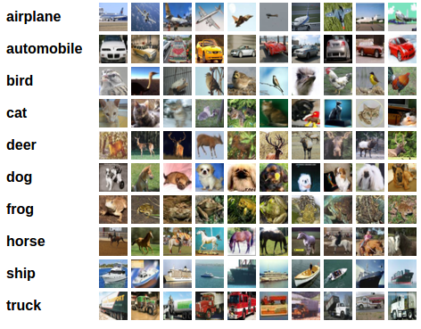
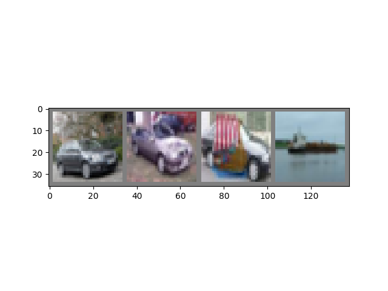
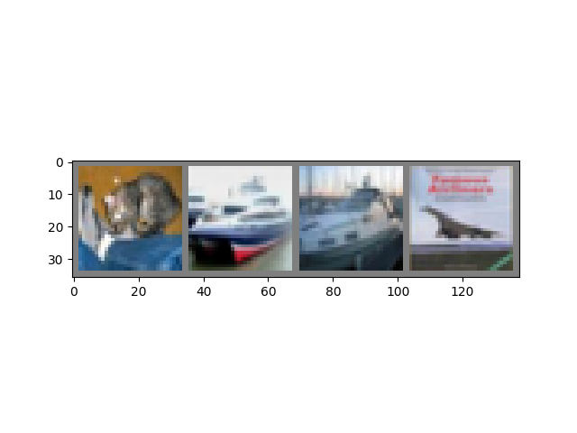

Note
Go to the end to download the full example code.
Training a Classifier#
Created On: Mar 24, 2017 | Last Updated: Sep 30, 2025 | Last Verified: Not Verified
This is it. You have seen how to define neural networks, compute loss and make updates to the weights of the network.
Now you might be thinking,
What about data?#
Generally, when you have to deal with image, text, audio or video data,
you can use standard python packages that load data into a numpy array.
Then you can convert this array into a torch.*Tensor.
For images, packages such as Pillow, OpenCV are useful
For audio, packages such as scipy and librosa
For text, either raw Python or Cython based loading, or NLTK and SpaCy are useful
Specifically for vision, we have created a package called
torchvision, that has data loaders for common datasets such as
ImageNet, CIFAR10, MNIST, etc. and data transformers for images, viz.,
torchvision.datasets and torch.utils.data.DataLoader.
This provides a huge convenience and avoids writing boilerplate code.
For this tutorial, we will use the CIFAR10 dataset. It has the classes: ‘airplane’, ‘automobile’, ‘bird’, ‘cat’, ‘deer’, ‘dog’, ‘frog’, ‘horse’, ‘ship’, ‘truck’. The images in CIFAR-10 are of size 3x32x32, i.e. 3-channel color images of 32x32 pixels in size.

cifar10#
Training an image classifier#
We will do the following steps in order:
Load and normalize the CIFAR10 training and test datasets using
torchvisionDefine a Convolutional Neural Network
Define a loss function
Train the network on the training data
Test the network on the test data
1. Load and normalize CIFAR10#
Using torchvision, it’s extremely easy to load CIFAR10.
import torch
import torchvision
import torchvision.transforms as transforms
The output of torchvision datasets are PILImage images of range [0, 1]. We transform them to Tensors of normalized range [-1, 1].
Note
If you are running this tutorial on Windows or MacOS and encounter a BrokenPipeError or RuntimeError related to multiprocessing, try setting the num_worker of torch.utils.data.DataLoader() to 0.
transform = transforms.Compose(
[transforms.ToTensor(),
transforms.Normalize((0.5, 0.5, 0.5), (0.5, 0.5, 0.5))])
batch_size = 4
trainset = torchvision.datasets.CIFAR10(root='./data', train=True,
download=True, transform=transform)
trainloader = torch.utils.data.DataLoader(trainset, batch_size=batch_size,
shuffle=True, num_workers=2)
testset = torchvision.datasets.CIFAR10(root='./data', train=False,
download=True, transform=transform)
testloader = torch.utils.data.DataLoader(testset, batch_size=batch_size,
shuffle=False, num_workers=2)
classes = ('plane', 'car', 'bird', 'cat',
'deer', 'dog', 'frog', 'horse', 'ship', 'truck')
0%| | 0.00/170M [00:00<?, ?B/s]
0%| | 65.5k/170M [00:00<06:37, 428kB/s]
0%| | 131k/170M [00:00<06:49, 416kB/s]
0%| | 197k/170M [00:00<06:46, 419kB/s]
0%| | 262k/170M [00:00<06:49, 415kB/s]
0%| | 328k/170M [00:00<06:50, 415kB/s]
0%| | 393k/170M [00:00<07:05, 400kB/s]
0%| | 459k/170M [00:01<07:02, 403kB/s]
0%| | 524k/170M [00:01<06:53, 411kB/s]
0%| | 590k/170M [00:01<06:55, 409kB/s]
0%| | 655k/170M [00:01<06:57, 406kB/s]
0%| | 721k/170M [00:01<07:08, 397kB/s]
0%| | 786k/170M [00:01<07:07, 397kB/s]
0%| | 852k/170M [00:02<07:00, 404kB/s]
1%| | 918k/170M [00:02<07:01, 402kB/s]
1%| | 983k/170M [00:02<07:01, 402kB/s]
1%| | 1.05M/170M [00:02<07:14, 390kB/s]
1%| | 1.11M/170M [00:02<07:08, 396kB/s]
1%| | 1.18M/170M [00:02<07:07, 396kB/s]
1%| | 1.25M/170M [00:03<06:59, 403kB/s]
1%| | 1.31M/170M [00:03<06:58, 405kB/s]
1%| | 1.38M/170M [00:03<07:13, 390kB/s]
1%| | 1.44M/170M [00:03<07:06, 397kB/s]
1%| | 1.51M/170M [00:03<07:09, 394kB/s]
1%| | 1.57M/170M [00:03<06:59, 403kB/s]
1%| | 1.64M/170M [00:04<06:55, 407kB/s]
1%| | 1.70M/170M [00:04<07:17, 386kB/s]
1%| | 1.77M/170M [00:04<07:13, 390kB/s]
1%| | 1.84M/170M [00:04<07:09, 393kB/s]
1%| | 1.90M/170M [00:04<07:03, 398kB/s]
1%| | 1.97M/170M [00:04<07:00, 401kB/s]
1%| | 2.03M/170M [00:05<07:00, 400kB/s]
1%| | 2.10M/170M [00:05<07:11, 390kB/s]
1%|▏ | 2.16M/170M [00:05<07:05, 396kB/s]
1%|▏ | 2.23M/170M [00:05<07:00, 400kB/s]
1%|▏ | 2.29M/170M [00:05<06:55, 405kB/s]
1%|▏ | 2.36M/170M [00:05<07:21, 381kB/s]
1%|▏ | 2.42M/170M [00:06<07:42, 363kB/s]
1%|▏ | 2.49M/170M [00:06<07:00, 400kB/s]
1%|▏ | 2.56M/170M [00:06<06:50, 409kB/s]
2%|▏ | 2.62M/170M [00:06<06:54, 405kB/s]
2%|▏ | 2.69M/170M [00:06<06:49, 410kB/s]
2%|▏ | 2.75M/170M [00:06<07:04, 396kB/s]
2%|▏ | 2.82M/170M [00:07<07:02, 397kB/s]
2%|▏ | 2.88M/170M [00:07<06:58, 401kB/s]
2%|▏ | 2.95M/170M [00:07<06:52, 407kB/s]
2%|▏ | 3.01M/170M [00:07<06:51, 407kB/s]
2%|▏ | 3.08M/170M [00:07<07:02, 396kB/s]
2%|▏ | 3.15M/170M [00:07<06:55, 402kB/s]
2%|▏ | 3.21M/170M [00:08<06:57, 401kB/s]
2%|▏ | 3.28M/170M [00:08<06:52, 405kB/s]
2%|▏ | 3.34M/170M [00:08<06:54, 403kB/s]
2%|▏ | 3.41M/170M [00:08<06:58, 399kB/s]
2%|▏ | 3.47M/170M [00:08<07:08, 390kB/s]
2%|▏ | 3.54M/170M [00:08<07:00, 397kB/s]
2%|▏ | 3.60M/170M [00:09<06:55, 402kB/s]
2%|▏ | 3.67M/170M [00:09<06:53, 403kB/s]
2%|▏ | 3.74M/170M [00:09<06:50, 406kB/s]
2%|▏ | 3.80M/170M [00:09<07:09, 388kB/s]
2%|▏ | 3.87M/170M [00:09<07:01, 396kB/s]
2%|▏ | 3.93M/170M [00:09<06:56, 400kB/s]
2%|▏ | 4.00M/170M [00:10<06:57, 399kB/s]
2%|▏ | 4.06M/170M [00:10<06:54, 402kB/s]
2%|▏ | 4.13M/170M [00:10<07:12, 385kB/s]
2%|▏ | 4.19M/170M [00:10<07:04, 392kB/s]
2%|▏ | 4.26M/170M [00:10<07:01, 394kB/s]
3%|▎ | 4.33M/170M [00:10<07:13, 383kB/s]
3%|▎ | 4.39M/170M [00:11<06:51, 403kB/s]
3%|▎ | 4.46M/170M [00:11<07:09, 387kB/s]
3%|▎ | 4.52M/170M [00:11<07:00, 394kB/s]
3%|▎ | 4.59M/170M [00:11<06:59, 396kB/s]
3%|▎ | 4.65M/170M [00:11<06:53, 401kB/s]
3%|▎ | 4.72M/170M [00:11<06:50, 404kB/s]
3%|▎ | 4.78M/170M [00:12<07:05, 389kB/s]
3%|▎ | 4.85M/170M [00:12<07:00, 394kB/s]
3%|▎ | 4.92M/170M [00:12<07:01, 393kB/s]
3%|▎ | 4.98M/170M [00:12<06:52, 401kB/s]
3%|▎ | 5.05M/170M [00:12<06:48, 405kB/s]
3%|▎ | 5.11M/170M [00:12<06:51, 402kB/s]
3%|▎ | 5.18M/170M [00:13<07:22, 373kB/s]
3%|▎ | 5.24M/170M [00:13<06:49, 403kB/s]
3%|▎ | 5.31M/170M [00:13<06:52, 401kB/s]
3%|▎ | 5.37M/170M [00:13<06:52, 400kB/s]
3%|▎ | 5.44M/170M [00:13<07:01, 391kB/s]
3%|▎ | 5.51M/170M [00:13<07:06, 387kB/s]
3%|▎ | 5.57M/170M [00:13<06:59, 393kB/s]
3%|▎ | 5.64M/170M [00:14<06:55, 397kB/s]
3%|▎ | 5.70M/170M [00:14<06:53, 398kB/s]
3%|▎ | 5.77M/170M [00:14<06:52, 399kB/s]
3%|▎ | 5.83M/170M [00:14<07:12, 380kB/s]
3%|▎ | 5.90M/170M [00:14<07:15, 378kB/s]
3%|▎ | 5.96M/170M [00:15<06:55, 396kB/s]
4%|▎ | 6.03M/170M [00:15<06:51, 399kB/s]
4%|▎ | 6.09M/170M [00:15<07:05, 386kB/s]
4%|▎ | 6.16M/170M [00:15<07:17, 376kB/s]
4%|▎ | 6.23M/170M [00:15<06:53, 398kB/s]
4%|▎ | 6.29M/170M [00:15<06:52, 398kB/s]
4%|▎ | 6.36M/170M [00:16<07:01, 390kB/s]
4%|▍ | 6.42M/170M [00:16<06:48, 402kB/s]
4%|▍ | 6.49M/170M [00:16<07:08, 383kB/s]
4%|▍ | 6.55M/170M [00:16<06:58, 392kB/s]
4%|▍ | 6.62M/170M [00:16<06:53, 396kB/s]
4%|▍ | 6.68M/170M [00:16<06:49, 401kB/s]
4%|▍ | 6.75M/170M [00:16<06:45, 404kB/s]
4%|▍ | 6.82M/170M [00:17<06:45, 404kB/s]
4%|▍ | 6.88M/170M [00:17<07:03, 387kB/s]
4%|▍ | 6.95M/170M [00:17<06:52, 396kB/s]
4%|▍ | 7.01M/170M [00:17<06:53, 396kB/s]
4%|▍ | 7.08M/170M [00:17<07:06, 383kB/s]
4%|▍ | 7.14M/170M [00:17<06:40, 408kB/s]
4%|▍ | 7.21M/170M [00:18<06:56, 392kB/s]
4%|▍ | 7.27M/170M [00:18<06:53, 395kB/s]
4%|▍ | 7.34M/170M [00:18<06:49, 398kB/s]
4%|▍ | 7.41M/170M [00:18<06:48, 399kB/s]
4%|▍ | 7.47M/170M [00:18<06:47, 400kB/s]
4%|▍ | 7.54M/170M [00:19<07:03, 385kB/s]
4%|▍ | 7.60M/170M [00:19<06:52, 394kB/s]
4%|▍ | 7.67M/170M [00:19<06:54, 393kB/s]
5%|▍ | 7.73M/170M [00:19<06:46, 400kB/s]
5%|▍ | 7.80M/170M [00:19<06:41, 405kB/s]
5%|▍ | 7.86M/170M [00:19<06:57, 389kB/s]
5%|▍ | 7.93M/170M [00:19<06:51, 395kB/s]
5%|▍ | 8.00M/170M [00:20<06:51, 395kB/s]
5%|▍ | 8.06M/170M [00:20<06:50, 396kB/s]
5%|▍ | 8.13M/170M [00:20<06:45, 400kB/s]
5%|▍ | 8.19M/170M [00:20<07:05, 382kB/s]
5%|▍ | 8.26M/170M [00:20<06:59, 387kB/s]
5%|▍ | 8.32M/170M [00:20<06:51, 394kB/s]
5%|▍ | 8.39M/170M [00:21<06:58, 388kB/s]
5%|▍ | 8.45M/170M [00:21<06:43, 402kB/s]
5%|▍ | 8.52M/170M [00:21<06:53, 392kB/s]
5%|▌ | 8.59M/170M [00:21<06:59, 386kB/s]
5%|▌ | 8.65M/170M [00:21<06:53, 392kB/s]
5%|▌ | 8.72M/170M [00:21<06:51, 393kB/s]
5%|▌ | 8.78M/170M [00:22<07:03, 382kB/s]
5%|▌ | 8.85M/170M [00:22<06:44, 400kB/s]
5%|▌ | 8.91M/170M [00:22<07:02, 383kB/s]
5%|▌ | 8.98M/170M [00:22<06:56, 388kB/s]
5%|▌ | 9.04M/170M [00:22<06:52, 392kB/s]
5%|▌ | 9.11M/170M [00:23<06:57, 386kB/s]
5%|▌ | 9.18M/170M [00:23<06:49, 394kB/s]
5%|▌ | 9.24M/170M [00:23<07:02, 381kB/s]
5%|▌ | 9.31M/170M [00:23<07:19, 367kB/s]
5%|▌ | 9.37M/170M [00:23<07:09, 375kB/s]
6%|▌ | 9.44M/170M [00:23<06:58, 384kB/s]
6%|▌ | 9.50M/170M [00:24<06:47, 395kB/s]
6%|▌ | 9.57M/170M [00:24<06:57, 386kB/s]
6%|▌ | 9.63M/170M [00:24<06:49, 393kB/s]
6%|▌ | 9.70M/170M [00:24<06:46, 396kB/s]
6%|▌ | 9.76M/170M [00:24<06:41, 400kB/s]
6%|▌ | 9.83M/170M [00:24<06:37, 404kB/s]
6%|▌ | 9.90M/170M [00:25<06:52, 389kB/s]
6%|▌ | 9.96M/170M [00:25<06:46, 395kB/s]
6%|▌ | 10.0M/170M [00:25<06:46, 395kB/s]
6%|▌ | 10.1M/170M [00:25<06:40, 400kB/s]
6%|▌ | 10.2M/170M [00:25<06:43, 397kB/s]
6%|▌ | 10.2M/170M [00:25<06:46, 394kB/s]
6%|▌ | 10.3M/170M [00:26<06:56, 384kB/s]
6%|▌ | 10.4M/170M [00:26<06:48, 392kB/s]
6%|▌ | 10.4M/170M [00:26<06:42, 398kB/s]
6%|▌ | 10.5M/170M [00:26<06:43, 397kB/s]
6%|▌ | 10.6M/170M [00:26<06:37, 403kB/s]
6%|▌ | 10.6M/170M [00:26<06:55, 385kB/s]
6%|▋ | 10.7M/170M [00:27<06:51, 389kB/s]
6%|▋ | 10.7M/170M [00:27<06:45, 394kB/s]
6%|▋ | 10.8M/170M [00:27<06:44, 395kB/s]
6%|▋ | 10.9M/170M [00:27<06:44, 395kB/s]
6%|▋ | 10.9M/170M [00:27<06:54, 385kB/s]
6%|▋ | 11.0M/170M [00:27<06:46, 392kB/s]
6%|▋ | 11.1M/170M [00:28<06:46, 392kB/s]
7%|▋ | 11.1M/170M [00:28<06:47, 391kB/s]
7%|▋ | 11.2M/170M [00:28<06:38, 400kB/s]
7%|▋ | 11.3M/170M [00:28<06:48, 390kB/s]
7%|▋ | 11.3M/170M [00:28<06:44, 393kB/s]
7%|▋ | 11.4M/170M [00:28<06:46, 391kB/s]
7%|▋ | 11.5M/170M [00:29<06:35, 402kB/s]
7%|▋ | 11.5M/170M [00:29<06:39, 398kB/s]
7%|▋ | 11.6M/170M [00:29<06:33, 404kB/s]
7%|▋ | 11.7M/170M [00:29<06:45, 392kB/s]
7%|▋ | 11.7M/170M [00:29<06:36, 400kB/s]
7%|▋ | 11.8M/170M [00:29<06:39, 397kB/s]
7%|▋ | 11.9M/170M [00:29<06:32, 404kB/s]
7%|▋ | 11.9M/170M [00:30<06:33, 403kB/s]
7%|▋ | 12.0M/170M [00:30<06:45, 391kB/s]
7%|▋ | 12.1M/170M [00:30<06:34, 402kB/s]
7%|▋ | 12.1M/170M [00:30<06:29, 406kB/s]
7%|▋ | 12.2M/170M [00:30<06:32, 403kB/s]
7%|▋ | 12.3M/170M [00:30<06:28, 407kB/s]
7%|▋ | 12.3M/170M [00:31<06:46, 389kB/s]
7%|▋ | 12.4M/170M [00:31<06:45, 390kB/s]
7%|▋ | 12.5M/170M [00:31<06:32, 402kB/s]
7%|▋ | 12.5M/170M [00:31<06:35, 399kB/s]
7%|▋ | 12.6M/170M [00:31<06:39, 395kB/s]
7%|▋ | 12.6M/170M [00:31<06:51, 384kB/s]
7%|▋ | 12.7M/170M [00:32<06:38, 396kB/s]
7%|▋ | 12.8M/170M [00:32<06:36, 398kB/s]
8%|▊ | 12.8M/170M [00:32<06:31, 402kB/s]
8%|▊ | 12.9M/170M [00:32<06:55, 379kB/s]
8%|▊ | 13.0M/170M [00:32<06:36, 397kB/s]
8%|▊ | 13.0M/170M [00:32<06:33, 400kB/s]
8%|▊ | 13.1M/170M [00:33<06:54, 380kB/s]
8%|▊ | 13.2M/170M [00:33<06:28, 405kB/s]
8%|▊ | 13.2M/170M [00:33<06:55, 379kB/s]
8%|▊ | 13.3M/170M [00:33<07:21, 356kB/s]
8%|▊ | 13.4M/170M [00:33<07:25, 353kB/s]
8%|▊ | 13.4M/170M [00:34<07:40, 341kB/s]
8%|▊ | 13.5M/170M [00:34<07:45, 338kB/s]
8%|▊ | 13.6M/170M [00:34<07:43, 339kB/s]
8%|▊ | 13.6M/170M [00:34<08:03, 324kB/s]
8%|▊ | 13.7M/170M [00:34<08:09, 320kB/s]
8%|▊ | 13.7M/170M [00:35<07:40, 341kB/s]
8%|▊ | 13.8M/170M [00:35<07:18, 357kB/s]
8%|▊ | 13.9M/170M [00:35<07:05, 368kB/s]
8%|▊ | 13.9M/170M [00:35<06:52, 380kB/s]
8%|▊ | 14.0M/170M [00:35<06:58, 374kB/s]
8%|▊ | 14.1M/170M [00:35<06:47, 384kB/s]
8%|▊ | 14.1M/170M [00:36<06:43, 387kB/s]
8%|▊ | 14.2M/170M [00:36<06:41, 389kB/s]
8%|▊ | 14.3M/170M [00:36<06:32, 398kB/s]
8%|▊ | 14.3M/170M [00:36<06:30, 400kB/s]
8%|▊ | 14.4M/170M [00:36<06:40, 390kB/s]
8%|▊ | 14.5M/170M [00:36<06:36, 394kB/s]
9%|▊ | 14.5M/170M [00:36<06:36, 394kB/s]
9%|▊ | 14.6M/170M [00:37<06:26, 404kB/s]
9%|▊ | 14.6M/170M [00:37<06:25, 405kB/s]
9%|▊ | 14.7M/170M [00:37<06:42, 387kB/s]
9%|▊ | 14.8M/170M [00:37<06:34, 395kB/s]
9%|▊ | 14.8M/170M [00:37<06:32, 396kB/s]
9%|▊ | 14.9M/170M [00:37<06:27, 402kB/s]
9%|▉ | 15.0M/170M [00:38<06:26, 403kB/s]
9%|▉ | 15.0M/170M [00:38<06:40, 388kB/s]
9%|▉ | 15.1M/170M [00:38<06:35, 393kB/s]
9%|▉ | 15.2M/170M [00:38<06:30, 398kB/s]
9%|▉ | 15.2M/170M [00:38<06:28, 399kB/s]
9%|▉ | 15.3M/170M [00:38<06:29, 398kB/s]
9%|▉ | 15.4M/170M [00:39<06:43, 384kB/s]
9%|▉ | 15.4M/170M [00:39<06:45, 382kB/s]
9%|▉ | 15.5M/170M [00:39<06:28, 398kB/s]
9%|▉ | 15.6M/170M [00:39<06:26, 401kB/s]
9%|▉ | 15.6M/170M [00:39<06:25, 402kB/s]
9%|▉ | 15.7M/170M [00:39<06:24, 403kB/s]
9%|▉ | 15.8M/170M [00:40<06:38, 388kB/s]
9%|▉ | 15.8M/170M [00:40<06:30, 396kB/s]
9%|▉ | 15.9M/170M [00:40<06:28, 398kB/s]
9%|▉ | 16.0M/170M [00:40<06:28, 398kB/s]
9%|▉ | 16.0M/170M [00:40<06:27, 399kB/s]
9%|▉ | 16.1M/170M [00:40<06:55, 371kB/s]
9%|▉ | 16.2M/170M [00:41<06:30, 395kB/s]
10%|▉ | 16.2M/170M [00:41<06:30, 395kB/s]
10%|▉ | 16.3M/170M [00:41<06:25, 400kB/s]
10%|▉ | 16.4M/170M [00:41<06:26, 398kB/s]
10%|▉ | 16.4M/170M [00:41<06:33, 391kB/s]
10%|▉ | 16.5M/170M [00:41<06:30, 395kB/s]
10%|▉ | 16.5M/170M [00:42<06:24, 400kB/s]
10%|▉ | 16.6M/170M [00:42<06:32, 392kB/s]
10%|▉ | 16.7M/170M [00:42<06:50, 375kB/s]
10%|▉ | 16.7M/170M [00:42<06:53, 372kB/s]
10%|▉ | 16.8M/170M [00:42<06:39, 384kB/s]
10%|▉ | 16.9M/170M [00:42<06:32, 392kB/s]
10%|▉ | 16.9M/170M [00:43<06:32, 391kB/s]
10%|▉ | 17.0M/170M [00:43<06:31, 392kB/s]
10%|█ | 17.1M/170M [00:43<06:40, 383kB/s]
10%|█ | 17.1M/170M [00:43<06:26, 396kB/s]
10%|█ | 17.2M/170M [00:43<06:23, 400kB/s]
10%|█ | 17.3M/170M [00:43<06:31, 392kB/s]
10%|█ | 17.3M/170M [00:44<06:39, 383kB/s]
10%|█ | 17.4M/170M [00:44<06:13, 410kB/s]
10%|█ | 17.5M/170M [00:44<06:33, 389kB/s]
10%|█ | 17.5M/170M [00:44<06:23, 399kB/s]
10%|█ | 17.6M/170M [00:44<06:26, 396kB/s]
10%|█ | 17.7M/170M [00:44<06:27, 394kB/s]
10%|█ | 17.7M/170M [00:45<06:25, 396kB/s]
10%|█ | 17.8M/170M [00:45<06:49, 373kB/s]
10%|█ | 17.9M/170M [00:45<06:28, 393kB/s]
11%|█ | 17.9M/170M [00:45<06:23, 398kB/s]
11%|█ | 18.0M/170M [00:45<06:24, 396kB/s]
11%|█ | 18.1M/170M [00:45<06:32, 389kB/s]
11%|█ | 18.1M/170M [00:46<06:22, 399kB/s]
11%|█ | 18.2M/170M [00:46<06:25, 395kB/s]
11%|█ | 18.3M/170M [00:46<06:35, 385kB/s]
11%|█ | 18.3M/170M [00:46<06:16, 405kB/s]
11%|█ | 18.4M/170M [00:46<06:17, 403kB/s]
11%|█ | 18.4M/170M [00:46<06:32, 387kB/s]
11%|█ | 18.5M/170M [00:47<06:32, 388kB/s]
11%|█ | 18.6M/170M [00:47<06:23, 396kB/s]
11%|█ | 18.6M/170M [00:47<06:36, 383kB/s]
11%|█ | 18.7M/170M [00:47<06:23, 396kB/s]
11%|█ | 18.8M/170M [00:47<06:46, 373kB/s]
11%|█ | 18.8M/170M [00:48<06:27, 391kB/s]
11%|█ | 18.9M/170M [00:48<06:21, 398kB/s]
11%|█ | 19.0M/170M [00:48<06:20, 399kB/s]
11%|█ | 19.0M/170M [00:48<06:20, 398kB/s]
11%|█ | 19.1M/170M [00:48<06:17, 401kB/s]
11%|█ | 19.2M/170M [00:48<06:36, 382kB/s]
11%|█▏ | 19.2M/170M [00:49<06:28, 390kB/s]
11%|█▏ | 19.3M/170M [00:49<06:26, 392kB/s]
11%|█▏ | 19.4M/170M [00:49<06:24, 393kB/s]
11%|█▏ | 19.4M/170M [00:49<06:23, 394kB/s]
11%|█▏ | 19.5M/170M [00:49<06:38, 379kB/s]
11%|█▏ | 19.6M/170M [00:49<06:31, 386kB/s]
12%|█▏ | 19.6M/170M [00:50<06:27, 389kB/s]
12%|█▏ | 19.7M/170M [00:50<06:27, 389kB/s]
12%|█▏ | 19.8M/170M [00:50<06:28, 388kB/s]
12%|█▏ | 19.8M/170M [00:50<06:38, 378kB/s]
12%|█▏ | 19.9M/170M [00:50<06:34, 381kB/s]
12%|█▏ | 20.0M/170M [00:50<06:31, 384kB/s]
12%|█▏ | 20.0M/170M [00:51<06:27, 389kB/s]
12%|█▏ | 20.1M/170M [00:51<06:26, 390kB/s]
12%|█▏ | 20.2M/170M [00:51<06:35, 380kB/s]
12%|█▏ | 20.2M/170M [00:51<06:39, 377kB/s]
12%|█▏ | 20.3M/170M [00:51<06:31, 383kB/s]
12%|█▏ | 20.3M/170M [00:51<06:48, 368kB/s]
12%|█▏ | 20.4M/170M [00:52<06:47, 368kB/s]
12%|█▏ | 20.5M/170M [00:52<06:59, 357kB/s]
12%|█▏ | 20.5M/170M [00:52<06:48, 367kB/s]
12%|█▏ | 20.6M/170M [00:52<06:49, 366kB/s]
12%|█▏ | 20.7M/170M [00:52<06:51, 365kB/s]
12%|█▏ | 20.7M/170M [00:53<06:50, 365kB/s]
12%|█▏ | 20.8M/170M [00:53<06:53, 362kB/s]
12%|█▏ | 20.9M/170M [00:53<07:14, 344kB/s]
12%|█▏ | 20.9M/170M [00:53<06:53, 361kB/s]
12%|█▏ | 21.0M/170M [00:53<07:00, 355kB/s]
12%|█▏ | 21.1M/170M [00:53<06:58, 357kB/s]
12%|█▏ | 21.1M/170M [00:54<06:40, 373kB/s]
12%|█▏ | 21.2M/170M [00:54<06:52, 362kB/s]
12%|█▏ | 21.3M/170M [00:54<06:44, 369kB/s]
13%|█▎ | 21.3M/170M [00:54<06:40, 373kB/s]
13%|█▎ | 21.4M/170M [00:54<06:35, 377kB/s]
13%|█▎ | 21.5M/170M [00:54<06:43, 370kB/s]
13%|█▎ | 21.5M/170M [00:55<06:56, 358kB/s]
13%|█▎ | 21.6M/170M [00:55<06:55, 358kB/s]
13%|█▎ | 21.7M/170M [00:55<06:47, 366kB/s]
13%|█▎ | 21.7M/170M [00:55<06:54, 359kB/s]
13%|█▎ | 21.8M/170M [00:55<06:48, 364kB/s]
13%|█▎ | 21.9M/170M [00:56<06:59, 354kB/s]
13%|█▎ | 21.9M/170M [00:56<06:53, 359kB/s]
13%|█▎ | 22.0M/170M [00:56<06:45, 366kB/s]
13%|█▎ | 22.1M/170M [00:56<06:44, 367kB/s]
13%|█▎ | 22.1M/170M [00:56<06:37, 373kB/s]
13%|█▎ | 22.2M/170M [00:57<07:13, 342kB/s]
13%|█▎ | 22.2M/170M [00:57<06:36, 374kB/s]
13%|█▎ | 22.3M/170M [00:57<06:33, 376kB/s]
13%|█▎ | 22.4M/170M [00:57<06:28, 381kB/s]
13%|█▎ | 22.4M/170M [00:57<06:26, 383kB/s]
13%|█▎ | 22.5M/170M [00:57<06:22, 387kB/s]
13%|█▎ | 22.6M/170M [00:58<06:30, 378kB/s]
13%|█▎ | 22.6M/170M [00:58<06:30, 379kB/s]
13%|█▎ | 22.7M/170M [00:58<06:23, 386kB/s]
13%|█▎ | 22.8M/170M [00:58<06:21, 387kB/s]
13%|█▎ | 22.8M/170M [00:58<06:24, 384kB/s]
13%|█▎ | 22.9M/170M [00:58<06:36, 372kB/s]
13%|█▎ | 23.0M/170M [00:59<06:29, 379kB/s]
14%|█▎ | 23.0M/170M [00:59<06:24, 383kB/s]
14%|█▎ | 23.1M/170M [00:59<06:21, 386kB/s]
14%|█▎ | 23.2M/170M [00:59<06:31, 376kB/s]
14%|█▎ | 23.2M/170M [00:59<06:25, 382kB/s]
14%|█▎ | 23.3M/170M [00:59<06:22, 385kB/s]
14%|█▎ | 23.4M/170M [01:00<06:19, 388kB/s]
14%|█▎ | 23.4M/170M [01:00<06:17, 389kB/s]
14%|█▍ | 23.5M/170M [01:00<06:21, 385kB/s]
14%|█▍ | 23.6M/170M [01:00<06:33, 373kB/s]
14%|█▍ | 23.6M/170M [01:00<06:23, 383kB/s]
14%|█▍ | 23.7M/170M [01:00<06:17, 389kB/s]
14%|█▍ | 23.8M/170M [01:01<06:16, 390kB/s]
14%|█▍ | 23.8M/170M [01:01<06:21, 385kB/s]
14%|█▍ | 23.9M/170M [01:01<06:13, 393kB/s]
14%|█▍ | 24.0M/170M [01:01<06:27, 378kB/s]
14%|█▍ | 24.0M/170M [01:01<06:20, 385kB/s]
14%|█▍ | 24.1M/170M [01:01<06:26, 379kB/s]
14%|█▍ | 24.2M/170M [01:02<06:08, 397kB/s]
14%|█▍ | 24.2M/170M [01:02<06:04, 401kB/s]
14%|█▍ | 24.3M/170M [01:02<06:25, 379kB/s]
14%|█▍ | 24.3M/170M [01:02<06:09, 396kB/s]
14%|█▍ | 24.4M/170M [01:02<06:08, 396kB/s]
14%|█▍ | 24.5M/170M [01:02<06:04, 400kB/s]
14%|█▍ | 24.5M/170M [01:03<06:17, 386kB/s]
14%|█▍ | 24.6M/170M [01:03<06:28, 376kB/s]
14%|█▍ | 24.7M/170M [01:03<06:08, 396kB/s]
15%|█▍ | 24.7M/170M [01:03<06:10, 394kB/s]
15%|█▍ | 24.8M/170M [01:03<06:03, 400kB/s]
15%|█▍ | 24.9M/170M [01:03<06:01, 403kB/s]
15%|█▍ | 24.9M/170M [01:04<06:19, 384kB/s]
15%|█▍ | 25.0M/170M [01:04<06:11, 391kB/s]
15%|█▍ | 25.1M/170M [01:04<06:21, 381kB/s]
15%|█▍ | 25.1M/170M [01:04<05:54, 410kB/s]
15%|█▍ | 25.2M/170M [01:04<05:58, 405kB/s]
15%|█▍ | 25.3M/170M [01:04<06:14, 388kB/s]
15%|█▍ | 25.3M/170M [01:05<06:11, 391kB/s]
15%|█▍ | 25.4M/170M [01:05<06:05, 397kB/s]
15%|█▍ | 25.5M/170M [01:05<06:14, 387kB/s]
15%|█▍ | 25.5M/170M [01:05<05:58, 404kB/s]
15%|█▌ | 25.6M/170M [01:05<06:01, 401kB/s]
15%|█▌ | 25.7M/170M [01:05<06:13, 388kB/s]
15%|█▌ | 25.7M/170M [01:06<06:25, 375kB/s]
15%|█▌ | 25.8M/170M [01:06<06:01, 401kB/s]
15%|█▌ | 25.9M/170M [01:06<05:58, 403kB/s]
15%|█▌ | 25.9M/170M [01:06<05:55, 407kB/s]
15%|█▌ | 26.0M/170M [01:06<06:05, 396kB/s]
15%|█▌ | 26.1M/170M [01:06<06:05, 395kB/s]
15%|█▌ | 26.1M/170M [01:07<06:03, 397kB/s]
15%|█▌ | 26.2M/170M [01:07<06:17, 383kB/s]
15%|█▌ | 26.2M/170M [01:07<05:57, 404kB/s]
15%|█▌ | 26.3M/170M [01:07<06:06, 393kB/s]
15%|█▌ | 26.4M/170M [01:07<06:08, 391kB/s]
16%|█▌ | 26.4M/170M [01:07<06:06, 393kB/s]
16%|█▌ | 26.5M/170M [01:08<06:02, 397kB/s]
16%|█▌ | 26.6M/170M [01:08<06:11, 388kB/s]
16%|█▌ | 26.6M/170M [01:08<06:22, 377kB/s]
16%|█▌ | 26.7M/170M [01:08<06:13, 385kB/s]
16%|█▌ | 26.8M/170M [01:08<06:07, 391kB/s]
16%|█▌ | 26.8M/170M [01:08<06:12, 386kB/s]
16%|█▌ | 26.9M/170M [01:09<06:11, 387kB/s]
16%|█▌ | 27.0M/170M [01:09<06:16, 381kB/s]
16%|█▌ | 27.0M/170M [01:09<06:13, 384kB/s]
16%|█▌ | 27.1M/170M [01:09<06:07, 390kB/s]
16%|█▌ | 27.2M/170M [01:09<06:08, 389kB/s]
16%|█▌ | 27.2M/170M [01:09<06:08, 389kB/s]
16%|█▌ | 27.3M/170M [01:10<06:07, 390kB/s]
16%|█▌ | 27.4M/170M [01:10<06:21, 376kB/s]
16%|█▌ | 27.4M/170M [01:10<06:15, 381kB/s]
16%|█▌ | 27.5M/170M [01:10<06:14, 382kB/s]
16%|█▌ | 27.6M/170M [01:10<06:10, 386kB/s]
16%|█▌ | 27.6M/170M [01:10<06:06, 390kB/s]
16%|█▌ | 27.7M/170M [01:11<06:16, 379kB/s]
16%|█▋ | 27.8M/170M [01:11<06:15, 380kB/s]
16%|█▋ | 27.8M/170M [01:11<06:13, 382kB/s]
16%|█▋ | 27.9M/170M [01:11<06:08, 387kB/s]
16%|█▋ | 28.0M/170M [01:11<06:11, 384kB/s]
16%|█▋ | 28.0M/170M [01:12<06:21, 373kB/s]
16%|█▋ | 28.1M/170M [01:12<06:20, 375kB/s]
17%|█▋ | 28.1M/170M [01:12<06:13, 381kB/s]
17%|█▋ | 28.2M/170M [01:12<06:07, 387kB/s]
17%|█▋ | 28.3M/170M [01:12<06:06, 389kB/s]
17%|█▋ | 28.3M/170M [01:12<06:17, 377kB/s]
17%|█▋ | 28.4M/170M [01:13<06:11, 383kB/s]
17%|█▋ | 28.5M/170M [01:13<06:05, 388kB/s]
17%|█▋ | 28.5M/170M [01:13<06:07, 386kB/s]
17%|█▋ | 28.6M/170M [01:13<06:00, 394kB/s]
17%|█▋ | 28.7M/170M [01:13<06:11, 381kB/s]
17%|█▋ | 28.7M/170M [01:13<06:07, 386kB/s]
17%|█▋ | 28.8M/170M [01:14<06:06, 386kB/s]
17%|█▋ | 28.9M/170M [01:14<06:08, 385kB/s]
17%|█▋ | 28.9M/170M [01:14<06:04, 389kB/s]
17%|█▋ | 29.0M/170M [01:14<06:04, 388kB/s]
17%|█▋ | 29.1M/170M [01:14<06:20, 372kB/s]
17%|█▋ | 29.1M/170M [01:14<06:11, 381kB/s]
17%|█▋ | 29.2M/170M [01:15<06:09, 383kB/s]
17%|█▋ | 29.3M/170M [01:15<06:04, 387kB/s]
17%|█▋ | 29.3M/170M [01:15<06:04, 387kB/s]
17%|█▋ | 29.4M/170M [01:15<06:15, 376kB/s]
17%|█▋ | 29.5M/170M [01:15<06:37, 355kB/s]
17%|█▋ | 29.5M/170M [01:15<06:15, 376kB/s]
17%|█▋ | 29.6M/170M [01:16<06:14, 376kB/s]
17%|█▋ | 29.7M/170M [01:16<06:10, 380kB/s]
17%|█▋ | 29.7M/170M [01:16<06:16, 374kB/s]
17%|█▋ | 29.8M/170M [01:16<06:21, 369kB/s]
18%|█▊ | 29.9M/170M [01:16<06:13, 377kB/s]
18%|█▊ | 29.9M/170M [01:17<06:08, 381kB/s]
18%|█▊ | 30.0M/170M [01:17<06:05, 385kB/s]
18%|█▊ | 30.0M/170M [01:17<06:18, 371kB/s]
18%|█▊ | 30.1M/170M [01:17<06:15, 374kB/s]
18%|█▊ | 30.2M/170M [01:17<06:09, 380kB/s]
18%|█▊ | 30.2M/170M [01:17<06:29, 360kB/s]
18%|█▊ | 30.3M/170M [01:18<06:00, 389kB/s]
18%|█▊ | 30.4M/170M [01:18<06:16, 372kB/s]
18%|█▊ | 30.4M/170M [01:18<06:09, 379kB/s]
18%|█▊ | 30.5M/170M [01:18<06:06, 382kB/s]
18%|█▊ | 30.6M/170M [01:18<05:59, 389kB/s]
18%|█▊ | 30.6M/170M [01:18<06:02, 386kB/s]
18%|█▊ | 30.7M/170M [01:19<06:09, 378kB/s]
18%|█▊ | 30.8M/170M [01:19<06:14, 373kB/s]
18%|█▊ | 30.8M/170M [01:19<05:58, 390kB/s]
18%|█▊ | 30.9M/170M [01:19<05:57, 390kB/s]
18%|█▊ | 31.0M/170M [01:19<05:56, 391kB/s]
18%|█▊ | 31.0M/170M [01:19<05:56, 392kB/s]
18%|█▊ | 31.1M/170M [01:20<06:06, 380kB/s]
18%|█▊ | 31.2M/170M [01:20<05:59, 387kB/s]
18%|█▊ | 31.2M/170M [01:20<05:57, 389kB/s]
18%|█▊ | 31.3M/170M [01:20<05:52, 395kB/s]
18%|█▊ | 31.4M/170M [01:20<05:50, 397kB/s]
18%|█▊ | 31.4M/170M [01:20<06:04, 381kB/s]
18%|█▊ | 31.5M/170M [01:21<05:58, 388kB/s]
19%|█▊ | 31.6M/170M [01:21<06:02, 384kB/s]
19%|█▊ | 31.6M/170M [01:21<05:53, 393kB/s]
19%|█▊ | 31.7M/170M [01:21<05:56, 389kB/s]
19%|█▊ | 31.8M/170M [01:21<06:03, 381kB/s]
19%|█▊ | 31.8M/170M [01:21<05:57, 387kB/s]
19%|█▊ | 31.9M/170M [01:22<05:51, 394kB/s]
19%|█▊ | 31.9M/170M [01:22<05:59, 386kB/s]
19%|█▉ | 32.0M/170M [01:22<05:50, 395kB/s]
19%|█▉ | 32.1M/170M [01:22<05:46, 399kB/s]
19%|█▉ | 32.1M/170M [01:22<05:59, 384kB/s]
19%|█▉ | 32.2M/170M [01:22<05:53, 391kB/s]
19%|█▉ | 32.3M/170M [01:23<05:47, 398kB/s]
19%|█▉ | 32.3M/170M [01:23<05:49, 395kB/s]
19%|█▉ | 32.4M/170M [01:23<05:47, 397kB/s]
19%|█▉ | 32.5M/170M [01:23<05:55, 388kB/s]
19%|█▉ | 32.5M/170M [01:23<05:56, 387kB/s]
19%|█▉ | 32.6M/170M [01:23<05:50, 394kB/s]
19%|█▉ | 32.7M/170M [01:24<05:53, 390kB/s]
19%|█▉ | 32.7M/170M [01:24<05:43, 401kB/s]
19%|█▉ | 32.8M/170M [01:24<05:54, 389kB/s]
19%|█▉ | 32.9M/170M [01:24<06:03, 378kB/s]
19%|█▉ | 32.9M/170M [01:24<05:42, 402kB/s]
19%|█▉ | 33.0M/170M [01:24<05:43, 401kB/s]
19%|█▉ | 33.1M/170M [01:25<05:42, 401kB/s]
19%|█▉ | 33.1M/170M [01:25<05:55, 387kB/s]
19%|█▉ | 33.2M/170M [01:25<05:45, 398kB/s]
20%|█▉ | 33.3M/170M [01:25<05:44, 399kB/s]
20%|█▉ | 33.3M/170M [01:25<05:42, 401kB/s]
20%|█▉ | 33.4M/170M [01:25<05:41, 401kB/s]
20%|█▉ | 33.5M/170M [01:26<05:51, 390kB/s]
20%|█▉ | 33.5M/170M [01:26<05:47, 395kB/s]
20%|█▉ | 33.6M/170M [01:26<05:57, 383kB/s]
20%|█▉ | 33.7M/170M [01:26<05:41, 401kB/s]
20%|█▉ | 33.7M/170M [01:26<05:45, 395kB/s]
20%|█▉ | 33.8M/170M [01:26<05:35, 407kB/s]
20%|█▉ | 33.8M/170M [01:27<05:56, 383kB/s]
20%|█▉ | 33.9M/170M [01:27<05:52, 388kB/s]
20%|█▉ | 34.0M/170M [01:27<05:52, 387kB/s]
20%|█▉ | 34.0M/170M [01:27<05:42, 399kB/s]
20%|██ | 34.1M/170M [01:27<05:37, 405kB/s]
20%|██ | 34.2M/170M [01:27<06:03, 375kB/s]
20%|██ | 34.2M/170M [01:28<05:56, 383kB/s]
20%|██ | 34.3M/170M [01:28<05:47, 392kB/s]
20%|██ | 34.4M/170M [01:28<06:03, 375kB/s]
20%|██ | 34.4M/170M [01:28<05:39, 401kB/s]
20%|██ | 34.5M/170M [01:28<05:51, 386kB/s]
20%|██ | 34.6M/170M [01:28<05:48, 390kB/s]
20%|██ | 34.6M/170M [01:29<05:40, 399kB/s]
20%|██ | 34.7M/170M [01:29<05:41, 398kB/s]
20%|██ | 34.8M/170M [01:29<05:40, 398kB/s]
20%|██ | 34.8M/170M [01:29<05:53, 384kB/s]
20%|██ | 34.9M/170M [01:29<05:49, 388kB/s]
21%|██ | 35.0M/170M [01:29<05:45, 393kB/s]
21%|██ | 35.0M/170M [01:30<05:48, 389kB/s]
21%|██ | 35.1M/170M [01:30<05:46, 391kB/s]
21%|██ | 35.2M/170M [01:30<05:59, 376kB/s]
21%|██ | 35.2M/170M [01:30<05:58, 377kB/s]
21%|██ | 35.3M/170M [01:30<05:53, 382kB/s]
21%|██ | 35.4M/170M [01:30<05:51, 384kB/s]
21%|██ | 35.4M/170M [01:31<05:49, 387kB/s]
21%|██ | 35.5M/170M [01:31<05:50, 385kB/s]
21%|██ | 35.6M/170M [01:31<06:01, 373kB/s]
21%|██ | 35.6M/170M [01:31<05:57, 378kB/s]
21%|██ | 35.7M/170M [01:31<05:54, 380kB/s]
21%|██ | 35.7M/170M [01:32<06:09, 365kB/s]
21%|██ | 35.8M/170M [01:32<06:04, 369kB/s]
21%|██ | 35.9M/170M [01:32<06:26, 348kB/s]
21%|██ | 35.9M/170M [01:32<06:22, 352kB/s]
21%|██ | 36.0M/170M [01:32<05:50, 384kB/s]
21%|██ | 36.1M/170M [01:32<05:48, 386kB/s]
21%|██ | 36.1M/170M [01:33<05:44, 390kB/s]
21%|██ | 36.2M/170M [01:33<05:57, 375kB/s]
21%|██▏ | 36.3M/170M [01:33<05:54, 379kB/s]
21%|██▏ | 36.3M/170M [01:33<05:46, 387kB/s]
21%|██▏ | 36.4M/170M [01:33<05:45, 388kB/s]
21%|██▏ | 36.5M/170M [01:33<05:43, 391kB/s]
21%|██▏ | 36.5M/170M [01:34<05:52, 380kB/s]
21%|██▏ | 36.6M/170M [01:34<05:48, 384kB/s]
22%|██▏ | 36.7M/170M [01:34<05:40, 393kB/s]
22%|██▏ | 36.7M/170M [01:34<05:42, 391kB/s]
22%|██▏ | 36.8M/170M [01:34<05:43, 390kB/s]
22%|██▏ | 36.9M/170M [01:34<05:50, 382kB/s]
22%|██▏ | 36.9M/170M [01:35<05:45, 386kB/s]
22%|██▏ | 37.0M/170M [01:35<05:41, 391kB/s]
22%|██▏ | 37.1M/170M [01:35<05:43, 388kB/s]
22%|██▏ | 37.1M/170M [01:35<05:40, 392kB/s]
22%|██▏ | 37.2M/170M [01:35<05:40, 391kB/s]
22%|██▏ | 37.3M/170M [01:35<05:52, 378kB/s]
22%|██▏ | 37.3M/170M [01:36<05:50, 380kB/s]
22%|██▏ | 37.4M/170M [01:36<05:43, 387kB/s]
22%|██▏ | 37.5M/170M [01:36<05:53, 376kB/s]
22%|██▏ | 37.5M/170M [01:36<05:34, 397kB/s]
22%|██▏ | 37.6M/170M [01:36<05:49, 381kB/s]
22%|██▏ | 37.7M/170M [01:37<05:47, 382kB/s]
22%|██▏ | 37.7M/170M [01:37<05:40, 390kB/s]
22%|██▏ | 37.8M/170M [01:37<05:39, 391kB/s]
22%|██▏ | 37.8M/170M [01:37<05:36, 394kB/s]
22%|██▏ | 37.9M/170M [01:37<05:52, 377kB/s]
22%|██▏ | 38.0M/170M [01:37<05:47, 381kB/s]
22%|██▏ | 38.0M/170M [01:38<05:44, 385kB/s]
22%|██▏ | 38.1M/170M [01:38<05:39, 390kB/s]
22%|██▏ | 38.2M/170M [01:38<05:37, 392kB/s]
22%|██▏ | 38.2M/170M [01:38<05:47, 380kB/s]
22%|██▏ | 38.3M/170M [01:38<05:41, 387kB/s]
23%|██▎ | 38.4M/170M [01:38<05:35, 394kB/s]
23%|██▎ | 38.4M/170M [01:39<05:39, 389kB/s]
23%|██▎ | 38.5M/170M [01:39<05:35, 393kB/s]
23%|██▎ | 38.6M/170M [01:39<05:43, 384kB/s]
23%|██▎ | 38.6M/170M [01:39<05:39, 388kB/s]
23%|██▎ | 38.7M/170M [01:39<05:39, 388kB/s]
23%|██▎ | 38.8M/170M [01:39<05:48, 378kB/s]
23%|██▎ | 38.8M/170M [01:40<05:33, 395kB/s]
23%|██▎ | 38.9M/170M [01:40<05:30, 398kB/s]
23%|██▎ | 39.0M/170M [01:40<05:46, 379kB/s]
23%|██▎ | 39.0M/170M [01:40<05:45, 380kB/s]
23%|██▎ | 39.1M/170M [01:40<05:48, 378kB/s]
23%|██▎ | 39.2M/170M [01:40<05:44, 381kB/s]
23%|██▎ | 39.2M/170M [01:41<05:40, 386kB/s]
23%|██▎ | 39.3M/170M [01:41<05:48, 376kB/s]
23%|██▎ | 39.4M/170M [01:41<05:47, 378kB/s]
23%|██▎ | 39.4M/170M [01:41<05:38, 388kB/s]
23%|██▎ | 39.5M/170M [01:41<05:35, 390kB/s]
23%|██▎ | 39.6M/170M [01:41<05:37, 388kB/s]
23%|██▎ | 39.6M/170M [01:42<06:08, 355kB/s]
23%|██▎ | 39.7M/170M [01:42<05:36, 389kB/s]
23%|██▎ | 39.7M/170M [01:42<05:38, 386kB/s]
23%|██▎ | 39.8M/170M [01:42<05:42, 382kB/s]
23%|██▎ | 39.9M/170M [01:42<05:49, 373kB/s]
23%|██▎ | 39.9M/170M [01:42<05:43, 380kB/s]
23%|██▎ | 40.0M/170M [01:43<05:48, 374kB/s]
24%|██▎ | 40.1M/170M [01:43<05:55, 367kB/s]
24%|██▎ | 40.1M/170M [01:43<05:33, 391kB/s]
24%|██▎ | 40.2M/170M [01:43<05:35, 389kB/s]
24%|██▎ | 40.3M/170M [01:43<05:35, 388kB/s]
24%|██▎ | 40.3M/170M [01:44<05:52, 370kB/s]
24%|██▎ | 40.4M/170M [01:44<05:46, 376kB/s]
24%|██▎ | 40.5M/170M [01:44<05:43, 379kB/s]
24%|██▍ | 40.5M/170M [01:44<05:43, 379kB/s]
24%|██▍ | 40.6M/170M [01:44<05:39, 382kB/s]
24%|██▍ | 40.7M/170M [01:44<05:49, 371kB/s]
24%|██▍ | 40.7M/170M [01:45<05:49, 371kB/s]
24%|██▍ | 40.8M/170M [01:45<05:42, 379kB/s]
24%|██▍ | 40.9M/170M [01:45<05:43, 377kB/s]
24%|██▍ | 40.9M/170M [01:45<05:48, 372kB/s]
24%|██▍ | 41.0M/170M [01:45<05:56, 363kB/s]
24%|██▍ | 41.1M/170M [01:45<05:58, 361kB/s]
24%|██▍ | 41.1M/170M [01:46<05:41, 378kB/s]
24%|██▍ | 41.2M/170M [01:46<05:40, 380kB/s]
24%|██▍ | 41.3M/170M [01:46<05:42, 377kB/s]
24%|██▍ | 41.3M/170M [01:46<06:00, 359kB/s]
24%|██▍ | 41.4M/170M [01:46<05:47, 372kB/s]
24%|██▍ | 41.5M/170M [01:47<05:45, 373kB/s]
24%|██▍ | 41.5M/170M [01:47<05:50, 367kB/s]
24%|██▍ | 41.6M/170M [01:47<05:36, 383kB/s]
24%|██▍ | 41.6M/170M [01:47<05:52, 366kB/s]
24%|██▍ | 41.7M/170M [01:47<05:50, 368kB/s]
25%|██▍ | 41.8M/170M [01:47<05:46, 372kB/s]
25%|██▍ | 41.8M/170M [01:48<05:44, 374kB/s]
25%|██▍ | 41.9M/170M [01:48<05:44, 373kB/s]
25%|██▍ | 42.0M/170M [01:48<05:42, 375kB/s]
25%|██▍ | 42.0M/170M [01:48<05:51, 365kB/s]
25%|██▍ | 42.1M/170M [01:48<05:48, 369kB/s]
25%|██▍ | 42.2M/170M [01:48<05:45, 371kB/s]
25%|██▍ | 42.2M/170M [01:49<05:42, 375kB/s]
25%|██▍ | 42.3M/170M [01:49<05:40, 377kB/s]
25%|██▍ | 42.4M/170M [01:49<05:50, 365kB/s]
25%|██▍ | 42.4M/170M [01:49<05:44, 372kB/s]
25%|██▍ | 42.5M/170M [01:49<05:44, 372kB/s]
25%|██▍ | 42.6M/170M [01:49<05:40, 376kB/s]
25%|██▌ | 42.6M/170M [01:50<05:37, 379kB/s]
25%|██▌ | 42.7M/170M [01:50<05:46, 369kB/s]
25%|██▌ | 42.8M/170M [01:50<05:44, 371kB/s]
25%|██▌ | 42.8M/170M [01:50<05:45, 369kB/s]
25%|██▌ | 42.9M/170M [01:50<05:40, 375kB/s]
25%|██▌ | 43.0M/170M [01:51<05:39, 376kB/s]
25%|██▌ | 43.0M/170M [01:51<05:53, 361kB/s]
25%|██▌ | 43.1M/170M [01:51<05:47, 367kB/s]
25%|██▌ | 43.2M/170M [01:51<05:42, 372kB/s]
25%|██▌ | 43.2M/170M [01:51<05:42, 372kB/s]
25%|██▌ | 43.3M/170M [01:51<05:38, 376kB/s]
25%|██▌ | 43.4M/170M [01:52<05:46, 367kB/s]
25%|██▌ | 43.4M/170M [01:52<05:48, 365kB/s]
26%|██▌ | 43.5M/170M [01:52<05:39, 374kB/s]
26%|██▌ | 43.5M/170M [01:52<05:36, 377kB/s]
26%|██▌ | 43.6M/170M [01:52<05:40, 372kB/s]
26%|██▌ | 43.7M/170M [01:52<05:35, 378kB/s]
26%|██▌ | 43.7M/170M [01:53<05:45, 367kB/s]
26%|██▌ | 43.8M/170M [01:53<05:42, 370kB/s]
26%|██▌ | 43.9M/170M [01:53<05:39, 373kB/s]
26%|██▌ | 43.9M/170M [01:53<05:36, 376kB/s]
26%|██▌ | 44.0M/170M [01:53<05:32, 380kB/s]
26%|██▌ | 44.1M/170M [01:54<05:48, 363kB/s]
26%|██▌ | 44.1M/170M [01:54<05:45, 366kB/s]
26%|██▌ | 44.2M/170M [01:54<05:42, 369kB/s]
26%|██▌ | 44.3M/170M [01:54<05:37, 374kB/s]
26%|██▌ | 44.3M/170M [01:54<05:36, 374kB/s]
26%|██▌ | 44.4M/170M [01:54<05:47, 362kB/s]
26%|██▌ | 44.5M/170M [01:55<05:50, 359kB/s]
26%|██▌ | 44.5M/170M [01:55<05:43, 366kB/s]
26%|██▌ | 44.6M/170M [01:55<05:36, 374kB/s]
26%|██▌ | 44.7M/170M [01:55<05:37, 373kB/s]
26%|██▌ | 44.7M/170M [01:55<05:52, 357kB/s]
26%|██▋ | 44.8M/170M [01:56<05:41, 369kB/s]
26%|██▋ | 44.9M/170M [01:56<05:39, 370kB/s]
26%|██▋ | 44.9M/170M [01:56<05:39, 370kB/s]
26%|██▋ | 45.0M/170M [01:56<05:31, 378kB/s]
26%|██▋ | 45.1M/170M [01:56<05:42, 366kB/s]
26%|██▋ | 45.1M/170M [01:56<05:38, 371kB/s]
27%|██▋ | 45.2M/170M [01:57<05:36, 373kB/s]
27%|██▋ | 45.3M/170M [01:57<05:35, 373kB/s]
27%|██▋ | 45.3M/170M [01:57<05:34, 374kB/s]
27%|██▋ | 45.4M/170M [01:57<05:42, 365kB/s]
27%|██▋ | 45.4M/170M [01:57<05:46, 361kB/s]
27%|██▋ | 45.5M/170M [01:57<05:39, 368kB/s]
27%|██▋ | 45.6M/170M [01:58<05:34, 374kB/s]
27%|██▋ | 45.6M/170M [01:58<05:32, 375kB/s]
27%|██▋ | 45.7M/170M [01:58<05:32, 376kB/s]
27%|██▋ | 45.8M/170M [01:58<05:44, 363kB/s]
27%|██▋ | 45.8M/170M [01:58<05:41, 365kB/s]
27%|██▋ | 45.9M/170M [01:59<05:37, 369kB/s]
27%|██▋ | 46.0M/170M [01:59<05:36, 370kB/s]
27%|██▋ | 46.0M/170M [01:59<05:35, 371kB/s]
27%|██▋ | 46.1M/170M [01:59<05:49, 356kB/s]
27%|██▋ | 46.2M/170M [01:59<05:38, 367kB/s]
27%|██▋ | 46.2M/170M [01:59<05:34, 372kB/s]
27%|██▋ | 46.3M/170M [02:00<05:36, 369kB/s]
27%|██▋ | 46.4M/170M [02:00<05:33, 372kB/s]
27%|██▋ | 46.4M/170M [02:00<05:42, 362kB/s]
27%|██▋ | 46.5M/170M [02:00<05:34, 370kB/s]
27%|██▋ | 46.6M/170M [02:00<05:31, 374kB/s]
27%|██▋ | 46.6M/170M [02:00<05:27, 378kB/s]
27%|██▋ | 46.7M/170M [02:01<05:31, 373kB/s]
27%|██▋ | 46.8M/170M [02:01<05:42, 361kB/s]
27%|██▋ | 46.8M/170M [02:01<05:36, 368kB/s]
28%|██▊ | 46.9M/170M [02:01<05:29, 375kB/s]
28%|██▊ | 47.0M/170M [02:01<05:36, 367kB/s]
28%|██▊ | 47.0M/170M [02:02<05:22, 382kB/s]
28%|██▊ | 47.1M/170M [02:02<05:22, 383kB/s]
28%|██▊ | 47.2M/170M [02:02<05:35, 368kB/s]
28%|██▊ | 47.2M/170M [02:02<05:28, 375kB/s]
28%|██▊ | 47.3M/170M [02:02<05:28, 375kB/s]
28%|██▊ | 47.3M/170M [02:02<05:22, 382kB/s]
28%|██▊ | 47.4M/170M [02:03<05:23, 381kB/s]
28%|██▊ | 47.5M/170M [02:03<05:35, 366kB/s]
28%|██▊ | 47.5M/170M [02:03<05:35, 366kB/s]
28%|██▊ | 47.6M/170M [02:03<05:51, 350kB/s]
28%|██▊ | 47.7M/170M [02:03<05:20, 383kB/s]
28%|██▊ | 47.7M/170M [02:03<05:19, 385kB/s]
28%|██▊ | 47.8M/170M [02:04<05:39, 361kB/s]
28%|██▊ | 47.9M/170M [02:04<05:42, 358kB/s]
28%|██▊ | 47.9M/170M [02:04<05:18, 384kB/s]
28%|██▊ | 48.0M/170M [02:04<05:32, 368kB/s]
28%|██▊ | 48.1M/170M [02:04<05:13, 391kB/s]
28%|██▊ | 48.1M/170M [02:05<05:27, 374kB/s]
28%|██▊ | 48.2M/170M [02:05<05:26, 375kB/s]
28%|██▊ | 48.3M/170M [02:05<05:27, 373kB/s]
28%|██▊ | 48.3M/170M [02:05<05:23, 377kB/s]
28%|██▊ | 48.4M/170M [02:05<05:26, 374kB/s]
28%|██▊ | 48.5M/170M [02:05<05:31, 368kB/s]
28%|██▊ | 48.5M/170M [02:06<05:28, 371kB/s]
29%|██▊ | 48.6M/170M [02:06<05:20, 380kB/s]
29%|██▊ | 48.7M/170M [02:06<05:25, 375kB/s]
29%|██▊ | 48.7M/170M [02:06<05:19, 381kB/s]
29%|██▊ | 48.8M/170M [02:06<05:18, 382kB/s]
29%|██▊ | 48.9M/170M [02:06<05:32, 366kB/s]
29%|██▊ | 48.9M/170M [02:07<05:29, 369kB/s]
29%|██▊ | 49.0M/170M [02:07<05:23, 376kB/s]
29%|██▉ | 49.1M/170M [02:07<05:23, 375kB/s]
29%|██▉ | 49.1M/170M [02:07<05:24, 374kB/s]
29%|██▉ | 49.2M/170M [02:07<05:31, 366kB/s]
29%|██▉ | 49.3M/170M [02:08<05:28, 369kB/s]
29%|██▉ | 49.3M/170M [02:08<05:23, 375kB/s]
29%|██▉ | 49.4M/170M [02:08<05:22, 375kB/s]
29%|██▉ | 49.4M/170M [02:08<05:20, 378kB/s]
29%|██▉ | 49.5M/170M [02:08<05:29, 367kB/s]
29%|██▉ | 49.6M/170M [02:08<05:26, 370kB/s]
29%|██▉ | 49.6M/170M [02:09<05:21, 376kB/s]
29%|██▉ | 49.7M/170M [02:09<05:21, 376kB/s]
29%|██▉ | 49.8M/170M [02:09<05:20, 377kB/s]
29%|██▉ | 49.8M/170M [02:09<05:29, 366kB/s]
29%|██▉ | 49.9M/170M [02:09<05:25, 370kB/s]
29%|██▉ | 50.0M/170M [02:09<05:21, 375kB/s]
29%|██▉ | 50.0M/170M [02:10<05:18, 378kB/s]
29%|██▉ | 50.1M/170M [02:10<05:18, 378kB/s]
29%|██▉ | 50.2M/170M [02:10<05:14, 382kB/s]
29%|██▉ | 50.2M/170M [02:10<05:29, 364kB/s]
30%|██▉ | 50.3M/170M [02:10<05:39, 354kB/s]
30%|██▉ | 50.4M/170M [02:10<05:15, 381kB/s]
30%|██▉ | 50.4M/170M [02:11<05:12, 384kB/s]
30%|██▉ | 50.5M/170M [02:11<05:10, 387kB/s]
30%|██▉ | 50.6M/170M [02:11<05:26, 367kB/s]
30%|██▉ | 50.6M/170M [02:11<05:23, 371kB/s]
30%|██▉ | 50.7M/170M [02:11<05:17, 378kB/s]
30%|██▉ | 50.8M/170M [02:12<05:15, 380kB/s]
30%|██▉ | 50.8M/170M [02:12<05:15, 379kB/s]
30%|██▉ | 50.9M/170M [02:12<05:23, 370kB/s]
30%|██▉ | 51.0M/170M [02:12<05:37, 354kB/s]
30%|██▉ | 51.0M/170M [02:12<05:33, 358kB/s]
30%|██▉ | 51.1M/170M [02:12<05:19, 374kB/s]
30%|███ | 51.2M/170M [02:13<05:13, 381kB/s]
30%|███ | 51.2M/170M [02:13<05:23, 368kB/s]
30%|███ | 51.3M/170M [02:13<05:18, 374kB/s]
30%|███ | 51.3M/170M [02:13<05:13, 380kB/s]
30%|███ | 51.4M/170M [02:13<05:27, 364kB/s]
30%|███ | 51.5M/170M [02:13<05:03, 392kB/s]
30%|███ | 51.5M/170M [02:14<05:12, 380kB/s]
30%|███ | 51.6M/170M [02:14<05:08, 386kB/s]
30%|███ | 51.7M/170M [02:14<05:11, 381kB/s]
30%|███ | 51.7M/170M [02:14<05:08, 384kB/s]
30%|███ | 51.8M/170M [02:14<05:08, 385kB/s]
30%|███ | 51.9M/170M [02:14<05:03, 391kB/s]
30%|███ | 51.9M/170M [02:15<05:16, 375kB/s]
31%|███ | 52.0M/170M [02:15<05:10, 381kB/s]
31%|███ | 52.1M/170M [02:15<05:09, 382kB/s]
31%|███ | 52.1M/170M [02:15<05:09, 382kB/s]
31%|███ | 52.2M/170M [02:15<05:03, 390kB/s]
31%|███ | 52.3M/170M [02:16<05:15, 374kB/s]
31%|███ | 52.3M/170M [02:16<05:17, 372kB/s]
31%|███ | 52.4M/170M [02:16<05:12, 378kB/s]
31%|███ | 52.5M/170M [02:16<05:06, 385kB/s]
31%|███ | 52.5M/170M [02:16<05:10, 379kB/s]
31%|███ | 52.6M/170M [02:16<05:17, 371kB/s]
31%|███ | 52.7M/170M [02:17<05:12, 378kB/s]
31%|███ | 52.7M/170M [02:17<05:08, 382kB/s]
31%|███ | 52.8M/170M [02:17<05:05, 385kB/s]
31%|███ | 52.9M/170M [02:17<05:06, 384kB/s]
31%|███ | 52.9M/170M [02:17<05:16, 372kB/s]
31%|███ | 53.0M/170M [02:17<05:13, 375kB/s]
31%|███ | 53.1M/170M [02:18<05:10, 378kB/s]
31%|███ | 53.1M/170M [02:18<05:07, 382kB/s]
31%|███ | 53.2M/170M [02:18<05:06, 382kB/s]
31%|███ | 53.2M/170M [02:18<05:17, 369kB/s]
31%|███▏ | 53.3M/170M [02:18<05:10, 377kB/s]
31%|███▏ | 53.4M/170M [02:18<05:06, 382kB/s]
31%|███▏ | 53.4M/170M [02:19<05:08, 379kB/s]
31%|███▏ | 53.5M/170M [02:19<05:09, 378kB/s]
31%|███▏ | 53.6M/170M [02:19<05:07, 380kB/s]
31%|███▏ | 53.6M/170M [02:19<05:16, 369kB/s]
31%|███▏ | 53.7M/170M [02:19<05:13, 373kB/s]
32%|███▏ | 53.8M/170M [02:20<05:09, 378kB/s]
32%|███▏ | 53.8M/170M [02:20<05:08, 378kB/s]
32%|███▏ | 53.9M/170M [02:20<05:05, 382kB/s]
32%|███▏ | 54.0M/170M [02:20<05:11, 374kB/s]
32%|███▏ | 54.0M/170M [02:20<05:14, 370kB/s]
32%|███▏ | 54.1M/170M [02:20<05:07, 379kB/s]
32%|███▏ | 54.2M/170M [02:21<05:03, 384kB/s]
32%|███▏ | 54.2M/170M [02:21<05:03, 383kB/s]
32%|███▏ | 54.3M/170M [02:21<05:10, 374kB/s]
32%|███▏ | 54.4M/170M [02:21<05:07, 378kB/s]
32%|███▏ | 54.4M/170M [02:21<05:02, 383kB/s]
32%|███▏ | 54.5M/170M [02:21<05:01, 385kB/s]
32%|███▏ | 54.6M/170M [02:22<04:57, 390kB/s]
32%|███▏ | 54.6M/170M [02:22<05:10, 374kB/s]
32%|███▏ | 54.7M/170M [02:22<05:17, 365kB/s]
32%|███▏ | 54.8M/170M [02:22<04:53, 394kB/s]
32%|███▏ | 54.8M/170M [02:22<04:56, 391kB/s]
32%|███▏ | 54.9M/170M [02:22<04:55, 391kB/s]
32%|███▏ | 55.0M/170M [02:23<05:05, 378kB/s]
32%|███▏ | 55.0M/170M [02:23<04:59, 385kB/s]
32%|███▏ | 55.1M/170M [02:23<04:57, 387kB/s]
32%|███▏ | 55.1M/170M [02:23<05:06, 376kB/s]
32%|███▏ | 55.2M/170M [02:23<04:51, 395kB/s]
32%|███▏ | 55.3M/170M [02:23<05:05, 377kB/s]
32%|███▏ | 55.3M/170M [02:24<04:55, 389kB/s]
32%|███▏ | 55.4M/170M [02:24<05:04, 378kB/s]
33%|███▎ | 55.5M/170M [02:24<05:15, 364kB/s]
33%|███▎ | 55.5M/170M [02:24<04:48, 398kB/s]
33%|███▎ | 55.6M/170M [02:24<04:56, 388kB/s]
33%|███▎ | 55.7M/170M [02:25<05:08, 372kB/s]
33%|███▎ | 55.7M/170M [02:25<04:55, 388kB/s]
33%|███▎ | 55.8M/170M [02:25<04:53, 390kB/s]
33%|███▎ | 55.9M/170M [02:25<05:09, 371kB/s]
33%|███▎ | 55.9M/170M [02:25<04:47, 398kB/s]
33%|███▎ | 56.0M/170M [02:25<05:04, 377kB/s]
33%|███▎ | 56.1M/170M [02:26<05:02, 378kB/s]
33%|███▎ | 56.1M/170M [02:26<05:10, 368kB/s]
33%|███▎ | 56.2M/170M [02:26<04:52, 390kB/s]
33%|███▎ | 56.3M/170M [02:26<04:48, 396kB/s]
33%|███▎ | 56.3M/170M [02:26<05:02, 378kB/s]
33%|███▎ | 56.4M/170M [02:26<04:57, 384kB/s]
33%|███▎ | 56.5M/170M [02:27<04:53, 388kB/s]
33%|███▎ | 56.5M/170M [02:27<04:55, 386kB/s]
33%|███▎ | 56.6M/170M [02:27<04:51, 391kB/s]
33%|███▎ | 56.7M/170M [02:27<04:58, 381kB/s]
33%|███▎ | 56.7M/170M [02:27<05:07, 370kB/s]
33%|███▎ | 56.8M/170M [02:27<04:49, 392kB/s]
33%|███▎ | 56.9M/170M [02:28<04:50, 391kB/s]
33%|███▎ | 56.9M/170M [02:28<04:57, 381kB/s]
33%|███▎ | 57.0M/170M [02:28<04:42, 401kB/s]
33%|███▎ | 57.0M/170M [02:28<05:00, 378kB/s]
33%|███▎ | 57.1M/170M [02:28<05:04, 372kB/s]
34%|███▎ | 57.2M/170M [02:28<05:02, 374kB/s]
34%|███▎ | 57.2M/170M [02:29<04:59, 378kB/s]
34%|███▎ | 57.3M/170M [02:29<05:02, 374kB/s]
34%|███▎ | 57.4M/170M [02:29<05:01, 375kB/s]
34%|███▎ | 57.4M/170M [02:29<04:59, 378kB/s]
34%|███▎ | 57.5M/170M [02:29<04:54, 384kB/s]
34%|███▍ | 57.6M/170M [02:29<04:49, 390kB/s]
34%|███▍ | 57.6M/170M [02:30<04:50, 388kB/s]
34%|███▍ | 57.7M/170M [02:30<05:03, 371kB/s]
34%|███▍ | 57.8M/170M [02:30<04:55, 382kB/s]
34%|███▍ | 57.8M/170M [02:30<04:53, 384kB/s]
34%|███▍ | 57.9M/170M [02:30<04:52, 384kB/s]
34%|███▍ | 58.0M/170M [02:30<04:48, 391kB/s]
34%|███▍ | 58.0M/170M [02:31<04:58, 377kB/s]
34%|███▍ | 58.1M/170M [02:31<04:54, 382kB/s]
34%|███▍ | 58.2M/170M [02:31<04:50, 387kB/s]
34%|███▍ | 58.2M/170M [02:31<04:47, 391kB/s]
34%|███▍ | 58.3M/170M [02:31<04:44, 395kB/s]
34%|███▍ | 58.4M/170M [02:31<04:44, 395kB/s]
34%|███▍ | 58.4M/170M [02:32<04:53, 382kB/s]
34%|███▍ | 58.5M/170M [02:32<04:50, 385kB/s]
34%|███▍ | 58.6M/170M [02:32<04:50, 385kB/s]
34%|███▍ | 58.6M/170M [02:32<04:46, 390kB/s]
34%|███▍ | 58.7M/170M [02:32<04:45, 392kB/s]
34%|███▍ | 58.8M/170M [02:33<04:52, 382kB/s]
34%|███▍ | 58.8M/170M [02:33<04:50, 384kB/s]
35%|███▍ | 58.9M/170M [02:33<04:48, 387kB/s]
35%|███▍ | 58.9M/170M [02:33<04:49, 386kB/s]
35%|███▍ | 59.0M/170M [02:33<04:49, 385kB/s]
35%|███▍ | 59.1M/170M [02:33<04:53, 380kB/s]
35%|███▍ | 59.1M/170M [02:34<04:51, 382kB/s]
35%|███▍ | 59.2M/170M [02:34<04:50, 383kB/s]
35%|███▍ | 59.3M/170M [02:34<04:48, 385kB/s]
35%|███▍ | 59.3M/170M [02:34<04:45, 389kB/s]
35%|███▍ | 59.4M/170M [02:34<05:11, 357kB/s]
35%|███▍ | 59.5M/170M [02:34<04:49, 383kB/s]
35%|███▍ | 59.5M/170M [02:35<04:46, 387kB/s]
35%|███▍ | 59.6M/170M [02:35<04:48, 384kB/s]
35%|███▍ | 59.7M/170M [02:35<04:48, 384kB/s]
35%|███▌ | 59.7M/170M [02:35<04:56, 373kB/s]
35%|███▌ | 59.8M/170M [02:35<04:54, 376kB/s]
35%|███▌ | 59.9M/170M [02:35<05:04, 363kB/s]
35%|███▌ | 59.9M/170M [02:36<04:57, 372kB/s]
35%|███▌ | 60.0M/170M [02:36<04:48, 384kB/s]
35%|███▌ | 60.1M/170M [02:36<04:51, 379kB/s]
35%|███▌ | 60.1M/170M [02:36<04:51, 378kB/s]
35%|███▌ | 60.2M/170M [02:36<04:49, 380kB/s]
35%|███▌ | 60.3M/170M [02:36<04:45, 386kB/s]
35%|███▌ | 60.3M/170M [02:37<04:43, 389kB/s]
35%|███▌ | 60.4M/170M [02:37<04:42, 390kB/s]
35%|███▌ | 60.5M/170M [02:37<04:48, 382kB/s]
35%|███▌ | 60.5M/170M [02:37<04:45, 385kB/s]
36%|███▌ | 60.6M/170M [02:37<04:40, 391kB/s]
36%|███▌ | 60.7M/170M [02:37<04:39, 394kB/s]
36%|███▌ | 60.7M/170M [02:38<04:39, 393kB/s]
36%|███▌ | 60.8M/170M [02:38<04:51, 377kB/s]
36%|███▌ | 60.9M/170M [02:38<04:48, 380kB/s]
36%|███▌ | 60.9M/170M [02:38<04:45, 384kB/s]
36%|███▌ | 61.0M/170M [02:38<04:42, 388kB/s]
36%|███▌ | 61.0M/170M [02:39<04:43, 386kB/s]
36%|███▌ | 61.1M/170M [02:39<04:56, 369kB/s]
36%|███▌ | 61.2M/170M [02:39<04:48, 379kB/s]
36%|███▌ | 61.2M/170M [02:39<04:44, 384kB/s]
36%|███▌ | 61.3M/170M [02:39<04:46, 382kB/s]
36%|███▌ | 61.4M/170M [02:39<04:44, 384kB/s]
36%|███▌ | 61.4M/170M [02:40<04:57, 366kB/s]
36%|███▌ | 61.5M/170M [02:40<04:56, 368kB/s]
36%|███▌ | 61.6M/170M [02:40<04:47, 379kB/s]
36%|███▌ | 61.6M/170M [02:40<04:49, 377kB/s]
36%|███▌ | 61.7M/170M [02:40<04:45, 382kB/s]
36%|███▌ | 61.8M/170M [02:40<04:45, 381kB/s]
36%|███▋ | 61.8M/170M [02:41<04:51, 372kB/s]
36%|███▋ | 61.9M/170M [02:41<04:51, 373kB/s]
36%|███▋ | 62.0M/170M [02:41<04:46, 378kB/s]
36%|███▋ | 62.0M/170M [02:41<04:42, 383kB/s]
36%|███▋ | 62.1M/170M [02:41<04:44, 382kB/s]
36%|███▋ | 62.2M/170M [02:41<04:54, 368kB/s]
36%|███▋ | 62.2M/170M [02:42<04:54, 368kB/s]
37%|███▋ | 62.3M/170M [02:42<04:57, 364kB/s]
37%|███▋ | 62.4M/170M [02:42<04:40, 385kB/s]
37%|███▋ | 62.4M/170M [02:42<04:42, 383kB/s]
37%|███▋ | 62.5M/170M [02:42<04:52, 370kB/s]
37%|███▋ | 62.6M/170M [02:43<04:49, 373kB/s]
37%|███▋ | 62.6M/170M [02:43<04:45, 378kB/s]
37%|███▋ | 62.7M/170M [02:43<05:00, 358kB/s]
37%|███▋ | 62.8M/170M [02:43<04:36, 389kB/s]
37%|███▋ | 62.8M/170M [02:43<04:48, 373kB/s]
37%|███▋ | 62.9M/170M [02:43<04:55, 364kB/s]
37%|███▋ | 62.9M/170M [02:44<04:40, 383kB/s]
37%|███▋ | 63.0M/170M [02:44<04:43, 380kB/s]
37%|███▋ | 63.1M/170M [02:44<04:57, 362kB/s]
37%|███▋ | 63.1M/170M [02:44<04:59, 358kB/s]
37%|███▋ | 63.2M/170M [02:44<04:40, 382kB/s]
37%|███▋ | 63.3M/170M [02:44<04:56, 361kB/s]
37%|███▋ | 63.3M/170M [02:45<04:36, 388kB/s]
37%|███▋ | 63.4M/170M [02:45<04:39, 384kB/s]
37%|███▋ | 63.5M/170M [02:45<04:40, 382kB/s]
37%|███▋ | 63.5M/170M [02:45<04:48, 371kB/s]
37%|███▋ | 63.6M/170M [02:45<04:49, 369kB/s]
37%|███▋ | 63.7M/170M [02:46<04:54, 363kB/s]
37%|███▋ | 63.7M/170M [02:46<05:21, 332kB/s]
37%|███▋ | 63.8M/170M [02:46<05:16, 337kB/s]
37%|███▋ | 63.9M/170M [02:46<05:20, 332kB/s]
37%|███▋ | 63.9M/170M [02:46<05:31, 322kB/s]
38%|███▊ | 64.0M/170M [02:47<05:40, 313kB/s]
38%|███▊ | 64.0M/170M [02:47<05:38, 315kB/s]
38%|███▊ | 64.1M/170M [02:47<05:21, 331kB/s]
38%|███▊ | 64.1M/170M [02:47<05:04, 349kB/s]
38%|███▊ | 64.2M/170M [02:47<05:05, 348kB/s]
38%|███▊ | 64.3M/170M [02:47<04:57, 357kB/s]
38%|███▊ | 64.3M/170M [02:48<04:56, 359kB/s]
38%|███▊ | 64.4M/170M [02:48<04:41, 377kB/s]
38%|███▊ | 64.5M/170M [02:48<04:41, 377kB/s]
38%|███▊ | 64.5M/170M [02:48<04:47, 368kB/s]
38%|███▊ | 64.6M/170M [02:48<04:43, 374kB/s]
38%|███▊ | 64.7M/170M [02:48<04:42, 374kB/s]
38%|███▊ | 64.7M/170M [02:49<04:41, 376kB/s]
38%|███▊ | 64.8M/170M [02:49<04:38, 379kB/s]
38%|███▊ | 64.8M/170M [02:49<04:36, 383kB/s]
38%|███▊ | 64.9M/170M [02:49<04:45, 369kB/s]
38%|███▊ | 65.0M/170M [02:49<04:42, 373kB/s]
38%|███▊ | 65.0M/170M [02:49<04:52, 360kB/s]
38%|███▊ | 65.1M/170M [02:50<04:31, 387kB/s]
38%|███▊ | 65.2M/170M [02:50<04:28, 392kB/s]
38%|███▊ | 65.2M/170M [02:50<04:39, 376kB/s]
38%|███▊ | 65.3M/170M [02:50<04:39, 376kB/s]
38%|███▊ | 65.4M/170M [02:50<04:35, 382kB/s]
38%|███▊ | 65.4M/170M [02:50<04:34, 382kB/s]
38%|███▊ | 65.5M/170M [02:51<04:38, 377kB/s]
38%|███▊ | 65.6M/170M [02:51<04:43, 370kB/s]
38%|███▊ | 65.6M/170M [02:51<04:37, 378kB/s]
39%|███▊ | 65.7M/170M [02:51<04:31, 385kB/s]
39%|███▊ | 65.8M/170M [02:51<04:33, 384kB/s]
39%|███▊ | 65.8M/170M [02:51<04:33, 382kB/s]
39%|███▊ | 65.9M/170M [02:52<04:42, 370kB/s]
39%|███▊ | 66.0M/170M [02:52<04:43, 369kB/s]
39%|███▊ | 66.0M/170M [02:52<04:40, 372kB/s]
39%|███▉ | 66.1M/170M [02:52<04:44, 367kB/s]
39%|███▉ | 66.2M/170M [02:52<04:47, 363kB/s]
39%|███▉ | 66.2M/170M [02:53<04:49, 361kB/s]
39%|███▉ | 66.3M/170M [02:53<04:34, 379kB/s]
39%|███▉ | 66.4M/170M [02:53<04:31, 384kB/s]
39%|███▉ | 66.4M/170M [02:53<04:34, 380kB/s]
39%|███▉ | 66.5M/170M [02:53<04:30, 384kB/s]
39%|███▉ | 66.6M/170M [02:53<04:29, 386kB/s]
39%|███▉ | 66.6M/170M [02:54<04:40, 370kB/s]
39%|███▉ | 66.7M/170M [02:54<04:36, 375kB/s]
39%|███▉ | 66.7M/170M [02:54<04:33, 379kB/s]
39%|███▉ | 66.8M/170M [02:54<04:31, 382kB/s]
39%|███▉ | 66.9M/170M [02:54<04:28, 386kB/s]
39%|███▉ | 66.9M/170M [02:54<04:41, 368kB/s]
39%|███▉ | 67.0M/170M [02:55<04:40, 369kB/s]
39%|███▉ | 67.1M/170M [02:55<04:37, 373kB/s]
39%|███▉ | 67.1M/170M [02:55<04:32, 379kB/s]
39%|███▉ | 67.2M/170M [02:55<04:34, 376kB/s]
39%|███▉ | 67.3M/170M [02:55<04:42, 366kB/s]
39%|███▉ | 67.3M/170M [02:56<04:41, 367kB/s]
40%|███▉ | 67.4M/170M [02:56<04:36, 372kB/s]
40%|███▉ | 67.5M/170M [02:56<04:50, 355kB/s]
40%|███▉ | 67.5M/170M [02:56<04:32, 378kB/s]
40%|███▉ | 67.6M/170M [02:56<04:41, 365kB/s]
40%|███▉ | 67.7M/170M [02:56<04:40, 367kB/s]
40%|███▉ | 67.7M/170M [02:57<04:36, 372kB/s]
40%|███▉ | 67.8M/170M [02:57<04:35, 373kB/s]
40%|███▉ | 67.9M/170M [02:57<04:32, 377kB/s]
40%|███▉ | 67.9M/170M [02:57<04:56, 346kB/s]
40%|███▉ | 68.0M/170M [02:57<04:34, 374kB/s]
40%|███▉ | 68.1M/170M [02:57<04:31, 378kB/s]
40%|███▉ | 68.1M/170M [02:58<04:31, 377kB/s]
40%|███▉ | 68.2M/170M [02:58<04:32, 376kB/s]
40%|████ | 68.3M/170M [02:58<04:29, 379kB/s]
40%|████ | 68.3M/170M [02:58<04:39, 365kB/s]
40%|████ | 68.4M/170M [02:58<04:37, 368kB/s]
40%|████ | 68.5M/170M [02:59<04:33, 373kB/s]
40%|████ | 68.5M/170M [02:59<04:34, 372kB/s]
40%|████ | 68.6M/170M [02:59<04:33, 373kB/s]
40%|████ | 68.6M/170M [02:59<04:39, 364kB/s]
40%|████ | 68.7M/170M [02:59<04:38, 366kB/s]
40%|████ | 68.8M/170M [02:59<04:34, 371kB/s]
40%|████ | 68.8M/170M [03:00<04:38, 365kB/s]
40%|████ | 68.9M/170M [03:00<04:31, 374kB/s]
40%|████ | 69.0M/170M [03:00<04:40, 361kB/s]
40%|████ | 69.0M/170M [03:00<04:35, 368kB/s]
41%|████ | 69.1M/170M [03:00<04:30, 375kB/s]
41%|████ | 69.2M/170M [03:00<04:29, 376kB/s]
41%|████ | 69.2M/170M [03:01<04:30, 374kB/s]
41%|████ | 69.3M/170M [03:01<04:47, 352kB/s]
41%|████ | 69.4M/170M [03:01<04:45, 354kB/s]
41%|████ | 69.4M/170M [03:01<04:31, 373kB/s]
41%|████ | 69.5M/170M [03:01<04:31, 372kB/s]
41%|████ | 69.6M/170M [03:02<04:29, 375kB/s]
41%|████ | 69.6M/170M [03:02<04:36, 365kB/s]
41%|████ | 69.7M/170M [03:02<04:34, 368kB/s]
41%|████ | 69.8M/170M [03:02<04:32, 370kB/s]
41%|████ | 69.8M/170M [03:02<04:29, 374kB/s]
41%|████ | 69.9M/170M [03:02<04:27, 376kB/s]
41%|████ | 70.0M/170M [03:03<04:26, 378kB/s]
41%|████ | 70.0M/170M [03:03<04:38, 361kB/s]
41%|████ | 70.1M/170M [03:03<04:34, 366kB/s]
41%|████ | 70.2M/170M [03:03<04:28, 373kB/s]
41%|████ | 70.2M/170M [03:03<04:25, 378kB/s]
41%|████ | 70.3M/170M [03:03<04:24, 379kB/s]
41%|████▏ | 70.4M/170M [03:04<04:30, 371kB/s]
41%|████▏ | 70.4M/170M [03:04<04:29, 371kB/s]
41%|████▏ | 70.5M/170M [03:04<04:30, 369kB/s]
41%|████▏ | 70.5M/170M [03:04<04:31, 368kB/s]
41%|████▏ | 70.6M/170M [03:04<04:24, 378kB/s]
41%|████▏ | 70.7M/170M [03:05<04:34, 364kB/s]
41%|████▏ | 70.7M/170M [03:05<04:29, 371kB/s]
42%|████▏ | 70.8M/170M [03:05<04:29, 370kB/s]
42%|████▏ | 70.9M/170M [03:05<04:26, 374kB/s]
42%|████▏ | 70.9M/170M [03:05<04:22, 379kB/s]
42%|████▏ | 71.0M/170M [03:05<04:33, 364kB/s]
42%|████▏ | 71.1M/170M [03:06<04:27, 372kB/s]
42%|████▏ | 71.1M/170M [03:06<04:24, 375kB/s]
42%|████▏ | 71.2M/170M [03:06<04:33, 363kB/s]
42%|████▏ | 71.3M/170M [03:06<04:34, 362kB/s]
42%|████▏ | 71.3M/170M [03:06<04:26, 372kB/s]
42%|████▏ | 71.4M/170M [03:07<04:28, 369kB/s]
42%|████▏ | 71.5M/170M [03:07<04:32, 363kB/s]
42%|████▏ | 71.5M/170M [03:07<04:20, 381kB/s]
42%|████▏ | 71.6M/170M [03:07<04:19, 382kB/s]
42%|████▏ | 71.7M/170M [03:07<04:17, 384kB/s]
42%|████▏ | 71.7M/170M [03:07<04:31, 363kB/s]
42%|████▏ | 71.8M/170M [03:08<04:27, 368kB/s]
42%|████▏ | 71.9M/170M [03:08<04:27, 369kB/s]
42%|████▏ | 71.9M/170M [03:08<04:18, 382kB/s]
42%|████▏ | 72.0M/170M [03:08<04:19, 380kB/s]
42%|████▏ | 72.1M/170M [03:08<04:25, 371kB/s]
42%|████▏ | 72.1M/170M [03:08<04:27, 368kB/s]
42%|████▏ | 72.2M/170M [03:09<04:26, 369kB/s]
42%|████▏ | 72.3M/170M [03:09<04:24, 371kB/s]
42%|████▏ | 72.3M/170M [03:09<04:27, 367kB/s]
42%|████▏ | 72.4M/170M [03:09<04:36, 355kB/s]
42%|████▏ | 72.5M/170M [03:09<04:37, 354kB/s]
43%|████▎ | 72.5M/170M [03:10<04:39, 351kB/s]
43%|████▎ | 72.6M/170M [03:10<04:32, 360kB/s]
43%|████▎ | 72.6M/170M [03:10<04:31, 360kB/s]
43%|████▎ | 72.7M/170M [03:10<04:45, 343kB/s]
43%|████▎ | 72.8M/170M [03:10<04:39, 350kB/s]
43%|████▎ | 72.8M/170M [03:10<04:46, 341kB/s]
43%|████▎ | 72.9M/170M [03:11<04:40, 348kB/s]
43%|████▎ | 73.0M/170M [03:11<04:35, 354kB/s]
43%|████▎ | 73.0M/170M [03:11<04:35, 354kB/s]
43%|████▎ | 73.1M/170M [03:11<04:59, 325kB/s]
43%|████▎ | 73.2M/170M [03:11<04:49, 336kB/s]
43%|████▎ | 73.2M/170M [03:12<04:42, 345kB/s]
43%|████▎ | 73.3M/170M [03:12<04:37, 350kB/s]
43%|████▎ | 73.4M/170M [03:12<04:35, 353kB/s]
43%|████▎ | 73.4M/170M [03:12<04:46, 339kB/s]
43%|████▎ | 73.5M/170M [03:12<04:43, 342kB/s]
43%|████▎ | 73.6M/170M [03:13<04:51, 332kB/s]
43%|████▎ | 73.6M/170M [03:13<04:50, 334kB/s]
43%|████▎ | 73.7M/170M [03:13<04:30, 358kB/s]
43%|████▎ | 73.8M/170M [03:13<04:39, 346kB/s]
43%|████▎ | 73.8M/170M [03:13<04:35, 351kB/s]
43%|████▎ | 73.9M/170M [03:14<04:33, 353kB/s]
43%|████▎ | 74.0M/170M [03:14<04:29, 359kB/s]
43%|████▎ | 74.0M/170M [03:14<04:33, 353kB/s]
43%|████▎ | 74.1M/170M [03:14<04:52, 330kB/s]
43%|████▎ | 74.2M/170M [03:14<04:45, 338kB/s]
44%|████▎ | 74.2M/170M [03:14<04:35, 350kB/s]
44%|████▎ | 74.3M/170M [03:15<04:34, 350kB/s]
44%|████▎ | 74.4M/170M [03:15<04:32, 353kB/s]
44%|████▎ | 74.4M/170M [03:15<04:42, 340kB/s]
44%|████▎ | 74.5M/170M [03:15<04:33, 351kB/s]
44%|████▎ | 74.5M/170M [03:15<04:35, 348kB/s]
44%|████▍ | 74.6M/170M [03:16<04:30, 354kB/s]
44%|████▍ | 74.7M/170M [03:16<04:34, 349kB/s]
44%|████▍ | 74.7M/170M [03:16<04:48, 332kB/s]
44%|████▍ | 74.8M/170M [03:16<04:46, 334kB/s]
44%|████▍ | 74.9M/170M [03:16<04:36, 346kB/s]
44%|████▍ | 74.9M/170M [03:17<04:41, 339kB/s]
44%|████▍ | 75.0M/170M [03:17<05:01, 317kB/s]
44%|████▍ | 75.1M/170M [03:17<04:35, 346kB/s]
44%|████▍ | 75.1M/170M [03:17<04:45, 334kB/s]
44%|████▍ | 75.2M/170M [03:17<04:54, 323kB/s]
44%|████▍ | 75.3M/170M [03:18<04:48, 330kB/s]
44%|████▍ | 75.3M/170M [03:18<05:00, 317kB/s]
44%|████▍ | 75.4M/170M [03:18<04:51, 327kB/s]
44%|████▍ | 75.5M/170M [03:18<04:58, 318kB/s]
44%|████▍ | 75.5M/170M [03:18<04:51, 326kB/s]
44%|████▍ | 75.6M/170M [03:19<04:53, 324kB/s]
44%|████▍ | 75.6M/170M [03:19<04:54, 323kB/s]
44%|████▍ | 75.7M/170M [03:19<04:53, 323kB/s]
44%|████▍ | 75.7M/170M [03:19<04:54, 321kB/s]
44%|████▍ | 75.8M/170M [03:19<04:49, 327kB/s]
44%|████▍ | 75.8M/170M [03:19<05:02, 313kB/s]
44%|████▍ | 75.9M/170M [03:19<04:53, 322kB/s]
45%|████▍ | 75.9M/170M [03:20<04:41, 335kB/s]
45%|████▍ | 76.0M/170M [03:20<04:39, 338kB/s]
45%|████▍ | 76.1M/170M [03:20<04:39, 338kB/s]
45%|████▍ | 76.1M/170M [03:20<04:35, 342kB/s]
45%|████▍ | 76.2M/170M [03:20<04:26, 354kB/s]
45%|████▍ | 76.3M/170M [03:21<04:25, 354kB/s]
45%|████▍ | 76.3M/170M [03:21<04:27, 352kB/s]
45%|████▍ | 76.4M/170M [03:21<04:29, 349kB/s]
45%|████▍ | 76.4M/170M [03:21<04:24, 356kB/s]
45%|████▍ | 76.5M/170M [03:21<04:32, 344kB/s]
45%|████▍ | 76.6M/170M [03:21<04:29, 349kB/s]
45%|████▍ | 76.6M/170M [03:22<04:26, 352kB/s]
45%|████▍ | 76.7M/170M [03:22<04:26, 352kB/s]
45%|████▌ | 76.8M/170M [03:22<04:25, 352kB/s]
45%|████▌ | 76.8M/170M [03:22<04:32, 344kB/s]
45%|████▌ | 76.9M/170M [03:22<04:24, 354kB/s]
45%|████▌ | 77.0M/170M [03:23<04:26, 351kB/s]
45%|████▌ | 77.0M/170M [03:23<04:23, 355kB/s]
45%|████▌ | 77.1M/170M [03:23<04:24, 353kB/s]
45%|████▌ | 77.2M/170M [03:23<04:41, 331kB/s]
45%|████▌ | 77.2M/170M [03:23<04:36, 338kB/s]
45%|████▌ | 77.3M/170M [03:24<04:36, 337kB/s]
45%|████▌ | 77.4M/170M [03:24<04:34, 339kB/s]
45%|████▌ | 77.4M/170M [03:24<04:24, 352kB/s]
45%|████▌ | 77.5M/170M [03:24<04:38, 333kB/s]
45%|████▌ | 77.6M/170M [03:24<04:37, 335kB/s]
46%|████▌ | 77.6M/170M [03:25<04:33, 340kB/s]
46%|████▌ | 77.7M/170M [03:25<04:30, 343kB/s]
46%|████▌ | 77.8M/170M [03:25<04:32, 341kB/s]
46%|████▌ | 77.8M/170M [03:25<04:37, 334kB/s]
46%|████▌ | 77.9M/170M [03:25<04:34, 338kB/s]
46%|████▌ | 78.0M/170M [03:26<04:41, 328kB/s]
46%|████▌ | 78.0M/170M [03:26<04:23, 350kB/s]
46%|████▌ | 78.1M/170M [03:26<04:21, 353kB/s]
46%|████▌ | 78.2M/170M [03:26<04:39, 330kB/s]
46%|████▌ | 78.2M/170M [03:26<04:38, 332kB/s]
46%|████▌ | 78.3M/170M [03:26<04:18, 356kB/s]
46%|████▌ | 78.3M/170M [03:27<04:15, 360kB/s]
46%|████▌ | 78.4M/170M [03:27<04:12, 365kB/s]
46%|████▌ | 78.5M/170M [03:27<04:16, 359kB/s]
46%|████▌ | 78.5M/170M [03:27<04:24, 348kB/s]
46%|████▌ | 78.6M/170M [03:27<04:27, 344kB/s]
46%|████▌ | 78.7M/170M [03:28<04:24, 347kB/s]
46%|████▌ | 78.7M/170M [03:28<04:15, 359kB/s]
46%|████▌ | 78.8M/170M [03:28<04:12, 364kB/s]
46%|████▋ | 78.9M/170M [03:28<04:20, 352kB/s]
46%|████▋ | 78.9M/170M [03:28<04:17, 356kB/s]
46%|████▋ | 79.0M/170M [03:28<04:19, 352kB/s]
46%|████▋ | 79.1M/170M [03:29<04:21, 350kB/s]
46%|████▋ | 79.1M/170M [03:29<04:14, 360kB/s]
46%|████▋ | 79.2M/170M [03:29<04:22, 348kB/s]
46%|████▋ | 79.3M/170M [03:29<04:18, 353kB/s]
47%|████▋ | 79.3M/170M [03:29<04:14, 358kB/s]
47%|████▋ | 79.4M/170M [03:30<04:14, 357kB/s]
47%|████▋ | 79.5M/170M [03:30<04:10, 363kB/s]
47%|████▋ | 79.5M/170M [03:30<04:33, 333kB/s]
47%|████▋ | 79.6M/170M [03:30<04:17, 354kB/s]
47%|████▋ | 79.7M/170M [03:30<04:18, 352kB/s]
47%|████▋ | 79.7M/170M [03:30<04:12, 360kB/s]
47%|████▋ | 79.8M/170M [03:31<04:17, 353kB/s]
47%|████▋ | 79.9M/170M [03:31<04:11, 360kB/s]
47%|████▋ | 79.9M/170M [03:31<04:18, 350kB/s]
47%|████▋ | 80.0M/170M [03:31<04:18, 351kB/s]
47%|████▋ | 80.1M/170M [03:31<04:11, 360kB/s]
47%|████▋ | 80.1M/170M [03:32<04:12, 358kB/s]
47%|████▋ | 80.2M/170M [03:32<04:11, 358kB/s]
47%|████▋ | 80.2M/170M [03:32<04:18, 349kB/s]
47%|████▋ | 80.3M/170M [03:32<04:14, 354kB/s]
47%|████▋ | 80.4M/170M [03:32<04:12, 357kB/s]
47%|████▋ | 80.4M/170M [03:33<04:12, 357kB/s]
47%|████▋ | 80.5M/170M [03:33<04:12, 356kB/s]
47%|████▋ | 80.6M/170M [03:33<04:18, 348kB/s]
47%|████▋ | 80.6M/170M [03:33<04:12, 356kB/s]
47%|████▋ | 80.7M/170M [03:33<04:11, 358kB/s]
47%|████▋ | 80.8M/170M [03:33<04:12, 355kB/s]
47%|████▋ | 80.8M/170M [03:34<04:17, 349kB/s]
47%|████▋ | 80.9M/170M [03:34<04:31, 330kB/s]
47%|████▋ | 81.0M/170M [03:34<04:27, 335kB/s]
48%|████▊ | 81.0M/170M [03:34<04:05, 364kB/s]
48%|████▊ | 81.1M/170M [03:34<04:11, 356kB/s]
48%|████▊ | 81.2M/170M [03:35<04:11, 355kB/s]
48%|████▊ | 81.2M/170M [03:35<04:13, 352kB/s]
48%|████▊ | 81.3M/170M [03:35<04:32, 328kB/s]
48%|████▊ | 81.4M/170M [03:35<04:24, 337kB/s]
48%|████▊ | 81.4M/170M [03:35<04:19, 344kB/s]
48%|████▊ | 81.5M/170M [03:36<04:18, 344kB/s]
48%|████▊ | 81.6M/170M [03:36<04:18, 344kB/s]
48%|████▊ | 81.6M/170M [03:36<04:24, 336kB/s]
48%|████▊ | 81.7M/170M [03:36<04:34, 323kB/s]
48%|████▊ | 81.8M/170M [03:36<04:24, 335kB/s]
48%|████▊ | 81.8M/170M [03:37<04:17, 344kB/s]
48%|████▊ | 81.9M/170M [03:37<04:19, 342kB/s]
48%|████▊ | 82.0M/170M [03:37<04:29, 329kB/s]
48%|████▊ | 82.0M/170M [03:37<04:17, 344kB/s]
48%|████▊ | 82.1M/170M [03:37<04:13, 348kB/s]
48%|████▊ | 82.1M/170M [03:38<04:17, 342kB/s]
48%|████▊ | 82.2M/170M [03:38<04:08, 356kB/s]
48%|████▊ | 82.3M/170M [03:38<04:18, 342kB/s]
48%|████▊ | 82.3M/170M [03:38<04:14, 346kB/s]
48%|████▊ | 82.4M/170M [03:38<04:06, 357kB/s]
48%|████▊ | 82.5M/170M [03:38<04:08, 354kB/s]
48%|████▊ | 82.5M/170M [03:39<04:07, 355kB/s]
48%|████▊ | 82.6M/170M [03:39<04:21, 337kB/s]
48%|████▊ | 82.7M/170M [03:39<04:19, 338kB/s]
49%|████▊ | 82.7M/170M [03:39<04:03, 360kB/s]
49%|████▊ | 82.8M/170M [03:39<04:09, 351kB/s]
49%|████▊ | 82.9M/170M [03:40<04:11, 348kB/s]
49%|████▊ | 82.9M/170M [03:40<04:25, 330kB/s]
49%|████▊ | 83.0M/170M [03:40<04:36, 317kB/s]
49%|████▊ | 83.1M/170M [03:40<04:29, 325kB/s]
49%|████▉ | 83.1M/170M [03:40<04:25, 329kB/s]
49%|████▉ | 83.2M/170M [03:41<04:14, 343kB/s]
49%|████▉ | 83.3M/170M [03:41<04:17, 338kB/s]
49%|████▉ | 83.3M/170M [03:41<04:23, 331kB/s]
49%|████▉ | 83.4M/170M [03:41<04:24, 329kB/s]
49%|████▉ | 83.5M/170M [03:41<04:33, 318kB/s]
49%|████▉ | 83.5M/170M [03:42<04:33, 318kB/s]
49%|████▉ | 83.6M/170M [03:42<04:25, 328kB/s]
49%|████▉ | 83.7M/170M [03:42<04:32, 319kB/s]
49%|████▉ | 83.7M/170M [03:42<04:31, 319kB/s]
49%|████▉ | 83.8M/170M [03:42<04:26, 325kB/s]
49%|████▉ | 83.9M/170M [03:43<04:19, 334kB/s]
49%|████▉ | 83.9M/170M [03:43<04:18, 335kB/s]
49%|████▉ | 84.0M/170M [03:43<04:26, 325kB/s]
49%|████▉ | 84.0M/170M [03:43<04:19, 333kB/s]
49%|████▉ | 84.1M/170M [03:43<04:21, 330kB/s]
49%|████▉ | 84.2M/170M [03:44<04:26, 323kB/s]
49%|████▉ | 84.2M/170M [03:44<04:15, 338kB/s]
49%|████▉ | 84.3M/170M [03:44<04:18, 334kB/s]
49%|████▉ | 84.4M/170M [03:44<04:16, 336kB/s]
50%|████▉ | 84.4M/170M [03:44<04:19, 331kB/s]
50%|████▉ | 84.5M/170M [03:45<04:08, 346kB/s]
50%|████▉ | 84.6M/170M [03:45<04:01, 356kB/s]
50%|████▉ | 84.6M/170M [03:45<04:00, 357kB/s]
50%|████▉ | 84.7M/170M [03:45<04:07, 346kB/s]
50%|████▉ | 84.8M/170M [03:45<04:03, 353kB/s]
50%|████▉ | 84.8M/170M [03:45<03:56, 362kB/s]
50%|████▉ | 84.9M/170M [03:46<03:52, 368kB/s]
50%|████▉ | 85.0M/170M [03:46<03:54, 365kB/s]
50%|████▉ | 85.0M/170M [03:46<03:59, 357kB/s]
50%|████▉ | 85.1M/170M [03:46<03:55, 362kB/s]
50%|████▉ | 85.2M/170M [03:46<03:51, 369kB/s]
50%|████▉ | 85.2M/170M [03:47<03:50, 369kB/s]
50%|█████ | 85.3M/170M [03:47<03:56, 360kB/s]
50%|█████ | 85.4M/170M [03:47<03:56, 359kB/s]
50%|█████ | 85.4M/170M [03:47<03:55, 361kB/s]
50%|█████ | 85.5M/170M [03:47<03:52, 365kB/s]
50%|█████ | 85.6M/170M [03:47<03:50, 368kB/s]
50%|█████ | 85.6M/170M [03:48<03:50, 368kB/s]
50%|█████ | 85.7M/170M [03:48<03:59, 354kB/s]
50%|█████ | 85.8M/170M [03:48<03:55, 360kB/s]
50%|█████ | 85.8M/170M [03:48<03:54, 361kB/s]
50%|█████ | 85.9M/170M [03:48<03:52, 364kB/s]
50%|█████ | 86.0M/170M [03:49<03:53, 363kB/s]
50%|█████ | 86.0M/170M [03:49<04:00, 351kB/s]
50%|█████ | 86.1M/170M [03:49<03:55, 359kB/s]
51%|█████ | 86.1M/170M [03:49<03:51, 364kB/s]
51%|█████ | 86.2M/170M [03:49<03:52, 362kB/s]
51%|█████ | 86.3M/170M [03:49<03:52, 362kB/s]
51%|█████ | 86.3M/170M [03:50<03:49, 366kB/s]
51%|█████ | 86.4M/170M [03:50<04:10, 336kB/s]
51%|█████ | 86.5M/170M [03:50<04:05, 342kB/s]
51%|█████ | 86.5M/170M [03:50<03:53, 359kB/s]
51%|█████ | 86.6M/170M [03:50<03:52, 361kB/s]
51%|█████ | 86.7M/170M [03:51<04:03, 345kB/s]
51%|█████ | 86.7M/170M [03:51<04:02, 346kB/s]
51%|█████ | 86.8M/170M [03:51<04:05, 341kB/s]
51%|█████ | 86.9M/170M [03:51<04:02, 344kB/s]
51%|█████ | 86.9M/170M [03:51<04:01, 347kB/s]
51%|█████ | 87.0M/170M [03:52<03:57, 352kB/s]
51%|█████ | 87.1M/170M [03:52<04:02, 344kB/s]
51%|█████ | 87.1M/170M [03:52<03:57, 352kB/s]
51%|█████ | 87.2M/170M [03:52<03:52, 359kB/s]
51%|█████ | 87.3M/170M [03:52<03:52, 359kB/s]
51%|█████ | 87.3M/170M [03:52<03:52, 357kB/s]
51%|█████▏ | 87.4M/170M [03:53<03:57, 350kB/s]
51%|█████▏ | 87.5M/170M [03:53<03:56, 351kB/s]
51%|█████▏ | 87.5M/170M [03:53<03:48, 363kB/s]
51%|█████▏ | 87.6M/170M [03:53<03:47, 364kB/s]
51%|█████▏ | 87.7M/170M [03:53<03:49, 361kB/s]
51%|█████▏ | 87.7M/170M [03:54<03:53, 355kB/s]
51%|█████▏ | 87.8M/170M [03:54<03:47, 364kB/s]
52%|█████▏ | 87.9M/170M [03:54<03:54, 353kB/s]
52%|█████▏ | 87.9M/170M [03:54<03:44, 369kB/s]
52%|█████▏ | 88.0M/170M [03:54<03:41, 372kB/s]
52%|█████▏ | 88.0M/170M [03:54<03:42, 370kB/s]
52%|█████▏ | 88.1M/170M [03:55<03:51, 356kB/s]
52%|█████▏ | 88.2M/170M [03:55<03:49, 358kB/s]
52%|█████▏ | 88.2M/170M [03:55<03:48, 359kB/s]
52%|█████▏ | 88.3M/170M [03:55<03:44, 365kB/s]
52%|█████▏ | 88.4M/170M [03:55<03:45, 364kB/s]
52%|█████▏ | 88.4M/170M [03:56<03:51, 355kB/s]
52%|█████▏ | 88.5M/170M [03:56<03:49, 357kB/s]
52%|█████▏ | 88.6M/170M [03:56<03:48, 358kB/s]
52%|█████▏ | 88.6M/170M [03:56<03:45, 363kB/s]
52%|█████▏ | 88.7M/170M [03:56<03:46, 361kB/s]
52%|█████▏ | 88.8M/170M [03:56<03:54, 349kB/s]
52%|█████▏ | 88.8M/170M [03:57<03:48, 358kB/s]
52%|█████▏ | 88.9M/170M [03:57<03:46, 360kB/s]
52%|█████▏ | 89.0M/170M [03:57<03:44, 364kB/s]
52%|█████▏ | 89.0M/170M [03:57<03:42, 366kB/s]
52%|█████▏ | 89.1M/170M [03:57<03:51, 352kB/s]
52%|█████▏ | 89.2M/170M [03:58<03:57, 342kB/s]
52%|█████▏ | 89.2M/170M [03:58<03:55, 345kB/s]
52%|█████▏ | 89.3M/170M [03:58<04:00, 337kB/s]
52%|█████▏ | 89.4M/170M [03:58<03:39, 370kB/s]
52%|█████▏ | 89.4M/170M [03:58<03:36, 375kB/s]
52%|█████▏ | 89.5M/170M [03:58<03:44, 362kB/s]
53%|█████▎ | 89.6M/170M [03:59<03:42, 364kB/s]
53%|█████▎ | 89.6M/170M [03:59<03:41, 366kB/s]
53%|█████▎ | 89.7M/170M [03:59<03:37, 371kB/s]
53%|█████▎ | 89.8M/170M [03:59<03:46, 356kB/s]
53%|█████▎ | 89.8M/170M [03:59<03:45, 358kB/s]
53%|█████▎ | 89.9M/170M [04:00<03:39, 367kB/s]
53%|█████▎ | 89.9M/170M [04:00<03:40, 365kB/s]
53%|█████▎ | 90.0M/170M [04:00<03:36, 372kB/s]
53%|█████▎ | 90.1M/170M [04:00<03:38, 369kB/s]
53%|█████▎ | 90.1M/170M [04:00<03:47, 354kB/s]
53%|█████▎ | 90.2M/170M [04:00<03:43, 360kB/s]
53%|█████▎ | 90.3M/170M [04:01<03:40, 363kB/s]
53%|█████▎ | 90.3M/170M [04:01<03:38, 366kB/s]
53%|█████▎ | 90.4M/170M [04:01<03:39, 365kB/s]
53%|█████▎ | 90.5M/170M [04:01<03:48, 351kB/s]
53%|█████▎ | 90.5M/170M [04:01<03:41, 361kB/s]
53%|█████▎ | 90.6M/170M [04:02<03:40, 362kB/s]
53%|█████▎ | 90.7M/170M [04:02<03:39, 364kB/s]
53%|█████▎ | 90.7M/170M [04:02<03:36, 369kB/s]
53%|█████▎ | 90.8M/170M [04:02<03:43, 357kB/s]
53%|█████▎ | 90.9M/170M [04:02<03:38, 365kB/s]
53%|█████▎ | 90.9M/170M [04:02<03:36, 367kB/s]
53%|█████▎ | 91.0M/170M [04:03<03:35, 368kB/s]
53%|█████▎ | 91.1M/170M [04:03<03:35, 369kB/s]
53%|█████▎ | 91.1M/170M [04:03<03:32, 374kB/s]
53%|█████▎ | 91.2M/170M [04:03<03:41, 359kB/s]
54%|█████▎ | 91.3M/170M [04:03<03:37, 365kB/s]
54%|█████▎ | 91.3M/170M [04:03<03:35, 367kB/s]
54%|█████▎ | 91.4M/170M [04:04<03:35, 367kB/s]
54%|█████▎ | 91.5M/170M [04:04<03:33, 370kB/s]
54%|█████▎ | 91.5M/170M [04:04<03:40, 358kB/s]
54%|█████▎ | 91.6M/170M [04:04<03:38, 361kB/s]
54%|█████▍ | 91.7M/170M [04:04<03:37, 362kB/s]
54%|█████▍ | 91.7M/170M [04:05<03:32, 370kB/s]
54%|█████▍ | 91.8M/170M [04:05<03:32, 370kB/s]
54%|█████▍ | 91.8M/170M [04:05<03:40, 356kB/s]
54%|█████▍ | 91.9M/170M [04:05<03:40, 356kB/s]
54%|█████▍ | 92.0M/170M [04:05<03:31, 371kB/s]
54%|█████▍ | 92.0M/170M [04:05<03:30, 372kB/s]
54%|█████▍ | 92.1M/170M [04:06<03:29, 374kB/s]
54%|█████▍ | 92.2M/170M [04:06<03:35, 364kB/s]
54%|█████▍ | 92.2M/170M [04:06<03:36, 361kB/s]
54%|█████▍ | 92.3M/170M [04:06<03:35, 363kB/s]
54%|█████▍ | 92.4M/170M [04:06<03:30, 372kB/s]
54%|█████▍ | 92.4M/170M [04:07<03:30, 372kB/s]
54%|█████▍ | 92.5M/170M [04:07<03:36, 360kB/s]
54%|█████▍ | 92.6M/170M [04:07<03:33, 366kB/s]
54%|█████▍ | 92.6M/170M [04:07<03:30, 370kB/s]
54%|█████▍ | 92.7M/170M [04:07<03:29, 371kB/s]
54%|█████▍ | 92.8M/170M [04:07<03:27, 374kB/s]
54%|█████▍ | 92.8M/170M [04:08<03:27, 374kB/s]
54%|█████▍ | 92.9M/170M [04:08<03:33, 364kB/s]
55%|█████▍ | 93.0M/170M [04:08<03:33, 364kB/s]
55%|█████▍ | 93.0M/170M [04:08<03:30, 369kB/s]
55%|█████▍ | 93.1M/170M [04:08<03:26, 374kB/s]
55%|█████▍ | 93.2M/170M [04:08<03:27, 373kB/s]
55%|█████▍ | 93.2M/170M [04:09<03:35, 359kB/s]
55%|█████▍ | 93.3M/170M [04:09<03:32, 363kB/s]
55%|█████▍ | 93.4M/170M [04:09<03:29, 368kB/s]
55%|█████▍ | 93.4M/170M [04:09<03:26, 374kB/s]
55%|█████▍ | 93.5M/170M [04:09<03:25, 374kB/s]
55%|█████▍ | 93.6M/170M [04:10<03:40, 349kB/s]
55%|█████▍ | 93.6M/170M [04:10<03:27, 370kB/s]
55%|█████▍ | 93.7M/170M [04:10<03:24, 376kB/s]
55%|█████▍ | 93.7M/170M [04:10<03:23, 377kB/s]
55%|█████▌ | 93.8M/170M [04:10<03:25, 374kB/s]
55%|█████▌ | 93.9M/170M [04:10<03:29, 365kB/s]
55%|█████▌ | 93.9M/170M [04:11<03:27, 369kB/s]
55%|█████▌ | 94.0M/170M [04:11<03:23, 375kB/s]
55%|█████▌ | 94.1M/170M [04:11<03:34, 357kB/s]
55%|█████▌ | 94.1M/170M [04:11<03:20, 382kB/s]
55%|█████▌ | 94.2M/170M [04:11<03:27, 367kB/s]
55%|█████▌ | 94.3M/170M [04:12<03:27, 368kB/s]
55%|█████▌ | 94.3M/170M [04:12<03:32, 359kB/s]
55%|█████▌ | 94.4M/170M [04:12<03:18, 384kB/s]
55%|█████▌ | 94.5M/170M [04:12<03:19, 380kB/s]
55%|█████▌ | 94.5M/170M [04:12<03:20, 379kB/s]
55%|█████▌ | 94.6M/170M [04:12<03:27, 365kB/s]
56%|█████▌ | 94.7M/170M [04:13<03:26, 367kB/s]
56%|█████▌ | 94.7M/170M [04:13<03:28, 363kB/s]
56%|█████▌ | 94.8M/170M [04:13<03:26, 367kB/s]
56%|█████▌ | 94.9M/170M [04:13<03:22, 374kB/s]
56%|█████▌ | 94.9M/170M [04:13<03:29, 360kB/s]
56%|█████▌ | 95.0M/170M [04:13<03:29, 360kB/s]
56%|█████▌ | 95.1M/170M [04:14<03:26, 366kB/s]
56%|█████▌ | 95.1M/170M [04:14<03:25, 367kB/s]
56%|█████▌ | 95.2M/170M [04:14<03:29, 359kB/s]
56%|█████▌ | 95.3M/170M [04:14<03:27, 362kB/s]
56%|█████▌ | 95.3M/170M [04:14<03:26, 364kB/s]
56%|█████▌ | 95.4M/170M [04:15<03:26, 363kB/s]
56%|█████▌ | 95.5M/170M [04:15<03:22, 371kB/s]
56%|█████▌ | 95.5M/170M [04:15<03:22, 370kB/s]
56%|█████▌ | 95.6M/170M [04:15<03:30, 356kB/s]
56%|█████▌ | 95.6M/170M [04:15<03:28, 360kB/s]
56%|█████▌ | 95.7M/170M [04:15<03:24, 365kB/s]
56%|█████▌ | 95.8M/170M [04:16<03:24, 366kB/s]
56%|█████▌ | 95.8M/170M [04:16<03:25, 363kB/s]
56%|█████▋ | 95.9M/170M [04:16<03:29, 356kB/s]
56%|█████▋ | 96.0M/170M [04:16<03:27, 360kB/s]
56%|█████▋ | 96.0M/170M [04:16<03:25, 363kB/s]
56%|█████▋ | 96.1M/170M [04:17<03:21, 370kB/s]
56%|█████▋ | 96.2M/170M [04:17<03:21, 369kB/s]
56%|█████▋ | 96.2M/170M [04:17<03:20, 370kB/s]
56%|█████▋ | 96.3M/170M [04:17<03:27, 357kB/s]
57%|█████▋ | 96.4M/170M [04:17<03:25, 360kB/s]
57%|█████▋ | 96.4M/170M [04:17<03:23, 363kB/s]
57%|█████▋ | 96.5M/170M [04:18<03:21, 367kB/s]
57%|█████▋ | 96.6M/170M [04:18<03:22, 366kB/s]
57%|█████▋ | 96.6M/170M [04:18<03:26, 357kB/s]
57%|█████▋ | 96.7M/170M [04:18<03:26, 357kB/s]
57%|█████▋ | 96.8M/170M [04:18<03:25, 359kB/s]
57%|█████▋ | 96.8M/170M [04:19<03:20, 367kB/s]
57%|█████▋ | 96.9M/170M [04:19<03:20, 368kB/s]
57%|█████▋ | 97.0M/170M [04:19<03:26, 357kB/s]
57%|█████▋ | 97.0M/170M [04:19<03:23, 361kB/s]
57%|█████▋ | 97.1M/170M [04:19<03:19, 368kB/s]
57%|█████▋ | 97.2M/170M [04:19<03:18, 369kB/s]
57%|█████▋ | 97.2M/170M [04:20<03:18, 370kB/s]
57%|█████▋ | 97.3M/170M [04:20<03:24, 358kB/s]
57%|█████▋ | 97.4M/170M [04:20<03:18, 368kB/s]
57%|█████▋ | 97.4M/170M [04:20<03:17, 371kB/s]
57%|█████▋ | 97.5M/170M [04:20<03:17, 370kB/s]
57%|█████▋ | 97.6M/170M [04:20<03:17, 370kB/s]
57%|█████▋ | 97.6M/170M [04:21<03:15, 372kB/s]
57%|█████▋ | 97.7M/170M [04:21<03:27, 351kB/s]
57%|█████▋ | 97.7M/170M [04:21<03:25, 353kB/s]
57%|█████▋ | 97.8M/170M [04:21<03:15, 372kB/s]
57%|█████▋ | 97.9M/170M [04:21<03:14, 374kB/s]
57%|█████▋ | 97.9M/170M [04:22<03:15, 372kB/s]
57%|█████▋ | 98.0M/170M [04:22<03:20, 362kB/s]
58%|█████▊ | 98.1M/170M [04:22<03:17, 366kB/s]
58%|█████▊ | 98.1M/170M [04:22<03:14, 372kB/s]
58%|█████▊ | 98.2M/170M [04:22<03:13, 373kB/s]
58%|█████▊ | 98.3M/170M [04:22<03:14, 372kB/s]
58%|█████▊ | 98.3M/170M [04:23<03:19, 361kB/s]
58%|█████▊ | 98.4M/170M [04:23<03:17, 365kB/s]
58%|█████▊ | 98.5M/170M [04:23<03:12, 373kB/s]
58%|█████▊ | 98.5M/170M [04:23<03:12, 374kB/s]
58%|█████▊ | 98.6M/170M [04:23<03:13, 371kB/s]
58%|█████▊ | 98.7M/170M [04:24<03:18, 361kB/s]
58%|█████▊ | 98.7M/170M [04:24<03:16, 366kB/s]
58%|█████▊ | 98.8M/170M [04:24<03:12, 372kB/s]
58%|█████▊ | 98.9M/170M [04:24<03:19, 359kB/s]
58%|█████▊ | 98.9M/170M [04:24<03:08, 381kB/s]
58%|█████▊ | 99.0M/170M [04:24<03:17, 362kB/s]
58%|█████▊ | 99.1M/170M [04:25<03:14, 368kB/s]
58%|█████▊ | 99.1M/170M [04:25<03:12, 372kB/s]
58%|█████▊ | 99.2M/170M [04:25<03:13, 369kB/s]
58%|█████▊ | 99.3M/170M [04:25<03:12, 370kB/s]
58%|█████▊ | 99.3M/170M [04:25<03:14, 365kB/s]
58%|█████▊ | 99.4M/170M [04:25<03:16, 362kB/s]
58%|█████▊ | 99.5M/170M [04:26<03:12, 369kB/s]
58%|█████▊ | 99.5M/170M [04:26<03:12, 369kB/s]
58%|█████▊ | 99.6M/170M [04:26<03:20, 354kB/s]
58%|█████▊ | 99.6M/170M [04:26<03:27, 342kB/s]
58%|█████▊ | 99.7M/170M [04:26<03:16, 361kB/s]
59%|█████▊ | 99.8M/170M [04:27<03:14, 364kB/s]
59%|█████▊ | 99.8M/170M [04:27<03:10, 371kB/s]
59%|█████▊ | 99.9M/170M [04:27<03:09, 372kB/s]
59%|█████▊ | 100M/170M [04:27<03:11, 368kB/s]
59%|█████▊ | 100M/170M [04:27<03:17, 356kB/s]
59%|█████▊ | 100M/170M [04:27<03:14, 361kB/s]
59%|█████▉ | 100M/170M [04:28<03:11, 367kB/s]
59%|█████▉ | 100M/170M [04:28<03:11, 367kB/s]
59%|█████▉ | 100M/170M [04:28<03:08, 373kB/s]
59%|█████▉ | 100M/170M [04:28<03:14, 360kB/s]
59%|█████▉ | 100M/170M [04:28<03:11, 366kB/s]
59%|█████▉ | 100M/170M [04:29<03:08, 371kB/s]
59%|█████▉ | 101M/170M [04:29<03:09, 369kB/s]
59%|█████▉ | 101M/170M [04:29<03:15, 357kB/s]
59%|█████▉ | 101M/170M [04:29<03:14, 359kB/s]
59%|█████▉ | 101M/170M [04:29<03:08, 371kB/s]
59%|█████▉ | 101M/170M [04:29<03:07, 371kB/s]
59%|█████▉ | 101M/170M [04:30<03:05, 375kB/s]
59%|█████▉ | 101M/170M [04:30<03:05, 374kB/s]
59%|█████▉ | 101M/170M [04:30<03:03, 379kB/s]
59%|█████▉ | 101M/170M [04:30<03:21, 344kB/s]
59%|█████▉ | 101M/170M [04:30<03:04, 376kB/s]
59%|█████▉ | 101M/170M [04:30<03:03, 378kB/s]
59%|█████▉ | 101M/170M [04:31<03:13, 358kB/s]
59%|█████▉ | 101M/170M [04:31<03:01, 380kB/s]
59%|█████▉ | 101M/170M [04:31<03:07, 368kB/s]
60%|█████▉ | 101M/170M [04:31<03:15, 353kB/s]
60%|█████▉ | 102M/170M [04:31<03:01, 381kB/s]
60%|█████▉ | 102M/170M [04:32<03:00, 382kB/s]
60%|█████▉ | 102M/170M [04:32<03:01, 379kB/s]
60%|█████▉ | 102M/170M [04:32<03:06, 368kB/s]
60%|█████▉ | 102M/170M [04:32<03:05, 370kB/s]
60%|█████▉ | 102M/170M [04:32<03:02, 375kB/s]
60%|█████▉ | 102M/170M [04:32<03:00, 380kB/s]
60%|█████▉ | 102M/170M [04:33<03:01, 378kB/s]
60%|█████▉ | 102M/170M [04:33<03:06, 367kB/s]
60%|█████▉ | 102M/170M [04:33<03:06, 367kB/s]
60%|█████▉ | 102M/170M [04:33<02:59, 379kB/s]
60%|█████▉ | 102M/170M [04:33<03:00, 379kB/s]
60%|██████ | 102M/170M [04:33<02:58, 382kB/s]
60%|██████ | 102M/170M [04:34<03:05, 366kB/s]
60%|██████ | 102M/170M [04:34<03:02, 373kB/s]
60%|██████ | 103M/170M [04:34<03:00, 376kB/s]
60%|██████ | 103M/170M [04:34<02:58, 380kB/s]
60%|██████ | 103M/170M [04:34<02:58, 380kB/s]
60%|██████ | 103M/170M [04:35<02:58, 381kB/s]
60%|██████ | 103M/170M [04:35<03:03, 370kB/s]
60%|██████ | 103M/170M [04:35<03:10, 354kB/s]
60%|██████ | 103M/170M [04:35<02:55, 385kB/s]
60%|██████ | 103M/170M [04:35<02:56, 382kB/s]
60%|██████ | 103M/170M [04:35<02:57, 381kB/s]
60%|██████ | 103M/170M [04:36<02:58, 377kB/s]
61%|██████ | 103M/170M [04:36<02:56, 382kB/s]
61%|██████ | 103M/170M [04:36<03:00, 373kB/s]
61%|██████ | 103M/170M [04:36<02:57, 379kB/s]
61%|██████ | 103M/170M [04:36<02:54, 385kB/s]
61%|██████ | 103M/170M [04:36<02:59, 373kB/s]
61%|██████ | 104M/170M [04:37<02:59, 373kB/s]
61%|██████ | 104M/170M [04:37<02:58, 375kB/s]
61%|██████ | 104M/170M [04:37<02:56, 378kB/s]
61%|██████ | 104M/170M [04:37<02:55, 380kB/s]
61%|██████ | 104M/170M [04:37<03:01, 367kB/s]
61%|██████ | 104M/170M [04:37<02:57, 375kB/s]
61%|██████ | 104M/170M [04:38<02:53, 383kB/s]
61%|██████ | 104M/170M [04:38<02:53, 383kB/s]
61%|██████ | 104M/170M [04:38<02:51, 387kB/s]
61%|██████ | 104M/170M [04:38<02:56, 376kB/s]
61%|██████ | 104M/170M [04:38<02:53, 382kB/s]
61%|██████ | 104M/170M [04:38<02:53, 382kB/s]
61%|██████ | 104M/170M [04:39<02:52, 383kB/s]
61%|██████ | 104M/170M [04:39<02:49, 390kB/s]
61%|██████▏ | 104M/170M [04:39<02:50, 389kB/s]
61%|██████▏ | 104M/170M [04:39<02:56, 375kB/s]
61%|██████▏ | 105M/170M [04:39<02:57, 371kB/s]
61%|██████▏ | 105M/170M [04:40<02:59, 367kB/s]
61%|██████▏ | 105M/170M [04:40<02:47, 392kB/s]
61%|██████▏ | 105M/170M [04:40<02:49, 389kB/s]
61%|██████▏ | 105M/170M [04:40<02:56, 372kB/s]
62%|██████▏ | 105M/170M [04:40<02:54, 376kB/s]
62%|██████▏ | 105M/170M [04:40<02:51, 381kB/s]
62%|██████▏ | 105M/170M [04:41<02:50, 384kB/s]
62%|██████▏ | 105M/170M [04:41<02:50, 383kB/s]
62%|██████▏ | 105M/170M [04:41<02:57, 367kB/s]
62%|██████▏ | 105M/170M [04:41<02:54, 374kB/s]
62%|██████▏ | 105M/170M [04:41<02:51, 381kB/s]
62%|██████▏ | 105M/170M [04:41<02:51, 381kB/s]
62%|██████▏ | 105M/170M [04:42<02:49, 384kB/s]
62%|██████▏ | 105M/170M [04:42<02:57, 367kB/s]
62%|██████▏ | 106M/170M [04:42<02:52, 376kB/s]
62%|██████▏ | 106M/170M [04:42<02:52, 375kB/s]
62%|██████▏ | 106M/170M [04:42<02:56, 367kB/s]
62%|██████▏ | 106M/170M [04:42<02:48, 384kB/s]
62%|██████▏ | 106M/170M [04:43<02:47, 387kB/s]
62%|██████▏ | 106M/170M [04:43<02:54, 369kB/s]
62%|██████▏ | 106M/170M [04:43<02:51, 376kB/s]
62%|██████▏ | 106M/170M [04:43<02:51, 377kB/s]
62%|██████▏ | 106M/170M [04:43<02:51, 376kB/s]
62%|██████▏ | 106M/170M [04:44<02:48, 383kB/s]
62%|██████▏ | 106M/170M [04:44<02:51, 374kB/s]
62%|██████▏ | 106M/170M [04:44<02:50, 376kB/s]
62%|██████▏ | 106M/170M [04:44<02:48, 380kB/s]
62%|██████▏ | 106M/170M [04:44<02:46, 386kB/s]
62%|██████▏ | 106M/170M [04:44<02:46, 383kB/s]
62%|██████▏ | 107M/170M [04:45<02:52, 371kB/s]
63%|██████▎ | 107M/170M [04:45<02:48, 380kB/s]
63%|██████▎ | 107M/170M [04:45<02:45, 385kB/s]
63%|██████▎ | 107M/170M [04:45<02:47, 381kB/s]
63%|██████▎ | 107M/170M [04:45<02:44, 386kB/s]
63%|██████▎ | 107M/170M [04:45<02:51, 371kB/s]
63%|██████▎ | 107M/170M [04:46<02:48, 377kB/s]
63%|██████▎ | 107M/170M [04:46<02:48, 377kB/s]
63%|██████▎ | 107M/170M [04:46<02:47, 379kB/s]
63%|██████▎ | 107M/170M [04:46<02:45, 382kB/s]
63%|██████▎ | 107M/170M [04:46<02:59, 353kB/s]
63%|██████▎ | 107M/170M [04:46<02:44, 385kB/s]
63%|██████▎ | 107M/170M [04:47<02:45, 383kB/s]
63%|██████▎ | 107M/170M [04:47<02:44, 384kB/s]
63%|██████▎ | 107M/170M [04:47<02:47, 377kB/s]
63%|██████▎ | 108M/170M [04:47<02:40, 393kB/s]
63%|██████▎ | 108M/170M [04:47<02:48, 374kB/s]
63%|██████▎ | 108M/170M [04:48<02:49, 371kB/s]
63%|██████▎ | 108M/170M [04:48<02:46, 378kB/s]
63%|██████▎ | 108M/170M [04:48<02:44, 381kB/s]
63%|██████▎ | 108M/170M [04:48<02:43, 384kB/s]
63%|██████▎ | 108M/170M [04:48<02:53, 361kB/s]
63%|██████▎ | 108M/170M [04:48<02:43, 382kB/s]
63%|██████▎ | 108M/170M [04:49<02:42, 384kB/s]
63%|██████▎ | 108M/170M [04:49<02:39, 391kB/s]
63%|██████▎ | 108M/170M [04:49<02:40, 389kB/s]
63%|██████▎ | 108M/170M [04:49<02:45, 377kB/s]
64%|██████▎ | 108M/170M [04:49<02:56, 352kB/s]
64%|██████▎ | 108M/170M [04:49<02:45, 375kB/s]
64%|██████▎ | 108M/170M [04:50<02:41, 385kB/s]
64%|██████▎ | 108M/170M [04:50<02:36, 396kB/s]
64%|██████▎ | 109M/170M [04:50<02:42, 382kB/s]
64%|██████▎ | 109M/170M [04:50<02:38, 390kB/s]
64%|██████▎ | 109M/170M [04:50<02:37, 392kB/s]
64%|██████▍ | 109M/170M [04:50<02:36, 395kB/s]
64%|██████▍ | 109M/170M [04:51<02:34, 398kB/s]
64%|██████▍ | 109M/170M [04:51<02:49, 363kB/s]
64%|██████▍ | 109M/170M [04:51<02:35, 396kB/s]
64%|██████▍ | 109M/170M [04:51<02:36, 394kB/s]
64%|██████▍ | 109M/170M [04:51<02:35, 394kB/s]
64%|██████▍ | 109M/170M [04:51<02:39, 384kB/s]
64%|██████▍ | 109M/170M [04:52<02:35, 393kB/s]
64%|██████▍ | 109M/170M [04:52<02:45, 369kB/s]
64%|██████▍ | 109M/170M [04:52<02:37, 387kB/s]
64%|██████▍ | 109M/170M [04:52<02:35, 394kB/s]
64%|██████▍ | 109M/170M [04:52<02:39, 382kB/s]
64%|██████▍ | 110M/170M [04:52<02:31, 401kB/s]
64%|██████▍ | 110M/170M [04:53<02:36, 389kB/s]
64%|██████▍ | 110M/170M [04:53<02:38, 384kB/s]
64%|██████▍ | 110M/170M [04:53<02:32, 399kB/s]
64%|██████▍ | 110M/170M [04:53<02:30, 402kB/s]
64%|██████▍ | 110M/170M [04:53<02:38, 381kB/s]
64%|██████▍ | 110M/170M [04:53<02:40, 378kB/s]
65%|██████▍ | 110M/170M [04:54<02:34, 392kB/s]
65%|██████▍ | 110M/170M [04:54<02:31, 398kB/s]
65%|██████▍ | 110M/170M [04:54<02:34, 391kB/s]
65%|██████▍ | 110M/170M [04:54<02:32, 395kB/s]
65%|██████▍ | 110M/170M [04:54<02:38, 380kB/s]
65%|██████▍ | 110M/170M [04:54<02:36, 384kB/s]
65%|██████▍ | 110M/170M [04:55<02:34, 390kB/s]
65%|██████▍ | 110M/170M [04:55<02:33, 392kB/s]
65%|██████▍ | 111M/170M [04:55<02:34, 388kB/s]
65%|██████▍ | 111M/170M [04:55<02:39, 375kB/s]
65%|██████▍ | 111M/170M [04:55<02:36, 381kB/s]
65%|██████▍ | 111M/170M [04:55<02:35, 384kB/s]
65%|██████▍ | 111M/170M [04:56<02:32, 391kB/s]
65%|██████▌ | 111M/170M [04:56<02:35, 384kB/s]
65%|██████▌ | 111M/170M [04:56<02:30, 397kB/s]
65%|██████▌ | 111M/170M [04:56<02:37, 379kB/s]
65%|██████▌ | 111M/170M [04:56<02:34, 386kB/s]
65%|██████▌ | 111M/170M [04:57<02:31, 391kB/s]
65%|██████▌ | 111M/170M [04:57<02:32, 390kB/s]
65%|██████▌ | 111M/170M [04:57<02:32, 389kB/s]
65%|██████▌ | 111M/170M [04:57<02:36, 379kB/s]
65%|██████▌ | 111M/170M [04:57<02:34, 384kB/s]
65%|██████▌ | 111M/170M [04:57<02:31, 389kB/s]
65%|██████▌ | 112M/170M [04:58<02:31, 390kB/s]
65%|██████▌ | 112M/170M [04:58<02:30, 392kB/s]
65%|██████▌ | 112M/170M [04:58<02:34, 382kB/s]
66%|██████▌ | 112M/170M [04:58<02:32, 386kB/s]
66%|██████▌ | 112M/170M [04:58<02:30, 391kB/s]
66%|██████▌ | 112M/170M [04:58<02:30, 391kB/s]
66%|██████▌ | 112M/170M [04:59<02:29, 392kB/s]
66%|██████▌ | 112M/170M [04:59<02:34, 380kB/s]
66%|██████▌ | 112M/170M [04:59<02:31, 385kB/s]
66%|██████▌ | 112M/170M [04:59<02:28, 392kB/s]
66%|██████▌ | 112M/170M [04:59<02:29, 391kB/s]
66%|██████▌ | 112M/170M [04:59<02:27, 395kB/s]
66%|██████▌ | 112M/170M [05:00<02:31, 385kB/s]
66%|██████▌ | 112M/170M [05:00<02:28, 391kB/s]
66%|██████▌ | 112M/170M [05:00<02:28, 390kB/s]
66%|██████▌ | 112M/170M [05:00<02:26, 396kB/s]
66%|██████▌ | 113M/170M [05:00<02:26, 395kB/s]
66%|██████▌ | 113M/170M [05:00<02:26, 394kB/s]
66%|██████▌ | 113M/170M [05:01<02:29, 386kB/s]
66%|██████▌ | 113M/170M [05:01<02:28, 388kB/s]
66%|██████▌ | 113M/170M [05:01<02:28, 388kB/s]
66%|██████▌ | 113M/170M [05:01<02:27, 391kB/s]
66%|██████▌ | 113M/170M [05:01<02:27, 391kB/s]
66%|██████▋ | 113M/170M [05:01<02:34, 371kB/s]
66%|██████▋ | 113M/170M [05:02<02:34, 372kB/s]
66%|██████▋ | 113M/170M [05:02<02:26, 393kB/s]
66%|██████▋ | 113M/170M [05:02<02:25, 394kB/s]
66%|██████▋ | 113M/170M [05:02<02:25, 394kB/s]
66%|██████▋ | 113M/170M [05:02<02:29, 382kB/s]
67%|██████▋ | 113M/170M [05:02<02:26, 391kB/s]
67%|██████▋ | 113M/170M [05:03<02:23, 397kB/s]
67%|██████▋ | 114M/170M [05:03<02:23, 396kB/s]
67%|██████▋ | 114M/170M [05:03<02:30, 379kB/s]
67%|██████▋ | 114M/170M [05:03<02:32, 374kB/s]
67%|██████▋ | 114M/170M [05:03<02:29, 381kB/s]
67%|██████▋ | 114M/170M [05:03<02:26, 387kB/s]
67%|██████▋ | 114M/170M [05:04<02:24, 392kB/s]
67%|██████▋ | 114M/170M [05:04<02:23, 394kB/s]
67%|██████▋ | 114M/170M [05:04<02:22, 397kB/s]
67%|██████▋ | 114M/170M [05:04<02:26, 385kB/s]
67%|██████▋ | 114M/170M [05:04<02:25, 387kB/s]
67%|██████▋ | 114M/170M [05:04<02:24, 390kB/s]
67%|██████▋ | 114M/170M [05:05<02:22, 393kB/s]
67%|██████▋ | 114M/170M [05:05<02:22, 395kB/s]
67%|██████▋ | 114M/170M [05:05<02:24, 388kB/s]
67%|██████▋ | 114M/170M [05:05<02:26, 382kB/s]
67%|██████▋ | 115M/170M [05:05<02:22, 392kB/s]
67%|██████▋ | 115M/170M [05:05<02:21, 396kB/s]
67%|██████▋ | 115M/170M [05:06<02:21, 394kB/s]
67%|██████▋ | 115M/170M [05:06<02:25, 384kB/s]
67%|██████▋ | 115M/170M [05:06<02:22, 392kB/s]
67%|██████▋ | 115M/170M [05:06<02:22, 392kB/s]
67%|██████▋ | 115M/170M [05:06<02:23, 387kB/s]
67%|██████▋ | 115M/170M [05:06<02:26, 380kB/s]
67%|██████▋ | 115M/170M [05:07<02:22, 389kB/s]
68%|██████▊ | 115M/170M [05:07<02:20, 394kB/s]
68%|██████▊ | 115M/170M [05:07<02:19, 396kB/s]
68%|██████▊ | 115M/170M [05:07<02:22, 387kB/s]
68%|██████▊ | 115M/170M [05:07<02:20, 392kB/s]
68%|██████▊ | 115M/170M [05:07<02:27, 375kB/s]
68%|██████▊ | 115M/170M [05:08<02:23, 384kB/s]
68%|██████▊ | 116M/170M [05:08<02:22, 385kB/s]
68%|██████▊ | 116M/170M [05:08<02:21, 388kB/s]
68%|██████▊ | 116M/170M [05:08<02:27, 372kB/s]
68%|██████▊ | 116M/170M [05:08<02:16, 403kB/s]
68%|██████▊ | 116M/170M [05:08<02:23, 382kB/s]
68%|██████▊ | 116M/170M [05:09<02:20, 389kB/s]
68%|██████▊ | 116M/170M [05:09<02:20, 388kB/s]
68%|██████▊ | 116M/170M [05:09<02:18, 393kB/s]
68%|██████▊ | 116M/170M [05:09<02:22, 382kB/s]
68%|██████▊ | 116M/170M [05:09<02:24, 378kB/s]
68%|██████▊ | 116M/170M [05:10<02:21, 385kB/s]
68%|██████▊ | 116M/170M [05:10<02:18, 392kB/s]
68%|██████▊ | 116M/170M [05:10<02:17, 393kB/s]
68%|██████▊ | 116M/170M [05:10<02:16, 397kB/s]
68%|██████▊ | 116M/170M [05:10<02:20, 385kB/s]
68%|██████▊ | 116M/170M [05:10<02:25, 371kB/s]
68%|██████▊ | 117M/170M [05:11<02:15, 397kB/s]
68%|██████▊ | 117M/170M [05:11<02:14, 400kB/s]
68%|██████▊ | 117M/170M [05:11<02:15, 398kB/s]
68%|██████▊ | 117M/170M [05:11<02:20, 382kB/s]
69%|██████▊ | 117M/170M [05:11<02:19, 385kB/s]
69%|██████▊ | 117M/170M [05:11<02:22, 375kB/s]
69%|██████▊ | 117M/170M [05:12<02:15, 396kB/s]
69%|██████▊ | 117M/170M [05:12<02:16, 392kB/s]
69%|██████▊ | 117M/170M [05:12<02:22, 376kB/s]
69%|██████▊ | 117M/170M [05:12<02:16, 390kB/s]
69%|██████▊ | 117M/170M [05:12<02:17, 388kB/s]
69%|██████▉ | 117M/170M [05:12<02:21, 376kB/s]
69%|██████▉ | 117M/170M [05:13<02:12, 402kB/s]
69%|██████▉ | 117M/170M [05:13<02:11, 402kB/s]
69%|██████▉ | 117M/170M [05:13<02:21, 375kB/s]
69%|██████▉ | 118M/170M [05:13<02:15, 392kB/s]
69%|██████▉ | 118M/170M [05:13<02:14, 394kB/s]
69%|██████▉ | 118M/170M [05:13<02:16, 386kB/s]
69%|██████▉ | 118M/170M [05:14<02:11, 400kB/s]
69%|██████▉ | 118M/170M [05:14<02:16, 386kB/s]
69%|██████▉ | 118M/170M [05:14<02:15, 389kB/s]
69%|██████▉ | 118M/170M [05:14<02:14, 390kB/s]
69%|██████▉ | 118M/170M [05:14<02:16, 386kB/s]
69%|██████▉ | 118M/170M [05:14<02:14, 390kB/s]
69%|██████▉ | 118M/170M [05:15<02:19, 375kB/s]
69%|██████▉ | 118M/170M [05:15<02:18, 379kB/s]
69%|██████▉ | 118M/170M [05:15<02:17, 380kB/s]
69%|██████▉ | 118M/170M [05:15<02:18, 375kB/s]
69%|██████▉ | 118M/170M [05:15<02:12, 394kB/s]
69%|██████▉ | 118M/170M [05:15<02:17, 377kB/s]
70%|██████▉ | 119M/170M [05:16<02:14, 386kB/s]
70%|██████▉ | 119M/170M [05:16<02:14, 386kB/s]
70%|██████▉ | 119M/170M [05:16<02:13, 388kB/s]
70%|██████▉ | 119M/170M [05:16<02:11, 394kB/s]
70%|██████▉ | 119M/170M [05:16<02:20, 368kB/s]
70%|██████▉ | 119M/170M [05:16<02:12, 391kB/s]
70%|██████▉ | 119M/170M [05:17<02:11, 393kB/s]
70%|██████▉ | 119M/170M [05:17<02:10, 396kB/s]
70%|██████▉ | 119M/170M [05:17<02:13, 386kB/s]
70%|██████▉ | 119M/170M [05:17<02:08, 400kB/s]
70%|██████▉ | 119M/170M [05:17<02:12, 387kB/s]
70%|██████▉ | 119M/170M [05:17<02:12, 388kB/s]
70%|██████▉ | 119M/170M [05:18<02:11, 391kB/s]
70%|███████ | 119M/170M [05:18<02:09, 394kB/s]
70%|███████ | 119M/170M [05:18<02:08, 398kB/s]
70%|███████ | 120M/170M [05:18<02:14, 379kB/s]
70%|███████ | 120M/170M [05:18<02:10, 389kB/s]
70%|███████ | 120M/170M [05:18<02:11, 387kB/s]
70%|███████ | 120M/170M [05:19<02:08, 397kB/s]
70%|███████ | 120M/170M [05:19<02:08, 396kB/s]
70%|███████ | 120M/170M [05:19<02:13, 381kB/s]
70%|███████ | 120M/170M [05:19<02:09, 392kB/s]
70%|███████ | 120M/170M [05:19<02:09, 391kB/s]
70%|███████ | 120M/170M [05:19<02:08, 394kB/s]
70%|███████ | 120M/170M [05:20<02:06, 399kB/s]
70%|███████ | 120M/170M [05:20<02:11, 383kB/s]
71%|███████ | 120M/170M [05:20<02:08, 392kB/s]
71%|███████ | 120M/170M [05:20<02:07, 394kB/s]
71%|███████ | 120M/170M [05:20<02:05, 398kB/s]
71%|███████ | 120M/170M [05:20<02:04, 402kB/s]
71%|███████ | 120M/170M [05:21<02:10, 383kB/s]
71%|███████ | 121M/170M [05:21<02:07, 391kB/s]
71%|███████ | 121M/170M [05:21<02:07, 390kB/s]
71%|███████ | 121M/170M [05:21<02:06, 395kB/s]
71%|███████ | 121M/170M [05:21<02:04, 399kB/s]
71%|███████ | 121M/170M [05:21<02:03, 401kB/s]
71%|███████ | 121M/170M [05:22<02:06, 391kB/s]
71%|███████ | 121M/170M [05:22<02:06, 392kB/s]
71%|███████ | 121M/170M [05:22<02:06, 392kB/s]
71%|███████ | 121M/170M [05:22<02:04, 398kB/s]
71%|███████ | 121M/170M [05:22<02:02, 402kB/s]
71%|███████ | 121M/170M [05:22<02:08, 384kB/s]
71%|███████ | 121M/170M [05:23<02:05, 392kB/s]
71%|███████ | 121M/170M [05:23<02:04, 395kB/s]
71%|███████ | 121M/170M [05:23<02:03, 396kB/s]
71%|███████ | 121M/170M [05:23<02:01, 402kB/s]
71%|███████▏ | 122M/170M [05:23<02:07, 385kB/s]
71%|███████▏ | 122M/170M [05:23<02:03, 397kB/s]
71%|███████▏ | 122M/170M [05:24<02:02, 398kB/s]
71%|███████▏ | 122M/170M [05:24<02:02, 397kB/s]
71%|███████▏ | 122M/170M [05:24<02:00, 404kB/s]
71%|███████▏ | 122M/170M [05:24<02:05, 388kB/s]
72%|███████▏ | 122M/170M [05:24<02:04, 390kB/s]
72%|███████▏ | 122M/170M [05:24<02:04, 390kB/s]
72%|███████▏ | 122M/170M [05:25<02:05, 385kB/s]
72%|███████▏ | 122M/170M [05:25<02:00, 400kB/s]
72%|███████▏ | 122M/170M [05:25<01:58, 407kB/s]
72%|███████▏ | 122M/170M [05:25<02:03, 392kB/s]
72%|███████▏ | 122M/170M [05:25<02:02, 392kB/s]
72%|███████▏ | 122M/170M [05:25<02:00, 398kB/s]
72%|███████▏ | 122M/170M [05:26<01:58, 406kB/s]
72%|███████▏ | 123M/170M [05:26<01:59, 402kB/s]
72%|███████▏ | 123M/170M [05:26<02:10, 367kB/s]
72%|███████▏ | 123M/170M [05:26<02:06, 378kB/s]
72%|███████▏ | 123M/170M [05:26<02:08, 372kB/s]
72%|███████▏ | 123M/170M [05:26<01:59, 400kB/s]
72%|███████▏ | 123M/170M [05:27<01:58, 401kB/s]
72%|███████▏ | 123M/170M [05:27<02:03, 385kB/s]
72%|███████▏ | 123M/170M [05:27<02:01, 392kB/s]
72%|███████▏ | 123M/170M [05:27<01:59, 397kB/s]
72%|███████▏ | 123M/170M [05:27<01:59, 396kB/s]
72%|███████▏ | 123M/170M [05:27<01:57, 401kB/s]
72%|███████▏ | 123M/170M [05:28<02:08, 368kB/s]
72%|███████▏ | 123M/170M [05:28<01:58, 397kB/s]
72%|███████▏ | 123M/170M [05:28<01:57, 400kB/s]
72%|███████▏ | 123M/170M [05:28<02:00, 390kB/s]
72%|███████▏ | 124M/170M [05:28<01:56, 405kB/s]
72%|███████▏ | 124M/170M [05:28<02:01, 385kB/s]
73%|███████▎ | 124M/170M [05:29<01:59, 391kB/s]
73%|███████▎ | 124M/170M [05:29<01:58, 393kB/s]
73%|███████▎ | 124M/170M [05:29<01:56, 400kB/s]
73%|███████▎ | 124M/170M [05:29<01:59, 392kB/s]
73%|███████▎ | 124M/170M [05:29<02:03, 376kB/s]
73%|███████▎ | 124M/170M [05:29<01:59, 390kB/s]
73%|███████▎ | 124M/170M [05:30<02:00, 386kB/s]
73%|███████▎ | 124M/170M [05:30<01:57, 394kB/s]
73%|███████▎ | 124M/170M [05:30<01:57, 395kB/s]
73%|███████▎ | 124M/170M [05:30<01:57, 395kB/s]
73%|███████▎ | 124M/170M [05:30<02:00, 383kB/s]
73%|███████▎ | 124M/170M [05:30<01:59, 387kB/s]
73%|███████▎ | 124M/170M [05:31<01:58, 389kB/s]
73%|███████▎ | 124M/170M [05:31<01:57, 393kB/s]
73%|███████▎ | 125M/170M [05:31<01:56, 395kB/s]
73%|███████▎ | 125M/170M [05:31<01:59, 385kB/s]
73%|███████▎ | 125M/170M [05:31<01:57, 391kB/s]
73%|███████▎ | 125M/170M [05:32<02:03, 371kB/s]
73%|███████▎ | 125M/170M [05:32<01:53, 403kB/s]
73%|███████▎ | 125M/170M [05:32<01:53, 403kB/s]
73%|███████▎ | 125M/170M [05:32<01:58, 383kB/s]
73%|███████▎ | 125M/170M [05:32<02:00, 377kB/s]
73%|███████▎ | 125M/170M [05:32<01:53, 399kB/s]
73%|███████▎ | 125M/170M [05:33<01:58, 384kB/s]
73%|███████▎ | 125M/170M [05:33<01:52, 404kB/s]
73%|███████▎ | 125M/170M [05:33<01:56, 388kB/s]
74%|███████▎ | 125M/170M [05:33<01:55, 391kB/s]
74%|███████▎ | 125M/170M [05:33<01:58, 380kB/s]
74%|███████▎ | 125M/170M [05:33<01:51, 403kB/s]
74%|███████▎ | 126M/170M [05:33<01:51, 402kB/s]
74%|███████▎ | 126M/170M [05:34<01:55, 390kB/s]
74%|███████▎ | 126M/170M [05:34<01:56, 385kB/s]
74%|███████▎ | 126M/170M [05:34<01:55, 387kB/s]
74%|███████▍ | 126M/170M [05:34<01:53, 394kB/s]
74%|███████▍ | 126M/170M [05:34<01:51, 401kB/s]
74%|███████▍ | 126M/170M [05:35<01:53, 394kB/s]
74%|███████▍ | 126M/170M [05:35<01:56, 383kB/s]
74%|███████▍ | 126M/170M [05:35<01:59, 371kB/s]
74%|███████▍ | 126M/170M [05:35<01:50, 401kB/s]
74%|███████▍ | 126M/170M [05:35<01:51, 398kB/s]
74%|███████▍ | 126M/170M [05:35<01:50, 399kB/s]
74%|███████▍ | 126M/170M [05:36<01:54, 386kB/s]
74%|███████▍ | 126M/170M [05:36<01:53, 389kB/s]
74%|███████▍ | 126M/170M [05:36<01:51, 395kB/s]
74%|███████▍ | 127M/170M [05:36<01:51, 394kB/s]
74%|███████▍ | 127M/170M [05:36<01:51, 393kB/s]
74%|███████▍ | 127M/170M [05:36<01:56, 376kB/s]
74%|███████▍ | 127M/170M [05:37<01:53, 384kB/s]
74%|███████▍ | 127M/170M [05:37<01:51, 392kB/s]
74%|███████▍ | 127M/170M [05:37<01:53, 383kB/s]
74%|███████▍ | 127M/170M [05:37<01:52, 389kB/s]
74%|███████▍ | 127M/170M [05:37<01:55, 377kB/s]
75%|███████▍ | 127M/170M [05:37<01:53, 383kB/s]
75%|███████▍ | 127M/170M [05:38<01:52, 385kB/s]
75%|███████▍ | 127M/170M [05:38<01:50, 392kB/s]
75%|███████▍ | 127M/170M [05:38<01:49, 393kB/s]
75%|███████▍ | 127M/170M [05:38<01:48, 398kB/s]
75%|███████▍ | 127M/170M [05:38<01:52, 383kB/s]
75%|███████▍ | 127M/170M [05:38<01:51, 387kB/s]
75%|███████▍ | 128M/170M [05:39<01:53, 377kB/s]
75%|███████▍ | 128M/170M [05:39<01:48, 395kB/s]
75%|███████▍ | 128M/170M [05:39<01:47, 400kB/s]
75%|███████▍ | 128M/170M [05:39<01:52, 381kB/s]
75%|███████▍ | 128M/170M [05:39<01:50, 388kB/s]
75%|███████▍ | 128M/170M [05:39<01:48, 393kB/s]
75%|███████▌ | 128M/170M [05:40<01:48, 394kB/s]
75%|███████▌ | 128M/170M [05:40<01:47, 394kB/s]
75%|███████▌ | 128M/170M [05:40<01:50, 385kB/s]
75%|███████▌ | 128M/170M [05:40<01:48, 393kB/s]
75%|███████▌ | 128M/170M [05:40<01:45, 400kB/s]
75%|███████▌ | 128M/170M [05:40<01:45, 399kB/s]
75%|███████▌ | 128M/170M [05:41<01:44, 404kB/s]
75%|███████▌ | 128M/170M [05:41<01:49, 386kB/s]
75%|███████▌ | 128M/170M [05:41<01:46, 394kB/s]
75%|███████▌ | 128M/170M [05:41<01:45, 400kB/s]
75%|███████▌ | 129M/170M [05:41<01:44, 402kB/s]
75%|███████▌ | 129M/170M [05:41<01:42, 407kB/s]
75%|███████▌ | 129M/170M [05:42<01:47, 390kB/s]
76%|███████▌ | 129M/170M [05:42<01:45, 394kB/s]
76%|███████▌ | 129M/170M [05:42<01:45, 396kB/s]
76%|███████▌ | 129M/170M [05:42<01:44, 398kB/s]
76%|███████▌ | 129M/170M [05:42<01:43, 403kB/s]
76%|███████▌ | 129M/170M [05:42<01:43, 400kB/s]
76%|███████▌ | 129M/170M [05:43<01:47, 386kB/s]
76%|███████▌ | 129M/170M [05:43<01:45, 392kB/s]
76%|███████▌ | 129M/170M [05:43<01:44, 396kB/s]
76%|███████▌ | 129M/170M [05:43<01:42, 401kB/s]
76%|███████▌ | 129M/170M [05:43<01:42, 401kB/s]
76%|███████▌ | 129M/170M [05:43<01:45, 390kB/s]
76%|███████▌ | 129M/170M [05:44<01:44, 393kB/s]
76%|███████▌ | 130M/170M [05:44<01:42, 399kB/s]
76%|███████▌ | 130M/170M [05:44<01:42, 399kB/s]
76%|███████▌ | 130M/170M [05:44<01:42, 398kB/s]
76%|███████▌ | 130M/170M [05:44<01:44, 388kB/s]
76%|███████▌ | 130M/170M [05:44<01:43, 395kB/s]
76%|███████▌ | 130M/170M [05:45<01:41, 400kB/s]
76%|███████▌ | 130M/170M [05:45<01:41, 400kB/s]
76%|███████▌ | 130M/170M [05:45<01:40, 403kB/s]
76%|███████▋ | 130M/170M [05:45<01:43, 391kB/s]
76%|███████▋ | 130M/170M [05:45<01:42, 395kB/s]
76%|███████▋ | 130M/170M [05:45<01:40, 401kB/s]
76%|███████▋ | 130M/170M [05:46<01:40, 399kB/s]
76%|███████▋ | 130M/170M [05:46<01:39, 404kB/s]
76%|███████▋ | 130M/170M [05:46<01:39, 401kB/s]
77%|███████▋ | 130M/170M [05:46<01:48, 371kB/s]
77%|███████▋ | 131M/170M [05:46<01:40, 399kB/s]
77%|███████▋ | 131M/170M [05:46<01:39, 402kB/s]
77%|███████▋ | 131M/170M [05:46<01:38, 405kB/s]
77%|███████▋ | 131M/170M [05:47<01:38, 403kB/s]
77%|███████▋ | 131M/170M [05:47<01:41, 390kB/s]
77%|███████▋ | 131M/170M [05:47<01:45, 375kB/s]
77%|███████▋ | 131M/170M [05:47<01:36, 411kB/s]
77%|███████▋ | 131M/170M [05:47<01:36, 409kB/s]
77%|███████▋ | 131M/170M [05:48<01:42, 386kB/s]
77%|███████▋ | 131M/170M [05:48<01:38, 400kB/s]
77%|███████▋ | 131M/170M [05:48<01:38, 400kB/s]
77%|███████▋ | 131M/170M [05:48<01:36, 408kB/s]
77%|███████▋ | 131M/170M [05:48<01:36, 408kB/s]
77%|███████▋ | 131M/170M [05:48<01:34, 412kB/s]
77%|███████▋ | 131M/170M [05:48<01:38, 398kB/s]
77%|███████▋ | 131M/170M [05:49<01:37, 402kB/s]
77%|███████▋ | 132M/170M [05:49<01:35, 409kB/s]
77%|███████▋ | 132M/170M [05:49<01:35, 406kB/s]
77%|███████▋ | 132M/170M [05:49<01:34, 410kB/s]
77%|███████▋ | 132M/170M [05:49<01:38, 395kB/s]
77%|███████▋ | 132M/170M [05:49<01:36, 402kB/s]
77%|███████▋ | 132M/170M [05:50<01:35, 403kB/s]
77%|███████▋ | 132M/170M [05:50<01:35, 405kB/s]
77%|███████▋ | 132M/170M [05:50<01:34, 408kB/s]
77%|███████▋ | 132M/170M [05:50<01:33, 412kB/s]
78%|███████▊ | 132M/170M [05:50<01:36, 395kB/s]
78%|███████▊ | 132M/170M [05:50<01:39, 383kB/s]
78%|███████▊ | 132M/170M [05:51<01:32, 415kB/s]
78%|███████▊ | 132M/170M [05:51<01:31, 415kB/s]
78%|███████▊ | 132M/170M [05:51<01:31, 416kB/s]
78%|███████▊ | 132M/170M [05:51<01:32, 409kB/s]
78%|███████▊ | 133M/170M [05:51<01:33, 405kB/s]
78%|███████▊ | 133M/170M [05:51<01:35, 397kB/s]
78%|███████▊ | 133M/170M [05:52<01:29, 425kB/s]
78%|███████▊ | 133M/170M [05:52<01:31, 412kB/s]
78%|███████▊ | 133M/170M [05:52<01:38, 382kB/s]
78%|███████▊ | 133M/170M [05:52<01:31, 412kB/s]
78%|███████▊ | 133M/170M [05:52<01:30, 414kB/s]
78%|███████▊ | 133M/170M [05:52<01:33, 399kB/s]
78%|███████▊ | 133M/170M [05:52<01:28, 421kB/s]
78%|███████▊ | 133M/170M [05:53<01:33, 399kB/s]
78%|███████▊ | 133M/170M [05:53<01:31, 408kB/s]
78%|███████▊ | 133M/170M [05:53<01:33, 398kB/s]
78%|███████▊ | 133M/170M [05:53<01:31, 408kB/s]
78%|███████▊ | 133M/170M [05:53<01:34, 394kB/s]
78%|███████▊ | 133M/170M [05:54<01:37, 381kB/s]
78%|███████▊ | 134M/170M [05:54<01:30, 409kB/s]
78%|███████▊ | 134M/170M [05:54<01:30, 410kB/s]
78%|███████▊ | 134M/170M [05:54<01:30, 407kB/s]
78%|███████▊ | 134M/170M [05:54<01:29, 409kB/s]
78%|███████▊ | 134M/170M [05:54<01:29, 412kB/s]
79%|███████▊ | 134M/170M [05:54<01:35, 385kB/s]
79%|███████▊ | 134M/170M [05:55<01:29, 410kB/s]
79%|███████▊ | 134M/170M [05:55<01:28, 413kB/s]
79%|███████▊ | 134M/170M [05:55<01:27, 414kB/s]
79%|███████▊ | 134M/170M [05:55<01:28, 412kB/s]
79%|███████▊ | 134M/170M [05:55<01:31, 395kB/s]
79%|███████▊ | 134M/170M [05:55<01:31, 395kB/s]
79%|███████▉ | 134M/170M [05:56<01:30, 399kB/s]
79%|███████▉ | 134M/170M [05:56<01:28, 408kB/s]
79%|███████▉ | 134M/170M [05:56<01:30, 398kB/s]
79%|███████▉ | 135M/170M [05:56<01:34, 381kB/s]
79%|███████▉ | 135M/170M [05:56<01:30, 398kB/s]
79%|███████▉ | 135M/170M [05:56<01:30, 398kB/s]
79%|███████▉ | 135M/170M [05:57<01:28, 404kB/s]
79%|███████▉ | 135M/170M [05:57<01:28, 403kB/s]
79%|███████▉ | 135M/170M [05:57<01:30, 393kB/s]
79%|███████▉ | 135M/170M [05:57<01:29, 399kB/s]
79%|███████▉ | 135M/170M [05:57<01:27, 405kB/s]
79%|███████▉ | 135M/170M [05:57<01:27, 405kB/s]
79%|███████▉ | 135M/170M [05:58<01:26, 410kB/s]
79%|███████▉ | 135M/170M [05:58<01:29, 394kB/s]
79%|███████▉ | 135M/170M [05:58<01:27, 402kB/s]
79%|███████▉ | 135M/170M [05:58<01:27, 402kB/s]
79%|███████▉ | 135M/170M [05:58<01:28, 398kB/s]
79%|███████▉ | 135M/170M [05:58<01:26, 407kB/s]
79%|███████▉ | 135M/170M [05:59<01:36, 362kB/s]
80%|███████▉ | 136M/170M [05:59<01:32, 378kB/s]
80%|███████▉ | 136M/170M [05:59<01:30, 387kB/s]
80%|███████▉ | 136M/170M [05:59<01:26, 403kB/s]
80%|███████▉ | 136M/170M [05:59<01:23, 416kB/s]
80%|███████▉ | 136M/170M [05:59<01:22, 419kB/s]
80%|███████▉ | 136M/170M [06:00<01:25, 404kB/s]
80%|███████▉ | 136M/170M [06:00<01:23, 412kB/s]
80%|███████▉ | 136M/170M [06:00<01:26, 397kB/s]
80%|███████▉ | 136M/170M [06:00<01:22, 416kB/s]
80%|███████▉ | 136M/170M [06:00<01:22, 419kB/s]
80%|███████▉ | 136M/170M [06:00<01:25, 401kB/s]
80%|███████▉ | 136M/170M [06:00<01:23, 408kB/s]
80%|███████▉ | 136M/170M [06:01<01:24, 405kB/s]
80%|████████ | 136M/170M [06:01<01:24, 401kB/s]
80%|████████ | 136M/170M [06:01<01:23, 407kB/s]
80%|████████ | 137M/170M [06:01<01:24, 400kB/s]
80%|████████ | 137M/170M [06:01<01:24, 402kB/s]
80%|████████ | 137M/170M [06:01<01:23, 407kB/s]
80%|████████ | 137M/170M [06:02<01:22, 407kB/s]
80%|████████ | 137M/170M [06:02<01:21, 411kB/s]
80%|████████ | 137M/170M [06:02<01:24, 399kB/s]
80%|████████ | 137M/170M [06:02<01:23, 403kB/s]
80%|████████ | 137M/170M [06:02<01:24, 398kB/s]
80%|████████ | 137M/170M [06:02<01:22, 406kB/s]
80%|████████ | 137M/170M [06:03<01:20, 412kB/s]
80%|████████ | 137M/170M [06:03<01:22, 406kB/s]
81%|████████ | 137M/170M [06:03<01:23, 398kB/s]
81%|████████ | 137M/170M [06:03<01:22, 400kB/s]
81%|████████ | 137M/170M [06:03<01:21, 406kB/s]
81%|████████ | 137M/170M [06:03<01:19, 413kB/s]
81%|████████ | 138M/170M [06:04<01:19, 413kB/s]
81%|████████ | 138M/170M [06:04<01:22, 400kB/s]
81%|████████ | 138M/170M [06:04<01:24, 389kB/s]
81%|████████ | 138M/170M [06:04<01:19, 415kB/s]
81%|████████ | 138M/170M [06:04<01:19, 410kB/s]
81%|████████ | 138M/170M [06:04<01:18, 417kB/s]
81%|████████ | 138M/170M [06:05<01:20, 403kB/s]
81%|████████ | 138M/170M [06:05<01:19, 408kB/s]
81%|████████ | 138M/170M [06:05<01:19, 408kB/s]
81%|████████ | 138M/170M [06:05<01:19, 408kB/s]
81%|████████ | 138M/170M [06:05<01:19, 406kB/s]
81%|████████ | 138M/170M [06:05<01:22, 391kB/s]
81%|████████ | 138M/170M [06:06<01:20, 398kB/s]
81%|████████ | 138M/170M [06:06<01:19, 403kB/s]
81%|████████ | 138M/170M [06:06<01:18, 407kB/s]
81%|████████ | 139M/170M [06:06<01:17, 411kB/s]
81%|████████▏ | 139M/170M [06:06<01:17, 410kB/s]
81%|████████▏ | 139M/170M [06:06<01:19, 400kB/s]
81%|████████▏ | 139M/170M [06:06<01:19, 400kB/s]
81%|████████▏ | 139M/170M [06:07<01:18, 405kB/s]
81%|████████▏ | 139M/170M [06:07<01:16, 412kB/s]
81%|████████▏ | 139M/170M [06:07<01:17, 408kB/s]
82%|████████▏ | 139M/170M [06:07<01:19, 395kB/s]
82%|████████▏ | 139M/170M [06:07<01:18, 402kB/s]
82%|████████▏ | 139M/170M [06:07<01:16, 409kB/s]
82%|████████▏ | 139M/170M [06:08<01:17, 405kB/s]
82%|████████▏ | 139M/170M [06:08<01:16, 410kB/s]
82%|████████▏ | 139M/170M [06:08<01:19, 393kB/s]
82%|████████▏ | 139M/170M [06:08<01:18, 397kB/s]
82%|████████▏ | 139M/170M [06:08<01:19, 392kB/s]
82%|████████▏ | 139M/170M [06:08<01:15, 409kB/s]
82%|████████▏ | 140M/170M [06:09<01:15, 410kB/s]
82%|████████▏ | 140M/170M [06:09<01:21, 379kB/s]
82%|████████▏ | 140M/170M [06:09<01:15, 407kB/s]
82%|████████▏ | 140M/170M [06:09<01:16, 399kB/s]
82%|████████▏ | 140M/170M [06:09<01:16, 403kB/s]
82%|████████▏ | 140M/170M [06:09<01:15, 405kB/s]
82%|████████▏ | 140M/170M [06:10<01:18, 390kB/s]
82%|████████▏ | 140M/170M [06:10<01:19, 383kB/s]
82%|████████▏ | 140M/170M [06:10<01:14, 406kB/s]
82%|████████▏ | 140M/170M [06:10<01:14, 409kB/s]
82%|████████▏ | 140M/170M [06:10<01:17, 388kB/s]
82%|████████▏ | 140M/170M [06:10<01:12, 416kB/s]
82%|████████▏ | 140M/170M [06:11<01:14, 404kB/s]
82%|████████▏ | 140M/170M [06:11<01:17, 391kB/s]
82%|████████▏ | 140M/170M [06:11<01:12, 412kB/s]
82%|████████▏ | 141M/170M [06:11<01:12, 413kB/s]
82%|████████▏ | 141M/170M [06:11<01:16, 392kB/s]
83%|████████▎ | 141M/170M [06:11<01:14, 398kB/s]
83%|████████▎ | 141M/170M [06:12<01:14, 401kB/s]
83%|████████▎ | 141M/170M [06:12<01:13, 404kB/s]
83%|████████▎ | 141M/170M [06:12<01:12, 411kB/s]
83%|████████▎ | 141M/170M [06:12<01:12, 410kB/s]
83%|████████▎ | 141M/170M [06:12<01:14, 396kB/s]
83%|████████▎ | 141M/170M [06:12<01:16, 383kB/s]
83%|████████▎ | 141M/170M [06:13<01:12, 407kB/s]
83%|████████▎ | 141M/170M [06:13<01:12, 405kB/s]
83%|████████▎ | 141M/170M [06:13<01:14, 394kB/s]
83%|████████▎ | 141M/170M [06:13<01:12, 403kB/s]
83%|████████▎ | 141M/170M [06:13<01:11, 405kB/s]
83%|████████▎ | 141M/170M [06:13<01:13, 397kB/s]
83%|████████▎ | 142M/170M [06:14<01:11, 404kB/s]
83%|████████▎ | 142M/170M [06:14<01:11, 402kB/s]
83%|████████▎ | 142M/170M [06:14<01:14, 385kB/s]
83%|████████▎ | 142M/170M [06:14<01:13, 394kB/s]
83%|████████▎ | 142M/170M [06:14<01:12, 398kB/s]
83%|████████▎ | 142M/170M [06:14<01:10, 405kB/s]
83%|████████▎ | 142M/170M [06:15<01:10, 405kB/s]
83%|████████▎ | 142M/170M [06:15<01:10, 403kB/s]
83%|████████▎ | 142M/170M [06:15<01:13, 389kB/s]
83%|████████▎ | 142M/170M [06:15<01:11, 397kB/s]
83%|████████▎ | 142M/170M [06:15<01:10, 403kB/s]
83%|████████▎ | 142M/170M [06:15<01:10, 400kB/s]
83%|████████▎ | 142M/170M [06:15<01:09, 403kB/s]
84%|████████▎ | 142M/170M [06:16<01:11, 392kB/s]
84%|████████▎ | 142M/170M [06:16<01:12, 386kB/s]
84%|████████▎ | 143M/170M [06:16<01:10, 396kB/s]
84%|████████▎ | 143M/170M [06:16<01:10, 397kB/s]
84%|████████▎ | 143M/170M [06:16<01:10, 396kB/s]
84%|████████▎ | 143M/170M [06:17<01:12, 384kB/s]
84%|████████▎ | 143M/170M [06:17<01:12, 380kB/s]
84%|████████▍ | 143M/170M [06:17<01:07, 409kB/s]
84%|████████▍ | 143M/170M [06:17<01:07, 407kB/s]
84%|████████▍ | 143M/170M [06:17<01:07, 409kB/s]
84%|████████▍ | 143M/170M [06:17<01:09, 397kB/s]
84%|████████▍ | 143M/170M [06:17<01:08, 398kB/s]
84%|████████▍ | 143M/170M [06:18<01:07, 407kB/s]
84%|████████▍ | 143M/170M [06:18<01:09, 393kB/s]
84%|████████▍ | 143M/170M [06:18<01:06, 408kB/s]
84%|████████▍ | 143M/170M [06:18<01:08, 396kB/s]
84%|████████▍ | 143M/170M [06:18<01:07, 400kB/s]
84%|████████▍ | 143M/170M [06:18<01:06, 403kB/s]
84%|████████▍ | 144M/170M [06:19<01:07, 401kB/s]
84%|████████▍ | 144M/170M [06:19<01:05, 409kB/s]
84%|████████▍ | 144M/170M [06:19<01:05, 407kB/s]
84%|████████▍ | 144M/170M [06:19<01:07, 396kB/s]
84%|████████▍ | 144M/170M [06:19<01:06, 399kB/s]
84%|████████▍ | 144M/170M [06:19<01:07, 394kB/s]
84%|████████▍ | 144M/170M [06:20<01:09, 383kB/s]
84%|████████▍ | 144M/170M [06:20<01:05, 406kB/s]
85%|████████▍ | 144M/170M [06:20<01:06, 396kB/s]
85%|████████▍ | 144M/170M [06:20<01:05, 403kB/s]
85%|████████▍ | 144M/170M [06:20<01:04, 407kB/s]
85%|████████▍ | 144M/170M [06:20<01:04, 407kB/s]
85%|████████▍ | 144M/170M [06:21<01:04, 406kB/s]
85%|████████▍ | 144M/170M [06:21<01:05, 397kB/s]
85%|████████▍ | 144M/170M [06:21<01:04, 401kB/s]
85%|████████▍ | 145M/170M [06:21<01:03, 408kB/s]
85%|████████▍ | 145M/170M [06:21<01:03, 407kB/s]
85%|████████▍ | 145M/170M [06:21<01:03, 408kB/s]
85%|████████▍ | 145M/170M [06:22<01:04, 397kB/s]
85%|████████▍ | 145M/170M [06:22<01:04, 400kB/s]
85%|████████▍ | 145M/170M [06:22<01:03, 405kB/s]
85%|████████▌ | 145M/170M [06:22<01:03, 402kB/s]
85%|████████▌ | 145M/170M [06:22<01:03, 401kB/s]
85%|████████▌ | 145M/170M [06:22<01:05, 390kB/s]
85%|████████▌ | 145M/170M [06:23<01:03, 398kB/s]
85%|████████▌ | 145M/170M [06:23<01:03, 397kB/s]
85%|████████▌ | 145M/170M [06:23<01:02, 402kB/s]
85%|████████▌ | 145M/170M [06:23<01:02, 403kB/s]
85%|████████▌ | 145M/170M [06:23<01:03, 398kB/s]
85%|████████▌ | 145M/170M [06:23<01:04, 388kB/s]
85%|████████▌ | 146M/170M [06:24<01:04, 390kB/s]
85%|████████▌ | 146M/170M [06:24<01:02, 397kB/s]
85%|████████▌ | 146M/170M [06:24<01:06, 372kB/s]
85%|████████▌ | 146M/170M [06:24<01:04, 383kB/s]
86%|████████▌ | 146M/170M [06:24<01:05, 376kB/s]
86%|████████▌ | 146M/170M [06:24<01:03, 388kB/s]
86%|████████▌ | 146M/170M [06:25<01:03, 390kB/s]
86%|████████▌ | 146M/170M [06:25<01:00, 403kB/s]
86%|████████▌ | 146M/170M [06:25<01:00, 404kB/s]
86%|████████▌ | 146M/170M [06:25<01:02, 391kB/s]
86%|████████▌ | 146M/170M [06:25<01:01, 396kB/s]
86%|████████▌ | 146M/170M [06:25<01:00, 404kB/s]
86%|████████▌ | 146M/170M [06:26<00:59, 405kB/s]
86%|████████▌ | 146M/170M [06:26<00:59, 408kB/s]
86%|████████▌ | 146M/170M [06:26<01:00, 399kB/s]
86%|████████▌ | 147M/170M [06:26<00:59, 400kB/s]
86%|████████▌ | 147M/170M [06:26<00:59, 400kB/s]
86%|████████▌ | 147M/170M [06:26<00:59, 404kB/s]
86%|████████▌ | 147M/170M [06:27<00:58, 408kB/s]
86%|████████▌ | 147M/170M [06:27<00:58, 405kB/s]
86%|████████▌ | 147M/170M [06:27<01:02, 381kB/s]
86%|████████▌ | 147M/170M [06:27<00:59, 398kB/s]
86%|████████▌ | 147M/170M [06:27<00:59, 398kB/s]
86%|████████▌ | 147M/170M [06:27<00:58, 402kB/s]
86%|████████▋ | 147M/170M [06:28<00:58, 402kB/s]
86%|████████▋ | 147M/170M [06:28<00:59, 395kB/s]
86%|████████▋ | 147M/170M [06:28<00:59, 393kB/s]
86%|████████▋ | 147M/170M [06:28<00:58, 397kB/s]
86%|████████▋ | 147M/170M [06:28<00:57, 399kB/s]
86%|████████▋ | 147M/170M [06:28<00:57, 402kB/s]
87%|████████▋ | 147M/170M [06:29<00:59, 390kB/s]
87%|████████▋ | 148M/170M [06:29<01:01, 373kB/s]
87%|████████▋ | 148M/170M [06:29<00:55, 409kB/s]
87%|████████▋ | 148M/170M [06:29<00:55, 411kB/s]
87%|████████▋ | 148M/170M [06:29<00:55, 410kB/s]
87%|████████▋ | 148M/170M [06:29<00:57, 393kB/s]
87%|████████▋ | 148M/170M [06:29<00:57, 395kB/s]
87%|████████▋ | 148M/170M [06:30<00:58, 388kB/s]
87%|████████▋ | 148M/170M [06:30<00:55, 408kB/s]
87%|████████▋ | 148M/170M [06:30<00:54, 409kB/s]
87%|████████▋ | 148M/170M [06:30<00:57, 391kB/s]
87%|████████▋ | 148M/170M [06:30<00:54, 407kB/s]
87%|████████▋ | 148M/170M [06:30<00:55, 403kB/s]
87%|████████▋ | 148M/170M [06:31<00:54, 406kB/s]
87%|████████▋ | 148M/170M [06:31<00:56, 394kB/s]
87%|████████▋ | 148M/170M [06:31<00:54, 404kB/s]
87%|████████▋ | 149M/170M [06:31<00:56, 389kB/s]
87%|████████▋ | 149M/170M [06:31<00:57, 381kB/s]
87%|████████▋ | 149M/170M [06:31<00:54, 402kB/s]
87%|████████▋ | 149M/170M [06:32<00:53, 408kB/s]
87%|████████▋ | 149M/170M [06:32<00:55, 394kB/s]
87%|████████▋ | 149M/170M [06:32<00:55, 391kB/s]
87%|████████▋ | 149M/170M [06:32<00:54, 394kB/s]
87%|████████▋ | 149M/170M [06:32<00:55, 386kB/s]
87%|████████▋ | 149M/170M [06:32<00:52, 410kB/s]
87%|████████▋ | 149M/170M [06:33<00:52, 407kB/s]
88%|████████▊ | 149M/170M [06:33<00:54, 390kB/s]
88%|████████▊ | 149M/170M [06:33<00:53, 397kB/s]
88%|████████▊ | 149M/170M [06:33<00:53, 399kB/s]
88%|████████▊ | 149M/170M [06:33<00:54, 390kB/s]
88%|████████▊ | 149M/170M [06:33<00:51, 410kB/s]
88%|████████▊ | 150M/170M [06:34<00:53, 395kB/s]
88%|████████▊ | 150M/170M [06:34<00:53, 394kB/s]
88%|████████▊ | 150M/170M [06:34<00:52, 397kB/s]
88%|████████▊ | 150M/170M [06:34<00:51, 401kB/s]
88%|████████▊ | 150M/170M [06:34<00:51, 402kB/s]
88%|████████▊ | 150M/170M [06:34<00:53, 387kB/s]
88%|████████▊ | 150M/170M [06:35<00:52, 395kB/s]
88%|████████▊ | 150M/170M [06:35<00:52, 393kB/s]
88%|████████▊ | 150M/170M [06:35<00:51, 400kB/s]
88%|████████▊ | 150M/170M [06:35<00:49, 408kB/s]
88%|████████▊ | 150M/170M [06:35<00:50, 403kB/s]
88%|████████▊ | 150M/170M [06:35<00:51, 390kB/s]
88%|████████▊ | 150M/170M [06:36<00:51, 392kB/s]
88%|████████▊ | 150M/170M [06:36<00:51, 391kB/s]
88%|████████▊ | 150M/170M [06:36<00:49, 402kB/s]
88%|████████▊ | 151M/170M [06:36<00:49, 400kB/s]
88%|████████▊ | 151M/170M [06:36<00:51, 385kB/s]
88%|████████▊ | 151M/170M [06:36<00:50, 393kB/s]
88%|████████▊ | 151M/170M [06:37<00:49, 398kB/s]
88%|████████▊ | 151M/170M [06:37<00:50, 394kB/s]
88%|████████▊ | 151M/170M [06:37<00:48, 402kB/s]
89%|████████▊ | 151M/170M [06:37<00:50, 388kB/s]
89%|████████▊ | 151M/170M [06:37<00:49, 395kB/s]
89%|████████▊ | 151M/170M [06:37<00:49, 397kB/s]
89%|████████▊ | 151M/170M [06:38<00:48, 402kB/s]
89%|████████▊ | 151M/170M [06:38<00:47, 404kB/s]
89%|████████▊ | 151M/170M [06:38<00:49, 386kB/s]
89%|████████▊ | 151M/170M [06:38<00:48, 393kB/s]
89%|████████▉ | 151M/170M [06:38<00:48, 392kB/s]
89%|████████▉ | 151M/170M [06:38<00:48, 397kB/s]
89%|████████▉ | 151M/170M [06:39<00:48, 394kB/s]
89%|████████▉ | 152M/170M [06:39<00:49, 385kB/s]
89%|████████▉ | 152M/170M [06:39<00:48, 392kB/s]
89%|████████▉ | 152M/170M [06:39<00:49, 384kB/s]
89%|████████▉ | 152M/170M [06:39<00:48, 385kB/s]
89%|████████▉ | 152M/170M [06:39<00:47, 394kB/s]
89%|████████▉ | 152M/170M [06:40<00:47, 394kB/s]
89%|████████▉ | 152M/170M [06:40<00:48, 383kB/s]
89%|████████▉ | 152M/170M [06:40<00:47, 388kB/s]
89%|████████▉ | 152M/170M [06:40<00:47, 389kB/s]
89%|████████▉ | 152M/170M [06:40<00:46, 394kB/s]
89%|████████▉ | 152M/170M [06:40<00:46, 394kB/s]
89%|████████▉ | 152M/170M [06:41<00:47, 380kB/s]
89%|████████▉ | 152M/170M [06:41<00:46, 387kB/s]
89%|████████▉ | 152M/170M [06:41<00:46, 389kB/s]
89%|████████▉ | 152M/170M [06:41<00:45, 394kB/s]
89%|████████▉ | 153M/170M [06:41<00:45, 391kB/s]
90%|████████▉ | 153M/170M [06:41<00:46, 381kB/s]
90%|████████▉ | 153M/170M [06:42<00:45, 388kB/s]
90%|████████▉ | 153M/170M [06:42<00:46, 385kB/s]
90%|████████▉ | 153M/170M [06:42<00:45, 389kB/s]
90%|████████▉ | 153M/170M [06:42<00:44, 394kB/s]
90%|████████▉ | 153M/170M [06:42<00:46, 378kB/s]
90%|████████▉ | 153M/170M [06:42<00:45, 385kB/s]
90%|████████▉ | 153M/170M [06:43<00:45, 386kB/s]
90%|████████▉ | 153M/170M [06:43<00:44, 389kB/s]
90%|████████▉ | 153M/170M [06:43<00:44, 392kB/s]
90%|████████▉ | 153M/170M [06:43<00:45, 376kB/s]
90%|████████▉ | 153M/170M [06:43<00:44, 383kB/s]
90%|████████▉ | 153M/170M [06:43<00:44, 384kB/s]
90%|█████████ | 153M/170M [06:44<00:43, 389kB/s]
90%|█████████ | 154M/170M [06:44<00:43, 393kB/s]
90%|█████████ | 154M/170M [06:44<00:42, 394kB/s]
90%|█████████ | 154M/170M [06:44<00:43, 383kB/s]
90%|█████████ | 154M/170M [06:44<00:44, 381kB/s]
90%|█████████ | 154M/170M [06:45<00:45, 370kB/s]
90%|█████████ | 154M/170M [06:45<00:41, 400kB/s]
90%|█████████ | 154M/170M [06:45<00:41, 396kB/s]
90%|█████████ | 154M/170M [06:45<00:43, 381kB/s]
90%|█████████ | 154M/170M [06:45<00:42, 386kB/s]
90%|█████████ | 154M/170M [06:45<00:41, 390kB/s]
90%|█████████ | 154M/170M [06:46<00:42, 387kB/s]
90%|█████████ | 154M/170M [06:46<00:41, 395kB/s]
91%|█████████ | 154M/170M [06:46<00:42, 381kB/s]
91%|█████████ | 154M/170M [06:46<00:41, 390kB/s]
91%|█████████ | 154M/170M [06:46<00:41, 391kB/s]
91%|█████████ | 155M/170M [06:46<00:40, 395kB/s]
91%|█████████ | 155M/170M [06:47<00:40, 398kB/s]
91%|█████████ | 155M/170M [06:47<00:43, 362kB/s]
91%|█████████ | 155M/170M [06:47<00:39, 397kB/s]
91%|█████████ | 155M/170M [06:47<00:39, 395kB/s]
91%|█████████ | 155M/170M [06:47<00:41, 382kB/s]
91%|█████████ | 155M/170M [06:47<00:38, 409kB/s]
91%|█████████ | 155M/170M [06:48<00:38, 403kB/s]
91%|█████████ | 155M/170M [06:48<00:41, 369kB/s]
91%|█████████ | 155M/170M [06:48<00:38, 399kB/s]
91%|█████████ | 155M/170M [06:48<00:38, 403kB/s]
91%|█████████ | 155M/170M [06:48<00:37, 407kB/s]
91%|█████████ | 155M/170M [06:48<00:37, 403kB/s]
91%|█████████ | 155M/170M [06:49<00:39, 384kB/s]
91%|█████████ | 155M/170M [06:49<00:40, 373kB/s]
91%|█████████ | 155M/170M [06:49<00:37, 403kB/s]
91%|█████████ | 156M/170M [06:49<00:36, 405kB/s]
91%|█████████▏| 156M/170M [06:49<00:38, 384kB/s]
91%|█████████▏| 156M/170M [06:49<00:39, 379kB/s]
91%|█████████▏| 156M/170M [06:50<00:36, 403kB/s]
91%|█████████▏| 156M/170M [06:50<00:37, 393kB/s]
91%|█████████▏| 156M/170M [06:50<00:36, 405kB/s]
91%|█████████▏| 156M/170M [06:50<00:35, 407kB/s]
92%|█████████▏| 156M/170M [06:50<00:37, 391kB/s]
92%|█████████▏| 156M/170M [06:50<00:37, 384kB/s]
92%|█████████▏| 156M/170M [06:51<00:35, 402kB/s]
92%|█████████▏| 156M/170M [06:51<00:36, 391kB/s]
92%|█████████▏| 156M/170M [06:51<00:35, 405kB/s]
92%|█████████▏| 156M/170M [06:51<00:35, 394kB/s]
92%|█████████▏| 156M/170M [06:51<00:35, 398kB/s]
92%|█████████▏| 156M/170M [06:51<00:36, 388kB/s]
92%|█████████▏| 157M/170M [06:52<00:34, 405kB/s]
92%|█████████▏| 157M/170M [06:52<00:34, 406kB/s]
92%|█████████▏| 157M/170M [06:52<00:35, 389kB/s]
92%|█████████▏| 157M/170M [06:52<00:34, 396kB/s]
92%|█████████▏| 157M/170M [06:52<00:34, 397kB/s]
92%|█████████▏| 157M/170M [06:52<00:34, 398kB/s]
92%|█████████▏| 157M/170M [06:52<00:33, 402kB/s]
92%|█████████▏| 157M/170M [06:53<00:33, 402kB/s]
92%|█████████▏| 157M/170M [06:53<00:35, 383kB/s]
92%|█████████▏| 157M/170M [06:53<00:34, 393kB/s]
92%|█████████▏| 157M/170M [06:53<00:33, 399kB/s]
92%|█████████▏| 157M/170M [06:53<00:33, 401kB/s]
92%|█████████▏| 157M/170M [06:54<00:33, 392kB/s]
92%|█████████▏| 157M/170M [06:54<00:34, 385kB/s]
92%|█████████▏| 157M/170M [06:54<00:33, 394kB/s]
92%|█████████▏| 158M/170M [06:54<00:32, 395kB/s]
92%|█████████▏| 158M/170M [06:54<00:31, 404kB/s]
92%|█████████▏| 158M/170M [06:54<00:31, 404kB/s]
93%|█████████▎| 158M/170M [06:54<00:32, 392kB/s]
93%|█████████▎| 158M/170M [06:55<00:32, 392kB/s]
93%|█████████▎| 158M/170M [06:55<00:31, 396kB/s]
93%|█████████▎| 158M/170M [06:55<00:32, 392kB/s]
93%|█████████▎| 158M/170M [06:55<00:31, 396kB/s]
93%|█████████▎| 158M/170M [06:55<00:32, 386kB/s]
93%|█████████▎| 158M/170M [06:56<00:31, 391kB/s]
93%|█████████▎| 158M/170M [06:56<00:32, 376kB/s]
93%|█████████▎| 158M/170M [06:56<00:30, 406kB/s]
93%|█████████▎| 158M/170M [06:56<00:30, 404kB/s]
93%|█████████▎| 158M/170M [06:56<00:30, 397kB/s]
93%|█████████▎| 158M/170M [06:56<00:32, 375kB/s]
93%|█████████▎| 158M/170M [06:56<00:30, 396kB/s]
93%|█████████▎| 159M/170M [06:57<00:29, 401kB/s]
93%|█████████▎| 159M/170M [06:57<00:29, 400kB/s]
93%|█████████▎| 159M/170M [06:57<00:29, 397kB/s]
93%|█████████▎| 159M/170M [06:57<00:30, 386kB/s]
93%|█████████▎| 159M/170M [06:57<00:30, 387kB/s]
93%|█████████▎| 159M/170M [06:57<00:29, 397kB/s]
93%|█████████▎| 159M/170M [06:58<00:29, 395kB/s]
93%|█████████▎| 159M/170M [06:58<00:29, 394kB/s]
93%|█████████▎| 159M/170M [06:58<00:29, 382kB/s]
93%|█████████▎| 159M/170M [06:58<00:29, 391kB/s]
93%|█████████▎| 159M/170M [06:58<00:28, 395kB/s]
93%|█████████▎| 159M/170M [06:59<00:28, 394kB/s]
93%|█████████▎| 159M/170M [06:59<00:28, 393kB/s]
94%|█████████▎| 159M/170M [06:59<00:28, 384kB/s]
94%|█████████▎| 159M/170M [06:59<00:28, 389kB/s]
94%|█████████▎| 160M/170M [06:59<00:27, 396kB/s]
94%|█████████▎| 160M/170M [06:59<00:27, 395kB/s]
94%|█████████▎| 160M/170M [07:00<00:27, 397kB/s]
94%|█████████▎| 160M/170M [07:00<00:28, 382kB/s]
94%|█████████▎| 160M/170M [07:00<00:27, 388kB/s]
94%|█████████▍| 160M/170M [07:00<00:27, 392kB/s]
94%|█████████▍| 160M/170M [07:00<00:26, 399kB/s]
94%|█████████▍| 160M/170M [07:00<00:26, 397kB/s]
94%|█████████▍| 160M/170M [07:00<00:26, 399kB/s]
94%|█████████▍| 160M/170M [07:01<00:26, 391kB/s]
94%|█████████▍| 160M/170M [07:01<00:26, 389kB/s]
94%|█████████▍| 160M/170M [07:01<00:25, 396kB/s]
94%|█████████▍| 160M/170M [07:01<00:25, 395kB/s]
94%|█████████▍| 160M/170M [07:01<00:25, 395kB/s]
94%|█████████▍| 160M/170M [07:02<00:25, 387kB/s]
94%|█████████▍| 161M/170M [07:02<00:25, 389kB/s]
94%|█████████▍| 161M/170M [07:02<00:25, 390kB/s]
94%|█████████▍| 161M/170M [07:02<00:25, 389kB/s]
94%|█████████▍| 161M/170M [07:02<00:25, 383kB/s]
94%|█████████▍| 161M/170M [07:02<00:24, 394kB/s]
94%|█████████▍| 161M/170M [07:03<00:24, 396kB/s]
94%|█████████▍| 161M/170M [07:03<00:23, 401kB/s]
94%|█████████▍| 161M/170M [07:03<00:23, 399kB/s]
94%|█████████▍| 161M/170M [07:03<00:23, 403kB/s]
94%|█████████▍| 161M/170M [07:03<00:24, 386kB/s]
95%|█████████▍| 161M/170M [07:03<00:24, 377kB/s]
95%|█████████▍| 161M/170M [07:04<00:23, 400kB/s]
95%|█████████▍| 161M/170M [07:04<00:23, 398kB/s]
95%|█████████▍| 161M/170M [07:04<00:22, 402kB/s]
95%|█████████▍| 161M/170M [07:04<00:23, 392kB/s]
95%|█████████▍| 162M/170M [07:04<00:22, 394kB/s]
95%|█████████▍| 162M/170M [07:04<00:22, 401kB/s]
95%|█████████▍| 162M/170M [07:04<00:22, 398kB/s]
95%|█████████▍| 162M/170M [07:05<00:21, 402kB/s]
95%|█████████▍| 162M/170M [07:05<00:21, 400kB/s]
95%|█████████▍| 162M/170M [07:05<00:22, 387kB/s]
95%|█████████▍| 162M/170M [07:05<00:21, 391kB/s]
95%|█████████▍| 162M/170M [07:05<00:21, 396kB/s]
95%|█████████▌| 162M/170M [07:05<00:21, 392kB/s]
95%|█████████▌| 162M/170M [07:06<00:21, 396kB/s]
95%|█████████▌| 162M/170M [07:06<00:21, 384kB/s]
95%|█████████▌| 162M/170M [07:06<00:21, 391kB/s]
95%|█████████▌| 162M/170M [07:06<00:21, 384kB/s]
95%|█████████▌| 162M/170M [07:06<00:20, 399kB/s]
95%|█████████▌| 162M/170M [07:06<00:20, 396kB/s]
95%|█████████▌| 162M/170M [07:07<00:21, 365kB/s]
95%|█████████▌| 163M/170M [07:07<00:19, 398kB/s]
95%|█████████▌| 163M/170M [07:07<00:19, 397kB/s]
95%|█████████▌| 163M/170M [07:07<00:19, 401kB/s]
95%|█████████▌| 163M/170M [07:07<00:19, 399kB/s]
95%|█████████▌| 163M/170M [07:08<00:19, 385kB/s]
96%|█████████▌| 163M/170M [07:08<00:19, 393kB/s]
96%|█████████▌| 163M/170M [07:08<00:19, 381kB/s]
96%|█████████▌| 163M/170M [07:08<00:18, 402kB/s]
96%|█████████▌| 163M/170M [07:08<00:18, 403kB/s]
96%|█████████▌| 163M/170M [07:08<00:18, 397kB/s]
96%|█████████▌| 163M/170M [07:09<00:18, 389kB/s]
96%|█████████▌| 163M/170M [07:09<00:18, 389kB/s]
96%|█████████▌| 163M/170M [07:09<00:18, 389kB/s]
96%|█████████▌| 163M/170M [07:09<00:18, 381kB/s]
96%|█████████▌| 163M/170M [07:09<00:17, 401kB/s]
96%|█████████▌| 164M/170M [07:09<00:18, 386kB/s]
96%|█████████▌| 164M/170M [07:10<00:17, 399kB/s]
96%|█████████▌| 164M/170M [07:10<00:17, 398kB/s]
96%|█████████▌| 164M/170M [07:10<00:16, 404kB/s]
96%|█████████▌| 164M/170M [07:10<00:16, 398kB/s]
96%|█████████▌| 164M/170M [07:10<00:17, 385kB/s]
96%|█████████▌| 164M/170M [07:10<00:16, 393kB/s]
96%|█████████▌| 164M/170M [07:11<00:16, 392kB/s]
96%|█████████▌| 164M/170M [07:11<00:16, 398kB/s]
96%|█████████▋| 164M/170M [07:11<00:15, 402kB/s]
96%|█████████▋| 164M/170M [07:11<00:16, 385kB/s]
96%|█████████▋| 164M/170M [07:11<00:15, 394kB/s]
96%|█████████▋| 164M/170M [07:11<00:15, 394kB/s]
96%|█████████▋| 164M/170M [07:12<00:15, 395kB/s]
96%|█████████▋| 164M/170M [07:12<00:15, 378kB/s]
96%|█████████▋| 165M/170M [07:12<00:15, 392kB/s]
97%|█████████▋| 165M/170M [07:12<00:14, 394kB/s]
97%|█████████▋| 165M/170M [07:12<00:14, 397kB/s]
97%|█████████▋| 165M/170M [07:12<00:14, 392kB/s]
97%|█████████▋| 165M/170M [07:12<00:14, 405kB/s]
97%|█████████▋| 165M/170M [07:13<00:14, 401kB/s]
97%|█████████▋| 165M/170M [07:13<00:14, 390kB/s]
97%|█████████▋| 165M/170M [07:13<00:14, 375kB/s]
97%|█████████▋| 165M/170M [07:13<00:14, 379kB/s]
97%|█████████▋| 165M/170M [07:13<00:13, 386kB/s]
97%|█████████▋| 165M/170M [07:14<00:13, 391kB/s]
97%|█████████▋| 165M/170M [07:14<00:13, 378kB/s]
97%|█████████▋| 165M/170M [07:14<00:13, 387kB/s]
97%|█████████▋| 165M/170M [07:14<00:13, 388kB/s]
97%|█████████▋| 165M/170M [07:14<00:12, 393kB/s]
97%|█████████▋| 166M/170M [07:14<00:12, 395kB/s]
97%|█████████▋| 166M/170M [07:15<00:12, 381kB/s]
97%|█████████▋| 166M/170M [07:15<00:12, 388kB/s]
97%|█████████▋| 166M/170M [07:15<00:12, 393kB/s]
97%|█████████▋| 166M/170M [07:15<00:12, 393kB/s]
97%|█████████▋| 166M/170M [07:15<00:11, 396kB/s]
97%|█████████▋| 166M/170M [07:15<00:12, 381kB/s]
97%|█████████▋| 166M/170M [07:16<00:11, 391kB/s]
97%|█████████▋| 166M/170M [07:16<00:11, 395kB/s]
97%|█████████▋| 166M/170M [07:16<00:11, 392kB/s]
97%|█████████▋| 166M/170M [07:16<00:10, 399kB/s]
97%|█████████▋| 166M/170M [07:16<00:11, 385kB/s]
98%|█████████▊| 166M/170M [07:16<00:10, 391kB/s]
98%|█████████▊| 166M/170M [07:17<00:10, 390kB/s]
98%|█████████▊| 166M/170M [07:17<00:10, 390kB/s]
98%|█████████▊| 166M/170M [07:17<00:10, 396kB/s]
98%|█████████▊| 167M/170M [07:17<00:09, 394kB/s]
98%|█████████▊| 167M/170M [07:17<00:10, 383kB/s]
98%|█████████▊| 167M/170M [07:17<00:09, 382kB/s]
98%|█████████▊| 167M/170M [07:18<00:09, 389kB/s]
98%|█████████▊| 167M/170M [07:18<00:09, 392kB/s]
98%|█████████▊| 167M/170M [07:18<00:09, 396kB/s]
98%|█████████▊| 167M/170M [07:18<00:09, 379kB/s]
98%|█████████▊| 167M/170M [07:18<00:09, 385kB/s]
98%|█████████▊| 167M/170M [07:18<00:08, 390kB/s]
98%|█████████▊| 167M/170M [07:19<00:08, 392kB/s]
98%|█████████▊| 167M/170M [07:19<00:08, 395kB/s]
98%|█████████▊| 167M/170M [07:19<00:08, 381kB/s]
98%|█████████▊| 167M/170M [07:19<00:08, 388kB/s]
98%|█████████▊| 167M/170M [07:19<00:07, 392kB/s]
98%|█████████▊| 167M/170M [07:19<00:07, 388kB/s]
98%|█████████▊| 168M/170M [07:20<00:07, 394kB/s]
98%|█████████▊| 168M/170M [07:20<00:07, 377kB/s]
98%|█████████▊| 168M/170M [07:20<00:07, 383kB/s]
98%|█████████▊| 168M/170M [07:20<00:07, 386kB/s]
98%|█████████▊| 168M/170M [07:20<00:06, 388kB/s]
98%|█████████▊| 168M/170M [07:20<00:06, 381kB/s]
98%|█████████▊| 168M/170M [07:21<00:06, 375kB/s]
99%|█████████▊| 168M/170M [07:21<00:06, 377kB/s]
99%|█████████▊| 168M/170M [07:21<00:06, 384kB/s]
99%|█████████▊| 168M/170M [07:21<00:06, 388kB/s]
99%|█████████▊| 168M/170M [07:21<00:05, 389kB/s]
99%|█████████▊| 168M/170M [07:21<00:05, 392kB/s]
99%|█████████▊| 168M/170M [07:22<00:05, 382kB/s]
99%|█████████▉| 168M/170M [07:22<00:05, 384kB/s]
99%|█████████▉| 168M/170M [07:22<00:05, 388kB/s]
99%|█████████▉| 169M/170M [07:22<00:05, 392kB/s]
99%|█████████▉| 169M/170M [07:22<00:04, 392kB/s]
99%|█████████▉| 169M/170M [07:23<00:04, 372kB/s]
99%|█████████▉| 169M/170M [07:23<00:04, 382kB/s]
99%|█████████▉| 169M/170M [07:23<00:04, 391kB/s]
99%|█████████▉| 169M/170M [07:23<00:04, 390kB/s]
99%|█████████▉| 169M/170M [07:23<00:03, 396kB/s]
99%|█████████▉| 169M/170M [07:23<00:03, 383kB/s]
99%|█████████▉| 169M/170M [07:24<00:03, 383kB/s]
99%|█████████▉| 169M/170M [07:24<00:03, 388kB/s]
99%|█████████▉| 169M/170M [07:24<00:03, 390kB/s]
99%|█████████▉| 169M/170M [07:24<00:03, 400kB/s]
99%|█████████▉| 169M/170M [07:24<00:03, 389kB/s]
99%|█████████▉| 169M/170M [07:24<00:02, 395kB/s]
99%|█████████▉| 169M/170M [07:24<00:02, 396kB/s]
99%|█████████▉| 170M/170M [07:25<00:02, 402kB/s]
99%|█████████▉| 170M/170M [07:25<00:02, 399kB/s]
99%|█████████▉| 170M/170M [07:25<00:02, 368kB/s]
100%|█████████▉| 170M/170M [07:25<00:01, 403kB/s]
100%|█████████▉| 170M/170M [07:25<00:01, 398kB/s]
100%|█████████▉| 170M/170M [07:26<00:01, 382kB/s]
100%|█████████▉| 170M/170M [07:26<00:01, 413kB/s]
100%|█████████▉| 170M/170M [07:26<00:01, 405kB/s]
100%|█████████▉| 170M/170M [07:26<00:01, 385kB/s]
100%|█████████▉| 170M/170M [07:26<00:00, 401kB/s]
100%|█████████▉| 170M/170M [07:26<00:00, 396kB/s]
100%|█████████▉| 170M/170M [07:26<00:00, 405kB/s]
100%|█████████▉| 170M/170M [07:27<00:00, 404kB/s]
100%|█████████▉| 170M/170M [07:27<00:00, 391kB/s]
100%|█████████▉| 170M/170M [07:27<00:00, 401kB/s]
100%|█████████▉| 170M/170M [07:27<00:00, 407kB/s]
100%|██████████| 170M/170M [07:27<00:00, 381kB/s]
Let us show some of the training images, for fun.
import matplotlib.pyplot as plt
import numpy as np
# functions to show an image
def imshow(img):
img = img / 2 + 0.5 # unnormalize
npimg = img.numpy()
plt.imshow(np.transpose(npimg, (1, 2, 0)))
plt.show()
# get some random training images
dataiter = iter(trainloader)
images, labels = next(dataiter)
# show images
imshow(torchvision.utils.make_grid(images))
# print labels
print(' '.join(f'{classes[labels[j]]:5s}' for j in range(batch_size)))

car car car ship
2. Define a Convolutional Neural Network#
Copy the neural network from the Neural Networks section before and modify it to take 3-channel images (instead of 1-channel images as it was defined).
import torch.nn as nn
import torch.nn.functional as F
class Net(nn.Module):
def __init__(self):
super().__init__()
self.conv1 = nn.Conv2d(3, 6, 5)
self.pool = nn.MaxPool2d(2, 2)
self.conv2 = nn.Conv2d(6, 16, 5)
self.fc1 = nn.Linear(16 * 5 * 5, 120)
self.fc2 = nn.Linear(120, 84)
self.fc3 = nn.Linear(84, 10)
def forward(self, x):
x = self.pool(F.relu(self.conv1(x)))
x = self.pool(F.relu(self.conv2(x)))
x = torch.flatten(x, 1) # flatten all dimensions except batch
x = F.relu(self.fc1(x))
x = F.relu(self.fc2(x))
x = self.fc3(x)
return x
net = Net()
3. Define a Loss function and optimizer#
Let’s use a Classification Cross-Entropy loss and SGD with momentum.
import torch.optim as optim
criterion = nn.CrossEntropyLoss()
optimizer = optim.SGD(net.parameters(), lr=0.001, momentum=0.9)
4. Train the network#
This is when things start to get interesting. We simply have to loop over our data iterator, and feed the inputs to the network and optimize.
for epoch in range(2): # loop over the dataset multiple times
running_loss = 0.0
for i, data in enumerate(trainloader, 0):
# get the inputs; data is a list of [inputs, labels]
inputs, labels = data
# zero the parameter gradients
optimizer.zero_grad()
# forward + backward + optimize
outputs = net(inputs)
loss = criterion(outputs, labels)
loss.backward()
optimizer.step()
# print statistics
running_loss += loss.item()
if i % 2000 == 1999: # print every 2000 mini-batches
print(f'[{epoch + 1}, {i + 1:5d}] loss: {running_loss / 2000:.3f}')
running_loss = 0.0
print('Finished Training')
[1, 2000] loss: 2.250
[1, 4000] loss: 1.928
[1, 6000] loss: 1.739
[1, 8000] loss: 1.626
[1, 10000] loss: 1.558
[1, 12000] loss: 1.502
[2, 2000] loss: 1.408
[2, 4000] loss: 1.397
[2, 6000] loss: 1.335
[2, 8000] loss: 1.345
[2, 10000] loss: 1.321
[2, 12000] loss: 1.306
Finished Training
Let’s quickly save our trained model:
PATH = './cifar_net.pth'
torch.save(net.state_dict(), PATH)
See here for more details on saving PyTorch models.
5. Test the network on the test data#
We have trained the network for 2 passes over the training dataset. But we need to check if the network has learnt anything at all.
We will check this by predicting the class label that the neural network outputs, and checking it against the ground-truth. If the prediction is correct, we add the sample to the list of correct predictions.
Okay, first step. Let us display an image from the test set to get familiar.
dataiter = iter(testloader)
images, labels = next(dataiter)
# print images
imshow(torchvision.utils.make_grid(images))
print('GroundTruth: ', ' '.join(f'{classes[labels[j]]:5s}' for j in range(4)))

GroundTruth: cat ship ship plane
Next, let’s load back in our saved model (note: saving and re-loading the model wasn’t necessary here, we only did it to illustrate how to do so):
net = Net()
net.load_state_dict(torch.load(PATH, weights_only=True))
<All keys matched successfully>
Okay, now let us see what the neural network thinks these examples above are:
The outputs are energies for the 10 classes. The higher the energy for a class, the more the network thinks that the image is of the particular class. So, let’s get the index of the highest energy:
Predicted: cat car car plane
The results seem pretty good.
Let us look at how the network performs on the whole dataset.
correct = 0
total = 0
# since we're not training, we don't need to calculate the gradients for our outputs
with torch.no_grad():
for data in testloader:
images, labels = data
# calculate outputs by running images through the network
outputs = net(images)
# the class with the highest energy is what we choose as prediction
_, predicted = torch.max(outputs, 1)
total += labels.size(0)
correct += (predicted == labels).sum().item()
print(f'Accuracy of the network on the 10000 test images: {100 * correct // total} %')
Accuracy of the network on the 10000 test images: 55 %
That looks way better than chance, which is 10% accuracy (randomly picking a class out of 10 classes). Seems like the network learnt something.
Hmmm, what are the classes that performed well, and the classes that did not perform well:
# prepare to count predictions for each class
correct_pred = {classname: 0 for classname in classes}
total_pred = {classname: 0 for classname in classes}
# again no gradients needed
with torch.no_grad():
for data in testloader:
images, labels = data
outputs = net(images)
_, predictions = torch.max(outputs, 1)
# collect the correct predictions for each class
for label, prediction in zip(labels, predictions):
if label == prediction:
correct_pred[classes[label]] += 1
total_pred[classes[label]] += 1
# print accuracy for each class
for classname, correct_count in correct_pred.items():
accuracy = 100 * float(correct_count) / total_pred[classname]
print(f'Accuracy for class: {classname:5s} is {accuracy:.1f} %')
Accuracy for class: plane is 65.8 %
Accuracy for class: car is 81.6 %
Accuracy for class: bird is 29.9 %
Accuracy for class: cat is 49.3 %
Accuracy for class: deer is 54.6 %
Accuracy for class: dog is 36.6 %
Accuracy for class: frog is 53.0 %
Accuracy for class: horse is 57.3 %
Accuracy for class: ship is 66.7 %
Accuracy for class: truck is 60.0 %
Okay, so what next?
How do we run these neural networks on the GPU?
Training on GPU#
Just like how you transfer a Tensor onto the GPU, you transfer the neural net onto the GPU.
Let’s first define our device as the first visible cuda device if we have CUDA available:
device = torch.device('cuda:0' if torch.cuda.is_available() else 'cpu')
# Assuming that we are on a CUDA machine, this should print a CUDA device:
print(device)
cuda:0
The rest of this section assumes that device is a CUDA device.
Then these methods will recursively go over all modules and convert their parameters and buffers to CUDA tensors:
net.to(device)
Remember that you will have to send the inputs and targets at every step to the GPU too:
Why don’t I notice MASSIVE speedup compared to CPU? Because your network is really small.
Exercise: Try increasing the width of your network (argument 2 of
the first nn.Conv2d, and argument 1 of the second nn.Conv2d –
they need to be the same number), see what kind of speedup you get.
Goals achieved:
Understanding PyTorch’s Tensor library and neural networks at a high level.
Train a small neural network to classify images
Training on multiple GPUs#
If you want to see even more MASSIVE speedup using all of your GPUs, please check out Optional: Data Parallelism.
Where do I go next?#
Train a face generator using Generative Adversarial Networks
Train a word-level language model using Recurrent LSTM networks
del dataiter
Total running time of the script: (8 minutes 50.239 seconds)